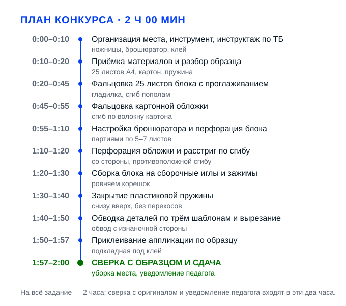
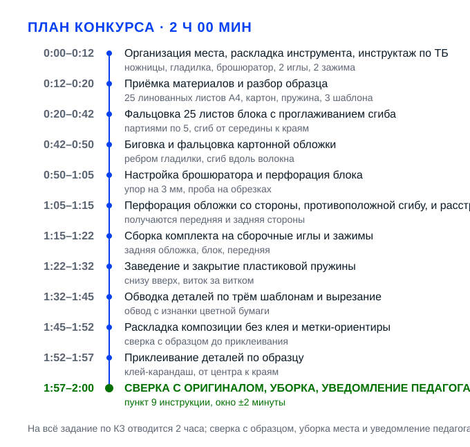
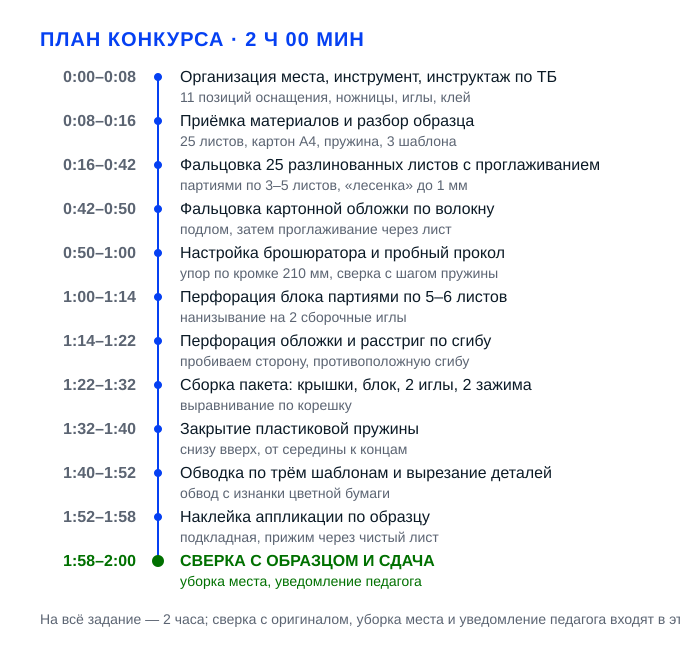

Картонажно-переплётное дело (ФВ)
Задания ниже — официальные файлы «Абилимпикс» (источник: abilympics-russia.ru), разложенные по категориям. Решения написаны по тексту задания, регламенту и критериям оценки; в них указано, что именно проверяет эксперт.
Школьник
14–16 лет, базовый уровень заданияВ официальном файле категории не разделены отдельными разделами — приводим задание целиком; различия по категориям смотрите в таблице модулей.
Пошаговое решение
Одно задание, один результат и два часа на всё: изготовить блокнот на пластиковой пружине и украсить обложку аппликацией по образцу. Модулей с таймингами здесь нет: есть девять видов работ в пошаговой инструкции, и время внутри двух часов вы распределяете сами. Материалы выдают готовыми: двадцать пять листов бумаги для печати А4, один лист картона А4, одна пластиковая пружина и цветная бумага, шаблонов три. Работа идёт строго по технологии: фальцовка листов и обложки с проглаживанием гладилкой, перфорация блока на брошюраторе, перфорация обложки со стороны, противоположной сгибу, и расстриг её по сгибу на две части. Дальше сборка на сборочные иглы, зажимы и пружину, и только в конце — аппликация. Каждая операция делается один раз, поэтому первые двадцать минут уходят на организацию места и приёмку, а последние три минуты — на сверку с образцом, уборку и уведомление педагога.

Задача 1. Организовать рабочее место, пройти инструктаж и принять материалыЕдиное задание · п. 1–3 пошаговой инструкции · ориентировочно 20 минут из 2 часов
Конкурсное задание у школьников одно и целиком укладывается в два часа: сфальцевать двадцать пять листов блока и картонную обложку, пробить всё на брошюраторе, собрать блокнот на пластиковую пружину и украсить обложку аппликацией по образцу. Модулей с отдельными нормативами в задании нет, поэтому двадцать минут, потраченные здесь, вы отнимаете у фальцовки, но именно они дают ровный корешок и целые ножницы. Порядок на столе, исправный инструмент и полный комплект материалов — это то, что потом уже не исправить: недоданный лист бумаги или пружина не того шага остановят работу на середине.
Действие 1.1. Занять место и разложить инструмент
Шаг 1.1.1
Подходим к своему столу, проверяем, что стул стоит устойчиво, а столешница не качается. Садимся так, чтобы крышка стола была на уровне локтя или на два-три сантиметра ниже: тогда при фальцовке плечи опущены, а кисти работают без напряжения. Ноги ставим на пол всей ступнёй, спину держим прямо, корпус не наваливаем на стол. По нормативам задания на одно рабочее место отводится площадка 3000 на 1900 миллиметров и проход между местами не уже 1,5 метра — значит, отодвинуть стул и разложить материалы в сторону соседа нельзя, всё помещается только перед собой и справа.
Посадка — не формальность: за два часа работы на низком стуле руки начинают дрожать к концу фальцовки, и сгибы уходят от середины на миллиметр-два. Результат сравнивают с оригиналом целиком, поэтому неровная стопа сразу видна на корешке. В требованиях к рабочему месту прописаны и условия: температура 21–24 градуса, влажность 40–60 процентов, шум не выше 81 дБА.
Проверьте себя по трём признакам: локти на уровне столешницы или чуть выше, ступни полностью на полу, между корпусом и краем стола проходит ладонь. Покачайте стол рукой — он не должен скрипеть и сдвигаться. Если стул крутится или ниже нормы, поднимите его до нужной высоты сразу, до начала работы, потому что потом пересаживаться будет некогда.
Самая частая ошибка — сесть на край стула и работать с наклоном вперёд: через полчаса начинает болеть спина, движения становятся мелкими, и листы складываются с перекосом. Вторая ошибка — поставить сумку или куртку рядом со столом: они съедают часть прохода в 1,5 метра, и эксперт делает замечание по организации рабочего места ещё до старта.
Эксперт обходит площадку в первые минуты и фиксирует, как участник сел и что лежит на столе. Отдельно смотрит, не мешают ли вещи проходу и хватает ли места самому участнику.
Шаг 1.1.2
Раскладываем инструмент по постоянным местам, чтобы каждый предмет брался не глядя. Справа от блока кладём ножницы кольцами к себе, рядом гладилку — ручкой к правой руке. Слева ставим подкладную под клей, чтобы она не мешала резать. Карандаш и клей-карандаш — в верхней части стола, ближе к дальнему краю: их берут реже, чем ножницы. Сборочные иглы — две штуки — кладём в мелкую коробочку или на магнит, зажимы для бумаги — два — рядом с блоком, шаблоны — все три — под прозрачный файл или под груз, чтобы не сдвинулись и не помялись.
По перечню оборудования на участника идёт ровно одиннадцать позиций, и у каждой своё место: брошюратор, ножницы, гладилка, карандаш, клей-карандаш, три шаблона, подкладная, две сборочные иглы, два зажима, стол и стул. Когда инструмент разложен по зонам, вы не тратите время на поиски в самый неудобный момент — например, когда уже намазана клеем деталь аппликации. Порядок на столе эксперт видит всё время работы.
Сосчитайте вслух: ножницы — одна пара, гладилка — одна, иглы — две, зажимы — два, шаблоны — три. Проверьте, что ножницы лежат кольцами к себе и сомкнуты, иглы не лежат на столе открыто, а подкладная накрывает участок, где будете клеить. Всё, что не используется в этом задании, со стола убираем.
Типичная ошибка — свалить инструмент в одну кучу посередине: приходится каждый раз искать иглу среди шаблонов, а игла, потерянная в стопе листов, — это отдельное нарушение техники безопасности. Вторая ошибка — оставить ножницы открытыми и лезвиями к соседу: замечание следует немедленно, и оно переносится в общую оценку.
Эксперт смотрит на организацию в динамике: остаётся ли порядок к моменту перфорации и к моменту аппликации. Хаос на столе к середине работы читается как потеря контроля над процессом.
Шаг 1.1.3
Проверяем исправность инструмента до первого движения. У ножниц проверяем ход: раскрываем и закрываем — лезвия должны сходиться по всей длине, без зазора у кончика и без заедания; винт не должен болтаться, а ручки — трещать. Брошюратор осматриваем со всех сторон: он настольный и неэлектрический, значит, вся сила идёт от руки, и если ручка ходит туго или, наоборот, проваливается, отверстия получатся рваными. Проверяем, что ограничитель по формату двигается и фиксируется, лоток для высечки пустой, а сам станок стоит устойчиво и не съезжает по столу.
Работать разрешено только исправным и заточенным инструментом — это первое правило техники безопасности в задании, и оно же практическое: тупые ножницы мнут картон, и на срезе обложки остаётся лохматая кромка. Заедающий брошюратор даёт смещённые отверстия на второй-третьей партии, и блок перестаёт садиться на пружину ровно. Замена инструмента после старта не предусмотрена.
Сделайте два пробных движения: сомкните ножницы на обрезке бумаги — лист должен разрезаться от начала до кончика без усилия и без «жевания»; прогоните брошюратор на пустом ходу — ручка опускается плавно, возвращается сама, посторонних щелчков нет. Если что-то не так, поднимите руку и позовите эксперта до начала работы.
Часто берут первые попавшиеся ножницы, не проверив винт: на картоне они разъезжаются, и линия реза уходит в сторону от разметки на два-три миллиметра. Вторая ошибка — начать пробивать блок на непроверенном станке: смещённый ограничитель обнаруживается только на десятом листе, и переделывать приходится всю стопу.
Эксперт может попросить показать, как вы проверяли инструмент, и смотрит, есть ли на столе запасные лезвия или обрезки для пробы. Проба на обрезках — признак того, что участник понимает технологию, а не просто выполняет команды.
Действие 1.2. Пройти инструктаж по технике безопасности
Шаг 1.2.1
Слушаем инструктаж по ножницам и сразу переводим его в привычку. Держим ножницы только за кольца, не поднимаем их лезвиями вверх и не размахиваем во время разговора. Кладём на стол сомкнутыми лезвиями от себя, кольцами к себе. Передаём соседу или эксперту, держа за сомкнутые лезвия так, чтобы кольца были направлены от передающего. Режем только на своём рабочем месте, не вставая и не наклоняясь через блок, а если нужно отойти — ножницы остаются лежать сомкнутыми на столе, а не в кармане и не в руке.
В разделе охраны труда перечислено двенадцать правил работы с ножницами, и любое нарушение эксперт видит боковым зрением: он стоит рядом и наблюдает за руками. Помимо риска порезаться, есть и технологический смысл — ножницы, брошенные открытыми среди листов, цепляют и задирают кромки, а помятый лист уже не даст ровного сгиба. Участникам с нарушением слуха инструкцию выдают текстом.
Проверьте себя прямо сейчас: ножницы лежат сомкнутыми, кольцами к вам, лезвия не выступают за край стола. Когда режете, вторая рука держит лист не перед линией реза, а сбоку от неё, на расстоянии не меньше двух-трёх сантиметров от лезвий. Волосы и рукава не свисают над рабочей зоной.
Частая ошибка — держать лист прямо перед лезвиями, пальцами по линии реза: при соскальзывании ножницы идут именно туда. Вторая — оставить ножницы открытыми на краю стола: они падают, а поднимать их с пола в чужой зоне уже нельзя, придётся просить замену.
Эксперт фиксирует нарушения техники безопасности отдельно от качества изделия. Аккуратное обращение с ножницами он отмечает как самостоятельный навык, а не как само собой разумеющееся.
Шаг 1.2.2
Разбираемся с брошюратором до того, как в него попадёт первый лист. Станок настольный, не электрический, но ручка идёт с заметным усилием, и главная опасность — попадание пальцев в зев перфорации, когда вторая рука поправляет лист. Поэтому правило простое: сначала выставляем лист по ограничителю и придерживаем его за верхнюю кромку, подальше от линии пробивки, и только потом опускаем ручку. Поправлять лист под опущенными ножами нельзя ни при каких обстоятельствах. Не отходим от станка с поднятой ручкой и не отвлекаемся на разговоры в момент нажима.
В требованиях охраны труда отдельным блоком идут правила работы на станке: не отвлекаться, не прикасаться к движущимся частям, работать только на исправном станке. Для этой компетенции это не абстракция: перфорация занимает двадцать пять минут и идёт партиями, и как раз на пятой-шестой партии внимание падает — тогда и случаются травмы. Ровные отверстия тоже получаются только при спокойном нажиме.
Проверьте: при пробном нажиме пальцы обеих рук находятся вне зева, лист придерживается за верхний край, корпус стоит прямо, а не нависает над ручкой. Ручка опускается до упора за один плавный ход, без рывков и без повторных поджатий. Станок не сдвигается с места при нажиме.
Классическая ошибка — держать стопу листов левой рукой прямо у линии пробивки: при смещении листа пальцы оказываются под ножами. Вторая — пробивать «на весу», не доведя ручку до упора: отверстия получаются недобитыми, с надрывом, и пружина в них садится криво.
Эксперт наблюдает за перфорацией вплотную, потому что это самая травмоопасная операция задания. Посторонние движения у зева он останавливает сразу, и это отражается в оценке безопасности.
Шаг 1.2.3
Отдельно проговариваем правила для игл и клея, потому что они мелкие и кажутся безобидными. Сборочные иглы считаем перед началом работы: их две, и это число нужно помнить до конца. Иглы не берём в рот, не вкалываем в одежду, не оставляем в стопе листов после работы — потерянная игла в блоке обнаруживается только на сборке, когда уже поздно. Клей-карандаш держим только на подкладной, берём столько, сколько нужно на одну деталь, излишки убираем мягкой салфеткой, прижимая, а не размазывая. После работы руки моем с мылом.
В инструкции к заданию эти правила вынесены отдельными пунктами: не оставлять иглы в материале, не брать их в рот, знать количество взятых игл и не допускать потери; про клей сказано, что излишки убирают салфеткой, а руки после работы моют. Практический смысл тоже есть: клей с избытком выступает за края детали и оставляет на картоне блестящие полосы, а потерянная игла царапает обложку изнутри.
Пересчитайте иглы перед работой и после: было две — осталось две, обе на месте, ни одна не торчит в стопе. Проверьте, что подкладная лежит под тем участком, где будете клеить, а салфетка для излишков — под рукой. Клей-карандаш закрыт, колпачок на месте.
Самая частая ошибка — положить иглу на стол «на минутку» и потом искать её в листах: обнаруживается это уже на сборке, когда блок пробит и перебирать его нельзя. Вторая — намазывать клей густо «чтобы держалось»: картон ведёт волной, и обложка перестаёт быть плоской.
Эксперт проверяет, знает ли участник количество игл, и смотрит на клеевые операции: пятна клея на обложке он относит к аккуратности выполнения. Иглы он пересчитывает вместе с участником — это прямая проверка пункта инструкции о количестве игл.
Действие 1.3. Принять материалы и разобрать образец
Шаг 1.3.1
Получаем блок бумаги и пересчитываем листы: их должно быть ровно двадцать пять, формат А4, бумага для печати. Пересчитывать лучше не на глаз, а перекладывая по пять — пять раз по пять, и вслух. Сразу проверяем качество: листы не мятые, углы не заломлены, кромки ровные, все листы одинаковой белизны и плотности. Отдельно ищем лист с пятном, складкой или надрывом по краю: после фальцовки он пойдёт в брак, и заметно это будет только на готовом блокноте. У школьников листы идут чистой бумагой для печати — без разлиновки и декора, в отличие от категории студентов, где блок уже разлинован.
Двадцать пять листов — не «примерно», а точное число из задания, и оно определяет толщину блока, а значит, и то, насколько свободно ляжет пружина. Если листов двадцать четыре, блок тоньше, пружина сядет с люфтом, и страницы начнут «гулять» по зубцам. Если двадцать шесть — пружина не закроется или край обложки пойдёт волной. Замена материалов после старта идёт только через эксперта.
Разложите листы веером и просмотрите на просвет: не должно быть волнистых, с надрывом, с загнутым уголком. Пересчитайте повторно после раскладки — итог должен совпасть: двадцать пять. Стопа лежит ровно, все кромки совпадают, ничего не выступает больше чем на миллиметр.
Типичная ошибка — взять стопу «как дали» и обнаружить недостачу на сборке, когда блок уже пробит: добавить лист в середину уже невозможно. Вторая — оставить в работе лист с заломом на углу: после фальцовки залом превращается в белый надлом на сгибе, и он виден на каждой странице блока.
Эксперт может пересчитать блок вместе с участником на приёмке. Расхождение по количеству листов он фиксирует до старта, чтобы потом не было спорных ситуаций.
Шаг 1.3.2
Берём лист картона А4 для обложки и осматриваем его как материал, а не как фон. Определяем направление волокон: картон легко гнётся вдоль волокон и сопротивляется поперёк. Проверяем осторожно, на уголке или на обрезке: если при сгибе поперёк волокон появляется белая полоса надлома, значит, сгиб пойдёт именно так — некрасиво. Значит, обложку нужно фальцевать вдоль волокон. Находим лицевую сторону: у картона она ровнее и без следов сетки; лицевую кладём наружу. Проверяем углы — они не должны быть смяты, потому что смятый угол после перфорации и расстрига даст неровную кромку на видном месте.
Картон — единственная жёсткая деталь изделия, и обложка видна всегда: и в готовом блокноте, и в сравнении с образцом. Сгиб поперёк волокон даёт надлом, который со временем рвётся именно по корешку, а на конкурсе виден сразу как белая полоса. Кроме того, от направления волокон зависит, ляжет ли обложка плоско: картон, согнутый поперёк, «ведёт» винтом, и половинки обложки перестают быть параллельны блоку.
Проверьте пробным сгибом на обрезке: вдоль волокон картон гнётся мягко, без белой полосы, поперёк — с хрустом и надломом. Убедитесь, что на лицевой стороне нет пятен, заломов и царапин, углы целые. Пометьте карандашом на обороте, где верх — чтобы потом не перевернуть обложку при перфорации.
Ошибка — начать сгибать картон, не проверив волокна: на середине сгиба появляется белая полоса, и обложку уже не спасти. Вторая — перепутать лицевую и оборотную сторону: после перфорации и склейки аппликации шершавая изнанка окажется снаружи, и это видно на сравнении с образцом.
Эксперт смотрит на обложку при сдаче: ровный корешок без надлома, целые углы, лицевая сторона наружу. Это первое, что бросается в глаза в готовом изделии.
Шаг 1.3.3
Раскладываем остальные материалы и сверяем комплект с заданием: одна пластиковая пружина, цветная бумага для аппликации, три шаблона. Пружину проверяем по длине и шагу: она должна быть не короче высоты блока после фальцовки — то есть примерно половины листа А4 — и её зубцы должны стоять с одинаковым шагом, без погнутых и разведённых. Шаблоны пересчитываем и раскладываем по размеру: от самого крупного к самому мелкому, чтобы потом брать их по порядку. Цветную бумагу подбираем по образцу — те же цвета и оттенки, а не «похожие», потому что аппликация оценивается именно по образцу.
Комплектность — это то, что нельзя добрать в процессе: цветной бумаги нужного цвета может просто не оказаться на площадке, а шаблон без пары деталей означает, что аппликация не совпадёт с образцом. Пружина, подобранная не по толщине блока, — вторая по частоте причина переделки: слишком узкая не закроется, слишком широкая даст болтанку страниц. Сверка комплекта занимает две минуты, а экономит полчаса.
Проверьте три вещи: пружина по длине равна высоте блока и её шаг совпадает с шагом отверстий на брошюраторе; шаблонов ровно три и все целые, без смятых углов; цветная бумага совпадает с образцом по цвету. Всё разложено по порядку использования, ничего не лежит на полу.
Частая ошибка — взять пружину «на глаз» и обнаружить на сборке, что она короче блока на два-три отверстия: тогда либо конец блока остаётся незакрытым, либо пружину приходится снимать и просить другую. Вторая — обвести шаблон, у которого смят угол: деталь выйдет с искажением, и по контуру она не совпадёт с образцом.
Эксперт проверяет соответствие материалов перечню на этапе выдачи и потом смотрит, использованы ли они по назначению. Лишние, неиспользованные материалы на столе он отмечает как неаккуратность.
Шаг 1.3.4
Кладём перед собой образец — готовый блокнот — и разбираем его по слоям, пока он ещё не закрыт нашей работой. Смотрим сбоку на корешок: спереди обложка, за ней двадцать пять листов, сзади обложка; всё пронизано пружиной снизу вверх. Считаем отверстия и смотрим, на каком расстоянии от края они стоят. Открываем обложку и смотрим, где именно расположены детали аппликации: сколько их, какого они цвета, какой стороной повёрнуты, есть ли симметрия относительно середины. Полезно положить образец рядом с собой на подставку и не убирать до самой сдачи: сверка идёт по нему, а не по памяти.
Девятый пункт пошаговой инструкции звучит буквально так: проверяем правильность, сравниваем с оригиналом. Значит, образец — не подсказка, а измерительный инструмент, и все решения по композиции принимаются по нему. Если разобрать образец заранее, не придётся угадывать, с какой стороны перфорировать обложку и куда клеить детали. Кто смотрит на образец только в конце, почти всегда переделывает аппликацию.
После разбора вы можете ответить на четыре вопроса без подглядывания: сколько отверстий по высоте, на каком расстоянии они от корешка, сколько деталей аппликации и в каком порядке они наклеены. Образец стоит слева, на виду, и не закрыт листами.
Ошибка — отложить образец в сторону «чтобы не мешал»: тогда аппликация делается по воспоминаниям, и расхождения обнаруживаются на финальной сверке, когда клей уже схватился. Вторая — рассматривать только лицевую сторону, не посмотрев на корешок: именно там видно, с какой стороны обложки идут отверстия.
Эксперт видит, пользуется ли участник образцом в процессе. При финальной оценке он сравнивает изделие с оригиналом по расположению, цвету и размерам элементов.
Задача 2. Сфальцевать блок из 25 листов и картонную обложкуЕдиное задание · п. 1–2 пошаговой инструкции · ориентировочно 35 минут из 2 часов
Фальцовка — самая длинная операция задания: двадцать пять листов, каждый складывается пополам и проглаживается гладилкой, потом то же самое делается с картонной обложкой. Технически это просто, и именно поэтому здесь теряют больше всего: сгиб, сделанный на глаз, уводит корешок на миллиметр, и отверстия перфорации встают по разной линии. Правильный порядок — сначала разметить ось сгиба, потом сложить с совмещением кромок, потом прогладить сгиб гладилкой от середины к краям, и только после этого брать следующий лист.
Действие 2.1. Сфальцевать 25 листов блока
Шаг 2.1.1
Берём первый лист и определяем, как он лежит: длинная сторона горизонтально. Лист А4 складывается пополам по короткой стороне — так получается половина А4, то есть А5, и именно по этой линии потом пойдут отверстия. Перед первым сгибом делаем пробу: подносим лист к свету и смотрим, как он ведёт себя при сгибании вдоль и поперёк — вдоль волокон сгиб ложится мягко, поперёк лист сопротивляется и норовит треснуть. Если бумага сопротивляется, лист переворачиваем: важно, чтобы все двадцать пять листов фальцевались в одном направлении, иначе готовая стопа будет «дышать» и корешок пойдёт волной.
Одинаковое направление сгиба у всех листов — это то, что делает блок блоком. Лист, сложенный поперёк волокон, пружинит и после проглаживания всё равно раскрывается на два-три градуса; двадцать пять таких листов дадут стопу, которая не сожмётся под перфорацию и не ляжет ровно под пружину. Проба на первом листе занимает секунды, а переделка всей фальцовки — это уже тридцать минут из двух часов.
Проверьте на пробном листе: сгиб получается мягким, лист после проглаживания лежит сложенным и не раскрывается сам. Если раскрывается — направление выбрано неверно, переверните лист на 90 градусов и повторите пробу. Убедитесь, что лист не имеет следов сгиба от предыдущей попытки.
Ошибка — фальцевать листы как попало, часть вдоль, часть поперёк: стопа получается разной жёсткости, и при зажиме она сжимается неравномерно, отчего отверстия идут по кривой. Вторая — не делать пробу вообще и обнаружить, что лист треснул по сгибу, уже после проглаживания.
Эксперт смотрит на первый сгиб, потому что по нему видно, понимает ли участник, что делает. Ровный, мягко лежащий сгиб на первом листе — признак того, что дальше работа пойдёт правильно.
Шаг 2.1.2
Складываем лист пополам, совмещая углы: берём за короткие стороны, поднимаем дальний край к ближнему и сначала прижимаем середину, потом разглаживаем к углам. Углы должны совпасть точно, без «ступеньки»: если один угол выступает на миллиметр, значит, лист сложен с перекосом, и его нужно раскрыть и сложить заново, а не подтягивать на весу. Складываем не по одному листу, а партиями по пять: разложили пять листов, сложили каждый с совмещением, прогладили — и только потом берём следующие пять.
Совмещение углов — это и есть точность будущего корешка: при перекосе в один миллиметр на листе по двадцать пять листов набегает до сантиметра, и стопа перестаёт быть прямоугольной. Перфорация в таком блоке встаёт по разной линии, отверстия «пляшут», а при закрытии пружины край обложки выходит за блок. Партии по пять нужны, чтобы не сбиться со счёта и чтобы рука не «замылилась» на двадцатом листе.
Проверьте сложенный лист на свет: линия сгиба должна быть прямой, а кромки совпадать по всей длине, без выступающих уголков. Положите лист на стол — он лежит плоско, не «вертолётом». Пять сложенных листов в стопке дают ровный торец с одной стороны.
Самая частая ошибка — складывать, не совмещая углы, а «на глаз»: внешне лист сложен, но кромки расходятся на миллиметр-два, и на стопе это превращается в ступеньку. Вторая — тянуть лист за угол, чтобы выровнять уже сложенный: вместо сгиба получается залом и волнистая кромка.
Эксперт берёт в руки несколько листов из середины стопы и смотрит на совмещение кромок. Ровный торец у всех двадцати пяти листов — это и есть критерий аккуратности фальцовки.
Шаг 2.1.3
Проглаживаем сгиб гладилкой: держим её рабочей рукой как продолжение ладони, ставим на середину сгиба и ведём к краю одним уверенным движением, потом от середины ко второму краю. Нажим средний — такой, чтобы сгиб стал плоским, но бумага не начала блестеть и не пошла волной. Лист при этом придерживаем второй рукой, не давая ему съехать. Сгиб можно дополнительно «зафиксировать» ребром линейки или ногтем большого пальца, а потом прогладить гладилкой — так он ложится острее и держится лучше.
Проглаживание — то, что отличает фальцовку от простого сгибания. Недоглаженный сгиб пружинит, стопа не сжимается в зажимах, и при перфорации листы смещаются друг относительно друга: отверстия получаются со сдвигом до полутора миллиметров. Кроме того, по сгибу потом идёт пружина, и мятый, волнистый край она не держит — блок начинает «вываливаться». Гладилка есть в перечне оборудования именно для этой операции.
Сгиб должен быть плоским и острым, без блеска и без белой полосы надлома. Проведите пальцем по сгибу: он не должен ощущаться как валик. Положите лист сгибом на край стола и посмотрите на просвет — линия ровная, без разрывов волокон.
Ошибка — проглаживать сгиб, не придерживая лист: он съезжает, и вместо сгиба по разметке получается сгиб по диагонали, который уже не исправить. Вторая — давить изо всех сил: на бумаге появляется блестящая полоса, а на картоне — надлом, который виден на готовом изделии.
Эксперт проверяет остроту сгиба на нескольких листах и смотрит, нет ли блестящих следов от гладилки: и то, и другое — признаки качества фальцовки. Ещё один признак — ровная линия сгиба по всей длине листа, без ухода в сторону у краёв.
Шаг 2.1.4
Собираем сфальцованные листы в стопу: складываем их друг на друга сгибом в одну сторону, причём каждый следующий лист укладываем так, чтобы сгибы совпали по линии. Периодически, каждые пять листов, выравниваем стопу, постукивая ею по столу со стороны корешка — листы сами садятся на место. В конце пересчитываем: двадцать пять листов, ни больше, ни меньше. Стопу пока не зажимаем, а накрываем чистым листом или кладём под груз, чтобы сгибы «устоялись».
Стопа, выровненная по корешку до перфорации, — это половина успеха перфорации: ограничитель брошюратора выставляет линию пробивки от края, и если корешок «лесенкой», отверстия сядут вразнобой. Выравнивание постукиванием — приём переплётчиков: он работает потому, что листы сами находят плоскость. Под грузом сгибы распрямляются, и стопа получается плотнее, что важно для точной пробивки всех двадцати пяти листов за один проход партии.
Проверьте стопу с торца: линия сгибов образует прямую, ни один лист не выступает больше чем на миллиметр. Счёт — двадцать пять. Стопа стоит на столе устойчиво, не «расползается» при подъёме за края, корешок остаётся прямым.
Ошибка — не выравнивать стопу и сразу нести её к брошюратору: часть листов оказывается сдвинутой, и после пробивки блок невозможно ровно надеть на иглы. Вторая — забыть пересчитать листы после фальцовки: один лист легко теряется среди обрезков, а его отсутствие обнаруживается только на сборке.
Эксперт смотрит на торец стопы и на её плотность. Ровный, плотный корешок до перфорации означает, что дальше работа пойдёт без переделок. Если между листами видна ступенька, он просит пролистать стопу и найти сбившийся лист.
Действие 2.2. Сфальцевать картонную обложку
Шаг 2.2.1
Кладём картон А4 лицевой стороной вниз, чтобы не поцарапать её при работе, и ещё раз проверяем направление волокон на уголке: гнём уголок вдоль и поперёк, смотрим, где появляется белая полоса. Обложка фальцуется пополам по короткой стороне, как и листы блока, — иначе она не совпадёт с блоком по формату. Если волокна идут поперёк линии будущего сгиба, картон нужно развернуть: задание допускает только один вариант — сгиб вдоль волокон. Карандашом ставим две лёгкие метки на середине коротких сторон, чтобы линия сгиба была не на глаз.
На картоне ошибка в направлении волокон не «пружинит», как на бумаге, а ломается: поперёк волокон появляется белая полоса надлома, и по ней обложка разойдётся через несколько открываний. В готовом изделии это выглядит как потёртый, побелевший корешок. Метки на середине коротких сторон дают сгиб точно по центру, поэтому обе половинки обложки будут одинаковыми — а её потом расстригают на две части.
Проверьте пробным сгибом уголка: вдоль волокон картон гнётся без белой полосы. Метки стоят ровно на середине обеих коротких сторон — расстояние до каждого угла одинаковое, проверьте линейкой или на глаз по кромке. Лицевая сторона смотрит вниз, чистая.
Ошибка — сфальцевать картон поперёк волокон, потому что «так лежал»: половина обложки после этого идёт винтом, и блокнот не закрывается плоско. Вторая — поставить метку не по центру: половинки обложки получаются разной ширины, и после расстрига передняя и задняя части не совпадают с блоком.
Эксперт осматривает обложку на просвет и на изгиб. Белая полоса по корешку — самый заметный дефект в этом задании, и он виден без всяких измерений. Он также смотрит, с какой стороны сгиб: по корешку видно, совпадает ли обложка с блоком.
Шаг 2.2.2
Сгибаем картон не «в один залом», а в два приёма. Сначала по меткам делаем неглубокую биговку — проводим по линии сгиба тупым краем ножниц или ребром металлической линейки с лёгким нажимом, продавливая верхний слой картона на десятые доли миллиметра. Потом поднимаем дальний край к ближнему, совмещая кромки, и сгибаем по биговке, придерживая место сгиба пальцами обеих рук и постепенно продвигая их от середины к краям.
Биговка снимает напряжение верхнего слоя картона: без неё волокна рвутся, и на сгибе появляется та самая белая полоса. Переплётчики называют это «подготовить сгиб» — именно поэтому обложка потом раскрывается мягко и не ломается по корешку. Сгибание с продвижением пальцев от середины к краям не даёт картону пойти «домиком»: если согнуть сразу по всей длине, середина провиснет и появится волна.
Проверьте: линия сгиба прямая, без белых разрывов, кромки совпадают по всей длине. Сложите обложку и посмотрите на неё с торца — она не «лодочкой» и не винтом, половинки лежат параллельно. Биговка не должна быть сквозной, картон не разрезан.
Ошибка — продавить биговку слишком глубоко, до разреза: картон рвётся по этой линии при первом же открывании. Вторая — сгибать картон сразу, без биговки: появляется белая полоса, и обложка считается испорченной, а заменить её после старта нельзя.
Эксперт проверяет корешок обложки на излом и на белизну сгиба. Аккуратная биговка видна по ровной, без надрывов, линии. Биговка должна быть вдавленной, но не сквозной: на просвет картон целый, а линия читается.
Шаг 2.2.3
Проглаживаем сгиб обложки гладилкой через лист чистой бумаги: подкладываем лист, чтобы не оставить на картоне лоснящихся следов, и ведём гладилкой от середины сгиба к краям, сначала в одну сторону, потом в другую. Затем обложку раскрываем, складываем в обратную сторону и проглаживаем сгиб ещё раз — так он становится мягким и не «тянет» изделие. Кладём обложку под груз рядом с блоком: пока делаете перфорацию, сгиб окончательно устоится.
Проглаживание через бумагу — приём, который спасает лицевую сторону: гладилка, работающая прямо по картону, оставляет блестящую полосу, а на цветном картоне — потёртость. Проглаживание в обе стороны снимает остаточное напряжение, и обложка перестаёт «закрываться сама». Это важно ещё и потому, что обложку потом перфорируют и расстригают по сгибу: ровный, мягкий сгиб даёт ровную линию расстрига, а жёсткий уводит ножницы в сторону.
Проверьте: на лицевой стороне нет блеска и вмятин, сгиб мягкий, обложка раскрывается и остаётся в раскрытом положении хотя бы на 180 градусов, а не захлопывается. Кромки половин совпадают, линия сгиба прямая.
Ошибка — гладить прямо по лицевой стороне: остаётся лоснящаяся полоса, которую не убрать, и она видна на готовом изделии. Вторая — не прогладить сгиб вообще: обложка пружинит, и при расстриге по сгибу линия уходит в сторону.
Эксперт открывает обложку и смотрит, как она ведёт себя. Мягкий сгиб без следов гладилки — признак того, что операция выполнена по технологии. Проверяет и лицевую сторону: лоснящихся полос от гладилки на ней быть не должно.
Действие 2.3. Подготовить блок и обложку к перфорации
Шаг 2.3.1
Собираем блок в том порядке, в котором он будет прошит: берём сфальцованные листы и укладываем их друг на друга, вкладывая каждый следующий в предыдущий так, чтобы сгибы легли в одну линию. Не сшиваем и не склеиваем — пока это просто стопа. Уложив все двадцать пять, прижимаем стопу ладонью и выравниваем по корешку и по верхнему краю: блок должен стать прямоугольником с ровными торцами. Подравнивайте листы пальцами по кромке, а не за углы: углы мнутся, и залом остаётся в изделии.
Порядок и плотность стопы определяют, как лягут отверстия: брошюратор пробивает партию за один ход, и если внутри стопы есть воздушная прослойка, верхние листы пробьются, а нижние сместятся. Ровный прямоугольник нужен и для того, чтобы обложка, которую расстригут на две части, точно совпала с блоком по высоте. В задании блок собирается именно так — вручную, без клея и без шитья, вся сборка держится на пружине.
Проверьте стопу по трём сторонам: корешок — прямая линия, верхний и нижний торцы — прямые углы. Листы не выпирают из середины. Толщина стопы по всей высоте одинаковая: приложите ладонь — не чувствуется утолщений.
Ошибка — собрать стопу, не вкладывая листы друг в друга, а просто положив их сверху: корешок получается «лесенкой», и часть отверстий не совпадает. Вторая — оставить в стопе воздушный карман у корешка: при пробивке листы проваливаются, и отверстия выходят на разном расстоянии от края.
Эксперт смотрит на блок до перфорации: ровный торец и одинаковая толщина — условие, без которого дальше всё пойдёт с перекосом. Он просит показать торец корешка и смотрит, вложены ли листы друг в друга или просто сложены сверху.
Шаг 2.3.2
Зажимаем блок двумя зажимами для бумаги: один ставим у корешка на расстоянии примерно двух сантиметров от линии сгиба, второй — на противоположной стороне, ближе к свободному краю. Зажимы ставим так, чтобы они не перекрывали линию, по которой пойдут отверстия, иначе брошюратор не достанет до корешка. Затягиваем умеренно: блок должен держаться плотно, но на листах не должно остаться глубоких следов. После зажима ещё раз проверяем, не сдвинулись ли листы.
Два зажима в перечне оборудования стоят не для симметрии: один держит корешок, второй не даёт стопе «разъехаться» с противоположной стороны, и вместе они фиксируют блок как единую заготовку на время перфорации и сборки. Если зажать только у корешка, свободная часть стопы разойдётся веером, и при пробивке листы встанут под углом. Плотный, но не передавленный зажим — условие ровных отверстий и целых кромок.
Проверьте: приподнимите блок за зажим — ни один лист не выскальзывает и не проворачивается. Линия корешка осталась прямой, листы не сдвинулись. Зажимы не закрывают линию будущей пробивки: от сгиба до зажима остаётся не меньше двух сантиметров.
Ошибка — зажать блок слишком сильно: на листах остаются вмятины от зубцов, а картон обложки продавливается. Вторая — поставить зажим прямо на линию пробивки: брошюратор упирается в зажим, и часть отверстий оказывается смещённой или непробитой.
Эксперт смотрит на фиксацию блока: держится ли стопа как одно целое. Следы от зажимов на готовом изделии он тоже замечает. Он пробует поднять блок за зажим: если стопа проворачивается, значит, зафиксирована слабо.
Шаг 2.3.3
Готовим обложку к перфорации отдельно от блока и сразу определяем, с какой стороны пойдут отверстия. Обложка сложена пополам; отверстия пробиваются со стороны, противоположной сгибу, — то есть по свободным кромкам, а не по корешку. Кладём обложку сгибом к себе, лицевой стороной вверх, и помечаем карандашом на обороте ту половину, которая пойдёт вперёд: после расстрига половинки нельзя путать. Рядом кладём блок и сверяем: высота обложки должна совпадать с высотой блока после фальцовки, иначе пружина не сойдётся по отверстиям.
Пункт четвёртый пошаговой инструкции говорит прямо: перфорировать обложку со стороны, противоположной сгибу, и только потом расстричь её по сгибу на две части. Это единственная операция, где легко перепутать сторону: если пробить по сгибу, после расстрига обе половинки останутся без отверстий, и изделие испорчено — другого картона не выдадут. Совпадение высоты блока и обложки — второе условие.
Проверьте совпадение трёх вещей: высота обложки равна высоте блока, линия пробивки на обложке отмечена со стороны, противоположной сгибу, и пометка «перед» стоит на обороте одной из половин. Обложка лежит лицевой стороной вверх, сгиб — к себе.
Классическая ошибка — пробить обложку по сгибу: после расстрига обе половинки остаются без отверстий, и блокнот собрать нечем. Вторая — не совместить блок и обложку по высоте, из-за чего отверстия обложки не попадают на шаг пружины, и она садится с перекосом.
Эксперт проверяет сторону перфорации обложки, потому что это ключевая развилка всего задания: ошибка здесь означает, что изделие не собрать. Ему важно и то, чтобы участник мог объяснить, почему отверстия идут по свободным кромкам.
Задача 3. Пробить блок и обложку на брошюратореЕдиное задание · п. 3–4 пошаговой инструкции · ориентировочно 25 минут из 2 часов
Брошюратор в этом задании настольный и неэлектрический: отверстия пробиваются ручкой, за один нажим на партию листов. Сначала настраивается упор — от него зависит, на каком расстоянии от корешка встанут все двадцать пять отверстий, и если промахнуться здесь, блок уже не собрать. Потом блок пробивается партиями по пять-семь листов, а обложка — отдельно, со стороны, противоположной сгибу, после чего расстригается по сгибу на две части: переднюю и заднюю.
Действие 3.1. Настроить брошюратор
Шаг 3.1.1
Ставим брошюратор перед собой на устойчивую часть стола, ручкой к рабочей руке, и проверяем, что он не качается: подложите под ножку сложенную салфетку, если есть люфт. Находим ограничитель — металлическую или пластиковую планку, которая двигается по шкале и задаёт расстояние от края листа до линии пробивки. Выставляем её так, чтобы отверстия шли на 3–5 миллиметров от корешка: ближе нельзя — край оборвётся, дальше — страницы будут проворачиваться на пружине. Фиксируем ограничитель винтом или защёлкой и проверяем рукой, что он не сдвигается от нажима.
Расстояние от края до отверстий — единственный параметр, который одинаков для всех двадцати пяти листов, блока и обеих половинок обложки. Если ограничитель «поехал» на середине работы, отверстия разойдутся по линии, и пружина сядет с перекосом: часть листов будет зажата, часть болтаться. Пять миллиметров от края — это ещё и запас прочности бумаги: при трёх миллиметрах кромка рвётся при перелистывании, и страница вылетает из блока.
Проверьте фиксацию: нажмите на ограничитель пальцем — он не должен двигаться. Приложите к упору лист и посмотрите, где встанет линия пробивки: отступ от корешка должен быть одинаковым по всей высоте листа, без клина. Убедитесь, что лоток для высечки пуст и стоит до упора.
Частая ошибка — не зафиксировать ограничитель и не заметить, как он сдвинулся после третьей партии: отверстия уходят на два миллиметра, и блок садится «ступенькой». Вторая — выставить отступ на глаз, без шкалы: на глаз разница в один миллиметр не видна, а на корешке она видна сразу.
Эксперт подходит и смотрит на выставленный упор до первой пробивки. Если отступ не отмечен и не проверен, он просит показать, как участник его выставлял.
Шаг 3.1.2
Делаем пробную пробивку на обрезках: берём два-три ненужных листа той же плотности, что и блок, вставляем до упора в ограничитель и плавно опускаем ручку до характерного щелчка. Смотрим результат: отверстия должны быть круглыми, ровно в ряд, без надрывов и «бахромы» по краю. Проверяем и шаг — расстояние между центрами соседних отверстий должно совпадать с шагом зубцов пружины. Пробу делаем на той же стороне листа, с которой будет пробиваться блок, чтобы позиция совпала.
Проба на обрезках — единственный способ поймать две вещи до порчи материала: глубину пробивки и совпадение шага с пружиной. Бумага для печати плотнее обычной, и на ней недобитые отверстия выглядят как проколы с надрывом — пружина в такое отверстие садится с усилием, а при закрытии рвёт кромку. Шаг отверстий, не совпавший с шагом пружины, означает, что блок не закроется вовсе, и переделывать придётся всё.
Проверьте пробный лист по трём признакам: отверстия круглые, кромка чистая, шаг совпадает с пружиной — приложите пружину к пробному листу и посмотрите, попадают ли зубцы в отверстия. Отступ от края одинаковый сверху и снизу. Лист не пробит насквозь за линию отверстий, зев чистый, под станком стоит ёмкость для высечки.
Ошибка — начать сразу на блоке, «чтобы не тратить время»: испорченную партию листов уже не восстановить, а проба занимает полминуты. Вторая — пробить пробу на другой плотности бумаги: на тонкой отверстия выходят чисто, а на плотной рвутся.
Эксперт спрашивает, делал ли участник пробу, и смотрит на обрезки на столе. Наличие пробы — прямой признак технологической грамотности. Обрезки после пробы просят не выбрасывать: по ним видно, что нажим был полным, а отверстия чистыми.
Действие 3.2. Пробить блок
Шаг 3.2.1
Убираем зажимы с блока, оставляя их под рукой, и берём первую партию — не больше пяти-семи листов, в зависимости от того, как станок берёт плотную бумагу. Слишком толстую партию ручной брошюратор не пробивает: нижние листы выходят с надрывом. Вставляем партию в зев корешком к ограничителю, до упора, и проверяем, что все листы лежат ровно, без выступающих уголков. Придерживаем стопу левой рукой за верхнюю кромку — подальше от линии пробивки — и только потом опускаем ручку.
Двадцать пять листов пробиваются не за один ход: у настольного неэлектрического брошюратора ограничена толщина пачки, и превышение её — главная причина рваных отверстий в нижних листах. Партия по пять-семь листов даёт чистый прокол на каждом листе: ножи проходят бумагу насквозь, а не сминают её. Положение «корешком до упора» обеспечивает одинаковый отступ: любое смещение на полмиллиметра в партии превращается в «лесенку» на всём блоке.
Проверьте первую партию сразу после пробивки: все отверстия на одной линии, отступ от корешка одинаковый на всех листах партии, кромка целая. Приложите партию к уже пробитой — отверстия должны совпасть до миллиметра. Ни один лист не выступает за ограничитель.
Ошибка — засунуть в зев весь блок сразу: нижние листы пробиваются с надрывом, и отверстия в них рваные. Вторая — придерживать листы близко к линии пробивки: при смещении пальцы оказываются под ножами, и это нарушение техники безопасности.
Эксперт следит за размером партии и за положением рук. Пальцы у линии пробивки он останавливает немедленно. Он также смотрит, до упора ли вставлена партия: лист, выступающий за ограничитель, пробивается с другим отступом.
Шаг 3.2.2
Опускаем ручку плавно, одним движением, до полного упора — так, чтобы ножи прошли бумагу насквозь и вернулись сами. Не помогаем ручке второй рукой и не поджимаем повторно «до щелчка»: повторный нажим сдвигает листы и разбивает отверстия. После подъёма ручки вынимаем партию строго в том же положении, в котором вставляли, и сразу укладываем её на стол пробитой стороной в одну сторону — чтобы не перепутать порядок и ориентацию листов при следующей партии.
Ровный, полный нажим — условие чистого прокола: при неполном ходе ножи не выходят с обратной стороны, и на нижнем листе остаётся недобитое отверстие с надрывом. Повторный поджим опасен тем, что листы уже сместились и второе отверстие ложится рядом с первым, разбивая кромку. Одинаковая укладка партий нужна потому, что блок собирается потом вручную: если одна партия перевёрнута, листы в блоке встанут «вверх ногами» относительно остальных.
Проверьте: ручка вернулась в верхнее положение сама, отверстия в партии чистые с двух сторон листа, на обороте нет вмятин и надрывов. Партия лежит пробитой стороной в ту же сторону, что и предыдущая партия блока.
Ошибка — дожимать ручку повторно: на листе появляется второе, смещённое отверстие, и кромка рвётся между ними. Вторая — вынимать партию боком, за угол: листы проворачиваются, и следующие отверстия уже не совпадают.
Эксперт слушает звук нажима: ровный, без хруста. Хруст означает, что партия слишком толстая или ножи затуплены, и он обращает на это внимание участника.
Шаг 3.2.3
Укладываем пробитые партии друг на друга, каждый раз проверяя совпадение отверстий с предыдущей партией: прикладываем одну к другой и смотрим на просвет — отверстия должны лежать точно одно над другим. Если появилось расхождение больше миллиметра, останавливаемся и заново выставляем партию по ограничителю. К концу пробивки пересчитываем листы в стопе: двадцать пять. Сразу после этого ставим зажимы обратно и держим стопу зажатой до сборки.
Совпадение отверстий между партиями — это и есть та самая «одна линия», по которой потом пойдёт пружина. Расхождение в миллиметр на стопе из двадцати пяти листов превращается в ступеньку, из-за которой пружина садится с усилием и блок перекашивается. Пересчёт после пробивки нужен потому, что лист легко прилипает к высечке и уходит в лоток — а недостача обнаруживается только на сборке, когда уже ничего не добавить.
Проверьте стопу на просвет с торца корешка: отверстия образуют ровные вертикальные ряды, ни один лист не выбивается. Счёт — двадцать пять листов. Зажимы стоят и держат стопу плотно, листы не разъезжаются. Верхний и нижний лист проверьте отдельно: вмятин от зажимов на них быть не должно.
Ошибка — не проверять совпадение партий и обнаружить «лесенку» только при надевании пружины: тогда приходится либо принимать перекос, либо переделывать блок. Вторая — не пересчитать листы: один лист остаётся в лотке для высечки и теряется.
Эксперт берёт блок и смотрит на корешок с торца. Ровные ряды отверстий — самый наглядный признак качества перфорации. Если отверстия идут «ступенькой», он просит показать, как выставлялась каждая партия.
Действие 3.3. Пробить обложку и расстричь её по сгибу
Шаг 3.3.1
Кладём сложенную обложку в зев брошюратора так, чтобы пробивался край, противоположный сгибу: сгиб смотрит от ограничителя, свободные кромки — к нему. Картон толще бумаги, поэтому пробиваем по одной половине обложки за ход, а не всю сложенную сразу: сложенный картон даёт двойную толщину, и ножи мнут его вместо прокола. Пробиваем первую половину, затем, не меняя положения упора, разворачиваем обложку и пробиваем вторую по той же линии.
Пункт четвёртый инструкции задаёт сторону однозначно: перфорировать обложку со стороны, противоположной сгибу. После расстрига по сгибу получаются две половинки — передняя и задняя, — и отверстия должны остаться на свободных кромках, а не на корешке: пружина проходит по корешку и должна свободно перелистываться. Пробивка по одной половине за ход продиктована толщиной картона: двойной слой не пробивается насквозь.
Проверьте: отверстия стоят на свободных кромках обеих половин, отступ от края такой же, как у блока. Сгиб не пробит и не надорван. Приложите обложку к блоку — отверстия должны совпасть по высоте и шагу.
Классическая ошибка — пробить обложку со стороны сгиба: после расстрига отверстия остаются на корешке, и половинки нельзя надеть на пружину. Вторая — пробивать сложенную обложку целиком: нижняя половина выходит с рваными отверстиями.
Эксперт проверяет сторону перфорации обложки до расстрига. Это точка, где ошибка необратима, поэтому он смотрит внимательно. Замена картона после этой операции невозможна, и он проверяет положение обложки в зеве до нажима.
Шаг 3.3.2
Расстригаем обложку по сгибу на две части. Кладём её на подкладной лист, раскрываем и ведём ножницы точно по линии сгиба от одного края к другому, не отрывая лезвий и не делая частых «кусающих» движений: одно длинное движение даёт ровный срез, много коротких — зубчатую кромку. Вторую руку держим сбоку от линии реза и слегка придерживаем картон, не подталкивая его к лезвиям. Если сгиб был проглажен и бигован, ножницы идут по нему почти сами.
Расстриг по сгибу нужен, чтобы из одной сложенной обложки получились передняя и задняя части блокнота — именно так устроен образец. Ровная линия среза видна на корешке готового изделия и сразу сравнивается с оригиналом. Зубчатая кромка смотрится как брак и, кроме того, осыпается: картон по неровному срезу расслаивается, и на корешке появляются белые волокна.
Проверьте обе половинки: линия среза прямая, без «ступенек» и бахромы, длина половинок одинаковая. Приложите их одна к другой срезом — они должны совпасть как детали одной заготовки. На срезе нет расслоения картона.
Ошибка — резать по сгибу короткими движениями: кромка получается зубчатой и расслоённой, и на корешке это видно. Вторая — отвести ножницы в сторону от сгиба: половинки получаются разной ширины, и одна из них выходит за блок.
Эксперт смотрит на корешок обложки в готовом изделии: ровный срез — признак аккуратной работы, бахрома — минус за качество. Отдельно он смотрит, нет ли на срезе расслоения картона: белые волокна по кромке он считает браком.
Шаг 3.3.3
Раскладываем половинки обложки и блок и проверяем, что они составят одно целое: прикладываем переднюю половинку к блоку отверстиями к отверстиям, затем заднюю. Отверстия должны совпадать по всей высоте, без смещения на верхнем и нижнем конце; высота половинок равна высоте блока. Помечаем карандашом на внутренней стороне, где перед, а где зад — на этом этапе лицевая сторона ещё видна и перепутать легко. Складываем комплект в порядке сборки: обложка, блок, обложка.
Проверка совпадения до сборки — единственная возможность заметить перекос, пока ничего не зажато и не надето на пружину. Если отверстия обложки и блока не совпадают, значит, обложку пробили не с той стороны или не на том отступе, и это нужно решать сейчас, а не после того, как пружина закрыта. Пометка «перед-зад» спасает от самой обидной ошибки: собрать блокнот так, что лицевая сторона обложки окажется внутри.
Проверьте три совпадения: отверстия обложки совпадают с отверстиями блока по шагу, по высоте и по отступу от края. Половинки одинаковой ширины. Пометки «перед» и «зад» стоят на внутренней стороне, лицевая сторона чистая.
Ошибка — начать сборку, не приложив обложку к блоку: на пружине обнаруживается, что отверстия не совпадают, и снимать пружину приходится с риском разорвать отверстия. Вторая — перепутать половинки местами и получить блокнот с лицевой стороной внутри.
Эксперт смотрит, как участник выкладывает комплект перед сборкой. Порядок «обложка — блок — обложка» он считает частью технологии. Он проверяет и пометки: без них блокнот легко собрать лицевой стороной внутрь.
Задача 4. Собрать блокнот на пластиковую пружинуЕдиное задание · п. 5–6 пошаговой инструкции · ориентировочно 20 минут из 2 часов
Сборка идёт в два приёма: сначала все части нанизываются на две сборочные иглы и фиксируются зажимами, чтобы блок не разъехался, а потом на их место заводится пластиковая пружина. Иглы — это временный каркас: они держат двадцать пять листов и две половинки обложки в одном порядке, пока вы работаете с пружиной. Ошибка на этом этапе стоит дороже всего, потому что снять закрытую пружину без повреждения отверстий почти невозможно.
Действие 4.1. Собрать части блокнота на иглы и зажимы
Шаг 4.1.1
Раскладываем комплект в порядке сборки: сначала задняя половинка обложки лицевой стороной вниз, на неё блок из двадцати пяти листов, сверху передняя половинка лицевой стороной вверх. Проверяем, что все части лежат отверстиями в одну сторону и корешковый край совпадает. Половинки обложки кладём так, чтобы их срез — тот, что прошёл по сгибу, — был обращён к корешку: именно он становится корешком блокнота, а пробитые кромки остаются свободными.
Порядок слоёв — это то, что определяет, как блокнот будет открываться: задняя обложка снизу, передняя сверху, блок между ними, корешки всех частей совпадают. Если положить половинку обложки срезом наружу, она выступит за блок на корешке и закроет отверстия — надеть пружину будет невозможно. Проверка «отверстия в одну сторону» занимает секунды, но именно она спасает от перевёрнутых листов в блоке.
Проверьте комплект с торца: корешки всех частей на одной линии, отверстия образуют сплошные вертикальные ряды без сдвигов. Половинки обложки одинаково выступают за блок сверху и снизу — не больше чем на миллиметр.
Ошибка — положить переднюю обложку лицевой стороной вниз: готовый блокнот открывается «вверх ногами», и рисунок аппликации оказывается внутри. Вторая — сдвинуть половинки обложки относительно блока: отверстия перестают совпадать, и игла не проходит насквозь.
Эксперт смотрит на выложенный комплект до сборки. Правильный порядок слоёв — прямой признак понимания конструкции изделия. Он смотрит и на положение среза обложки: он должен быть обращён к корешку, а не наружу.
Шаг 4.1.2
Берём первую сборочную иглу и вводим её в крайнее отверстие со стороны корешка, проходя все слои: обложку, блок, обложку. Игла идёт строго вертикально, без наклона, и выходит с другой стороны. Вторую иглу вводим в противоположное крайнее отверстие — по высоте блокнота. Если игла встречает сопротивление на середине, не проталкиваем её силой: значит, отверстия в каком-то листе не совпали, и этот лист нужно поправить, а не пробивать иглой заново.
Две иглы в перечне оборудования стоят именно для того, чтобы зафиксировать комплект по краям: одна игла даёт люфт, и стопа проворачивается вокруг неё, а две держат блок по всей высоте. Иглы не пробивают бумагу — они проходят в готовые отверстия, и любое сопротивление означает, что отверстия разошлись. Если продавливать силой, игла рвёт кромку отверстия, и потом пружина в это место садится неплотно, а страница начинает вылетать.
Проверьте: обе иглы прошли все двадцать семь слоёв — двадцать пять листов и две половинки обложки — и вышли с обратной стороны. Комплект не проворачивается вокруг игл. Отверстия не надорваны, кромки целые.
Ошибка — проталкивать иглу силой: отверстие рвётся, и в этом месте пружина держится слабо. Вторая — вставить иглу только в блок, не захватив обложку: обложка остаётся свободной и съезжает при работе с пружиной.
Эксперт проверяет, прошла ли игла все слои и не порваны ли отверстия. Разрывы он относит к грубым дефектам сборки. Он просит показать, как игла проходит отверстие: свободно, без усилия — значит, отверстия совпали.
Шаг 4.1.3
Ставим зажимы для бумаги на иглы или рядом с ними: один у верхнего края корешка, второй у нижнего — так комплект фиксируется и не разъезжается, пока вы работаете с пружиной. Зажимы ставим через прокладки, чтобы не оставить вмятин на обложке. После фиксации проверяем комплект ещё раз: все листы на месте, порядок не нарушен, обложки снаружи, отверстия выстроены в ряд. Только теперь можно снимать иглы по одной, подводя на их место пружину.
Зажимы в этом задании — страховка от самой неприятной ситуации: комплект, который рассыпался в руках, приходится собирать заново, а двадцать пять листов после пробивки перепутать очень легко. Иглы и зажимы работают в паре: иглы держат по вертикали, зажимы прижимают стопу. Проверка перед снятием игл — последний момент, когда ошибку ещё можно исправить без потерь.
Проверьте: комплект поднят за зажим — не рассыпается и не проворачивается. Порядок слоёв сохранён, обложки снаружи. Отверстия на верхнем и нижнем конце выстроены в прямую линию, иглы прошли все двадцать семь слоёв.
Ошибка — снять иглы, не поставив зажимы: комплект распадается, и листы приходится перебирать заново, теряя порядок и время. Вторая — зажать прямо по картону: на обложке остаются вмятины от зубцов, и они видны на лицевой стороне.
Эксперт смотрит на фиксацию комплекта перед надеванием пружины. Рассыпанный комплект он считает потерей организации работы. Он проверяет, стоят ли зажимы через прокладки: вмятины на картоне остаются навсегда.
Действие 4.2. Надеть и закрыть пластиковую пружину
Шаг 4.2.1
Берём пружину и раскрываем её: если есть раскрыватель, заводим пружину в его паз и проводим по всей длине — зубцы разводятся на нужный угол; если раскрывателя нет, раскрываем пальцами, начиная с нижнего конца и постепенно продвигаясь вверх, по два-три зубца. Раскрываем ровно настолько, чтобы отверстия свободно садились на зубцы, но пружина не вывернулась. Проверяем, что все зубцы целые, без заломов и заусенцев, и что длина пружины соответствует высоте блока.
Пластиковая пружина работает только в раскрытом состоянии: зубцы должны войти в отверстия под углом, а при закрытии пружина стягивает блок. Если раскрыть недостаточно, зубцы не пройдут в отверстия и погнутся; если перевернуть пружину не той стороной, она закроется с перекосом или не закроется вовсе. Целые зубцы — условие того, что блок будет держаться: сломанный зубец оставляет лист незакреплённым, и страница вылетает при первом перелистывании.
Проверьте: пружина раскрыта равномерно по всей длине, зубцы ровные и целые, длина совпадает с высотой блока. Пружина лежит перед вами так, чтобы её удобно было вести снизу вверх. Отверстия в комплекте выстроены в прямые ряды.
Ошибка — раскрыть пружину с одного конца и тянуть: середина остаётся сжатой, и зубцы в середине не входят в отверстия. Вторая — работать погнутой пружиной: она закрывается с перекосом, и корешок идёт волной.
Эксперт смотрит на пружину до начала работы: целая, раскрыта равномерно. Погнутую пружину он заменит, но отметит, что участник не проверил материал. Он смотрит и на концы: они должны быть целыми, без белых заломов на пластике.
Шаг 4.2.2
Нанизываем комплект на пружину снизу вверх: ставим нижний зубец в нижнее отверстие задней обложки и ведём пружину вверх, заводя каждый следующий зубец в очередное отверстие. Листы при этом придерживаем второй рукой, не давая комплекту съехать. Зубцы должны проходить через все слои в каждом отверстии: если в каком-то отверстии лист остался непронизанным, пружина пройдёт мимо, и этот лист окажется незакреплённым. По ходу снимаем иглы — сначала нижнюю, потом верхнюю, подводя пружину на их место.
Нанизывание снизу вверх — не традиция, а техника: так видно, сколько отверстий уже пройдено, и легко заметить пропуск. Пропущенное отверстие — самая коварная ошибка сборки: внешне блокнот закрыт, пружина на месте, но один-два листа держатся только за счёт соседей и вылетают при перелистывании. Снятие игл по одной, с подведением пружины, не даёт комплекту провернуться в момент, когда опора исчезает.
Проверьте: пружина прошла все отверстия по высоте, ни один лист не остался непронизанным. Иглы сняты, комплект держится на пружине и не рассыпается. Пружина стоит ровно, без наклона относительно корешка.
Ошибка — нанизывать сверху вниз: пропуск отверстия остаётся незамеченным до первого перелистывания. Вторая — снять иглы раньше, чем пружина заведена в достаточное количество отверстий: комплект проворачивается и листы съезжают.
Эксперт проверяет, все ли листы нанизаны, пролистывая блок. Пропущенное отверстие находится сразу и считается дефектом сборки. Он просит вести пружину при нём: видно, заводится ли каждый зубец в своё отверстие.
Шаг 4.2.3
Закрываем пружину: проводим пальцами или раскрывателем вдоль зубцов снизу вверх, давая им вернуться в исходное положение, и следим, чтобы каждый зубец защёлкнулся в своём отверстии. Начинаем с нижнего конца и идём последовательно, не перескакивая через середину. После закрытия проверяем оба конца: пружина не должна выступать за блок больше чем на один зубец, а на торцах её концы должны быть подогнуты внутрь, чтобы не цеплялись за одежду и за другие листы.
Закрытая пружина стягивает блок и держит его за счёт упругости пластика: если закрыть неравномерно, часть зубцов остаётся в раскрытом положении, и блок перекашивается — одна сторона зажата, другая болтается. Подогнутые концы — требование аккуратности: торчащий конец царапает стол и цепляется, а на образце его нет. Выступающая за блок пружина видна при сравнении с оригиналом сразу, хотя сама перфорация может быть идеальной.
Проверьте: все зубцы закрыты, ни один не остался раскрытым. Пружина не выступает за блок больше чем на один зубец сверху и снизу, концы подогнуты. Блок стоит ровно, корешок прямой, без волны и без клина.
Ошибка — закрыть пружину одним движением от края до края: середина остаётся раскрытой, и блок перекашивается. Вторая — оставить концы пружины торчать: они цепляются за одежду и выглядят как небрежность сборки.
Эксперт проводит пальцем по корешку и смотрит на торцы пружины. Перекос корешка и торчащие концы он отмечает как дефект сборки. Он смотрит и на зазор между половинками обложки: перекос выдаёт неравномерное закрытие.
Действие 4.3. Проверить сборку до аппликации
Шаг 4.3.1
Пролистываем блокнот от первой страницы до последней, подхватывая листы за свободный край. Считаем: двадцать пять листов, передняя и задняя обложка. Смотрим, не выпадает ли какой-то лист и не торчит ли он из блока. Одновременно проверяем, что блокнот раскрывается легко, без хруста, и листы проворачиваются на пружине свободно, не заедая. Проверяем и торцы: пружина не должна цепляться за соседние листы.
Пролистывание — самая быстрая проверка сборки: незакреплённый лист выходит из блока при первом же перелистывании, а перекос пружины чувствуется рукой как заедание. Если этого не сделать сейчас, дефект обнаружится при сдаче, когда исправлять уже нечем — снимать закрытую пружину значит рвать отверстия. Свободное проворачивание листов важно и потому, что по нему оценивается качество брошюровки в целом.
Проверьте: при пролистывании ни один лист не выпадает и не смещается относительно остальных. Листы проворачиваются свободно, без заеданий и хруста. Счёт — двадцать пять листов между обложками, ни один не сложен вдвое.
Ошибка — не пролистывать блок и обнаружить выпадающий лист на сдаче. Вторая — пролистывать, дёргая за угол: так рвутся отверстия у листов, и появляется дефект, которого не было до проверки. Пролистывайте медленно, по одному листу.
Эксперт пролистывает изделие сам при оценке. Выпадающий лист — грубый дефект, из-за которого работа теряет баллы. Он считает листы при пролистывании: недостача видна сразу, а добавить лист после сборки уже нельзя.
Шаг 4.3.2
Проверяем геометрию: кладём блокнот на стол корешком к себе и смотрим, ровно ли стоят обложки относительно блока. Половинки обложки должны выступать за блок одинаково сверху и снизу — допустимо до миллиметра. Смотрим на корешок с торца: он должен быть прямым, без волны и без «ступеньки». Проверяем и пружину: она идёт параллельно корешку, а не по диагонали.
Геометрия изделия — то, что видно на сравнении с образцом без всяких измерений: образец лежит плоско и ровно, а перекошенный блокнот выделяется сразу. Волна на корешке означает, что пружина закрыта неравномерно или сгибы листов не проглажены; диагонально стоящая пружина — что отверстия пробиты с разным отступом. Эти дефекты нельзя устранить после сборки, поэтому проверка делается сейчас, пока можно перебрать комплект.
Проверьте тремя способами: положите блокнот на стол — он лежит плоско, не качается; посмотрите на корешок с торца — линия прямая; приложите линейку к пружине — она параллельна корешку. Половинки обложки выступают за блок одинаково.
Ошибка — не проверять геометрию до аппликации: перекошенный блокнот украшают, а перекос никуда не уходит, и работа проигрывает при сравнении. Вторая — пытаться выровнять блок, подтягивая обложку руками: она сдвигается по отверстиям и рвёт кромку.
Эксперт кладёт изделие на стол и смотрит на него сбоку. Плоско лежащий блокнот с прямым корешком он оценивает как правильно собранное изделие. Он смотрит и на выступание обложек: разница больше миллиметра читается как перекос.
Шаг 4.3.3
Проверяем раскрывание: раскладываем блокнот на 360 градусов — передняя обложка уходит под заднюю, листы проворачиваются на пружине. Смотрим, не цепляется ли обложка за блок и не упирается ли пружина в сгиб. Затем закрываем блокнот и смотрим на зазор между половинками обложки: он должен быть ровным по всей длине, без клина. После проверки убираем со стола высечку и обрезки, чтобы они не попали под клей на следующем этапе.
Раскрывание на 360 градусов — то, чем блокнот на пружине отличается от клеевого: если обложка цепляет блок или пружина упирается в сгиб, значит, половинки положены не той стороной или срез смотрит не к корешку. Ровный зазор при закрытом блокноте говорит о том, что обложки одинаковой ширины. Уборка высечки нужна потому, что дальше идёт аппликация на клею: конфетти прилипает к слою.
Проверьте: блокнот раскрывается на 360 градусов без сопротивления, обложка не цепляет листы, пружина не упирается в сгиб. В закрытом виде зазор между половинками обложки ровный. Стол чистый, высечки нет.
Ошибка — не проверять раскрывание: дефект обнаруживается только у эксперта, когда он открывает изделие. Вторая — оставить высечку на столе: она прилипает к клею и оказывается под деталями аппликации. Высечка на столе — замечание по чистоте места.
Эксперт открывает блокнот на 360 градусов при оценке. Обложка, которая цепляет листы, — заметный дефект сборки. Он проверяет и то, не упирается ли пружина в сгиб обложки при раскрывании.
Задача 5. Оформить обложку аппликацией и сдать работуЕдиное задание · п. 7–9 пошаговой инструкции · ориентировочно 20 минут из 2 часов
Финальная часть: три шаблона обводятся на цветной бумаге, детали вырезаются ножницами и наклеиваются на переднюю обложку строго по образцу. Обложка к этому моменту уже собрана на пружину, поэтому ошибка здесь исправляется только вместе с деталью — картон не заменить. Дальше сверка с оригиналом по девятому пункту инструкции, уборка места и уведомление педагога: работа считается сданной не тогда, когда наклеена последняя деталь, а когда о ней сообщено.
Действие 5.1. Обвести детали по трём шаблонам
Шаг 5.1.1
Кладём образец перед собой, рядом раскладываем три шаблона и подбираем цветную бумагу по цветам образца: каждый шаблон обводится на бумаге того цвета, что указан в образце. Шаблоны раскладываем от крупного к мелкому — так удобнее и видно, все ли детали учтены. Проверяем, что шаблоны не смяты и не перевёрнуты: у деталей аппликации есть лицевая сторона, и обводить нужно с той стороны, с которой контур читается точнее. Лист цветной бумаги кладём на подкладной лист, чтобы не продавить стол карандашом.
Разбор шаблонов до обводки — это страховка от неполного комплекта деталей: три шаблона дают все элементы аппликации, и если один потерять или обвести не тем цветом, композиция не совпадёт с образцом, а переделать её на уже собранной обложке нельзя. Подбор цвета по образцу, а не «похожего», важен потому, что аппликация оценивается именно по соответствию оригиналу, и другой оттенок виден сразу при сравнении.
Проверьте: три шаблона на столе, ни один не смят; цветная бумага подобрана по цветам образца, каждый лист соответствует своей детали; подкладной лист на месте. Образец стоит на виду и не закрыт инструментом.
Ошибка — обводить на первой попавшейся бумаге похожего цвета: на готовой обложке оттенок отличается от образца, и это заметно. Вторая — потерять один из трёх шаблонов под листами и сделать аппликацию из двух деталей.
Эксперт сверяет набор деталей с образцом при сдаче. Недостающая деталь или несовпадающий цвет — прямое расхождение с оригиналом. Он смотрит и на оттенок: цвет, не совпавший с образцом, виден на обложке сразу.
Шаг 5.1.2
Обводим шаблон с изнаночной стороны цветной бумаги: простой карандаш держим под углом примерно сорок пять градусов и ведём грифель вплотную к краю шаблона, не наклоняя его внутрь. Шаблон придерживаем второй рукой за середину, а не за край, чтобы он не сдвинулся. Обводим одной непрерывной линией, без многократных проходов по одному месту: линия должна быть тонкой и однократной, тогда ножницы пойдут точно по ней. Обвели — сдвигаем шаблон в сторону и проверяем, что контур замкнут со всех сторон.
Обводка с изнанки нужна потому, что на лицевой стороне остаётся графит, а следы карандаша по краю детали видны на готовой обложке и на образце их нет. Тонкая однократная линия — условие точного реза: по утолщённой, размазанной линии ножницы уходят в сторону на полмиллиметра, и деталь выходит не по контуру. Замкнутый контур проверяется сразу, потому что недорисованный участок обнаруживается только при вырезании, когда исправить уже нечего.
Проверьте: контур замкнут, линия тонкая и однократная, обведена изнаночная сторона бумаги. Графит не осыпается по краю. Шаблон не сдвинулся во время обводки: сравните контур с шаблоном, приложив его обратно.
Ошибка — обводить по лицевой стороне: следы карандаша остаются на детали, и на обложке видна серая линия по контуру. Вторая — водить карандашом по одному месту несколько раз: линия утолщается, и деталь вырезается с перекосом.
Эксперт смотрит на детали аппликации вблизи: следы графита по краю и неровный контур он относит к небрежности. Он проверяет, с какой стороны обведён шаблон: графит на лицевой стороне детали останется под клеем на виду.
Шаг 5.1.3
Раскладываем обведённые контуры на листе экономно — так, чтобы детали не наезжали друг на друга и от края листа оставался запас полтора-два сантиметра: у самого края ножницы не развернуть, и рез получается рваным. Крупные детали размечаем первыми, мелкие — между ними. Сразу после обводки раскладываем вырезанные детали на столе в том порядке, в котором они будут наклеиваться по образцу: сначала фоновые, потом накладные. Подписывать ничего не нужно — порядок раскладки и есть напоминание.
Раскладка с запасом от края — чисто технологическое требование: при резке у самой кромки листа лезвия упираются и мнут бумагу. Порядок раскладки деталей по образцу нужен потому, что аппликация собирается послойно, и если начать с мелкой детали, её потом придётся отклеивать, чтобы подложить крупную. Детали, разложенные в порядке наклейки, экономят минуты, которых в конце всегда не хватает.
Проверьте: контуры не пересекаются, до края листа не меньше полутора сантиметров, все три детали обведены. Детали разложены в порядке наклейки и совпадают по количеству с образцом, запас от кромки есть у каждой.
Ошибка — обвести деталь у самого края листа: при вырезании ножницы заминают кромку, и деталь выходит с «зажеванным» углом. Вторая — перепутать порядок наклейки и начать с мелкой детали, под которую потом не подложить крупную.
Эксперт смотрит на экономность и порядок раскладки, когда проходит мимо стола. Это часть оценки организации работы. Он смотрит и на запас от края листа: деталь у самой кромки вырезается с замятым углом.
Действие 5.2. Вырезать детали аппликации
Шаг 5.2.1
Берём ножницы правильно: большой палец в верхнее кольцо, средний и безымянный — в нижнее, указательный лежит на винте снаружи и направляет лезвия. Режем на весу или над столом, а не прижимая лист к столешнице. Лист держим второй рукой сбоку от линии реза, на два-три сантиметра, и поворачиваем его, а не ножницы. Идём по линии одним движением, делая короткие смыкания лезвий: длинные «хватающие» движения дают ступеньки на контуре.
Хват ножниц — не мелочь: при правильном хвате лезвия идут по линии без усилия, а кисть не устаёт за десять минут, которых требует вся аппликация. Поворот листа вместо поворота ножниц — главный приём ровного криволинейного реза: ножницы всегда режут по прямой, и кривую получают за счёт подачи листа. Ступеньки на контуре детали видны на обложке, потому что край детали лежит на контрастном фоне.
Проверьте первую вырезанную деталь: контур ровный, без ступенек и «бахромы», линия реза идёт по карандашной линии или на полмиллиметра снаружи от неё. Углы не замяты, деталь лежит плоско. Пальцы второй руки не были на линии реза.
Ошибка — резать, поворачивая ножницы: на кривой получаются углы и заломы контура. Вторая — держать лист прямо перед лезвиями: пальцы оказываются на линии реза, и это нарушение техники безопасности. В обоих случаях деталь выходит с неровным контуром.
Эксперт смотрит на хват ножниц и на положение второй руки. Пальцы у линии реза он останавливает сразу. Он обращает внимание и на ход лезвий: короткие смыкания без ступенек на контуре.
Шаг 5.2.2
Кривые и углы проходим особым образом: на закруглении не закрываем лезвия до конца, а ведём их короткими смыканиями, одновременно поворачивая лист; на внутреннем угле сначала делаем прокол или надрез от края, а потом выходим к вершине с двух сторон, чтобы не смять кончик. Если у детали есть внутренний вырез, начинаем с него, пока деталь ещё в листе: так удобнее держать бумагу и не деформировать внешний контур.
Порядок «сначала внутреннее, потом внешнее» — правило, которое сохраняет контур: вырезав внешний край, вы получаете маленькую деталь, которую неудобно держать и легко смять. Углы требуют отдельного внимания потому, что именно на них скапливается ошибка: недоведённое до вершины лезвие оставляет «усик», а переведённое за вершину — срезанный угол. На готовой обложке и то, и другое видно как неровность контура.
Проверьте: кончики углов целые, без «усиков» и без срезанных вершин; закругления плавные, без граней. Внутренние вырезы, если они есть, ровные. Деталь не смята и не имеет заломов от пальцев, контур читается одной плавной линией.
Ошибка — вести лезвия за вершину угла: угол срезается, и деталь не совпадает с образцом по форме. Вторая — вырезать сначала внешний контур и потом мучиться с внутренним вырезом на маленькой детали. Обе ошибки видны на обложке как неровность края.
Эксперт рассматривает детали на просвет и сравнивает их форму с шаблоном. Срезанные углы он относит к неточности выполнения. Он смотрит и на внутренние вырезы: их делают до внешнего контура.
Шаг 5.2.3
Проверяем вырезанные детали до наклейки: прикладываем каждую к шаблону — форма должна совпасть, допустимое отклонение около половины миллиметра. Затем раскладываем детали на передней обложке без клея, в том положении, которое задаёт образец, и смотрим на общую композицию: расстояния от краёв, симметрия, соотношение размеров. Обрезки и «бахрому» смахиваем со стола сразу, не оставляя их рядом с клеевыми операциями.
Примерка без клея — единственный способ увидеть композицию целиком до того, как она станет необратимой: на обложке детали видно иначе, чем на листе. Отклонение в полмиллиметра на детали допустимо, потому что клей даёт небольшую подвижку при прижатии, но большее означает, что контур обведён или вырезан с ошибкой. Обрезки убираем сейчас: они прилипают к клею и остаются под деталью или на обложке, и убрать их потом можно только вместе с деталью.
Проверьте: каждая деталь совпадает с шаблоном по форме, детали разложены на обложке по образцу, расстояния от краёв одинаковые с оригиналом. Стол чистый, обрезков рядом нет, деталей столько же, сколько на образце.
Ошибка — клеить без примерки: композиция съезжает, и детали приходится отклеивать, оставляя на картоне следы клея. Вторая — оставить обрезки на столе: они приклеиваются к обложке и портят лицевую сторону.
Эксперт смотрит на примерку, если застаёт этот момент. Композиция, выставленная до клея, обычно совпадает с образцом точно. Он проверяет и то, примерены ли детали именно на обложке: сдвиг после наклейки не исправить.
Действие 5.3. Наклеить аппликацию, сверить с образцом и сдать работу
Шаг 5.3.1
Кладём под обложку подкладную, чтобы не испачкать стол и заднюю часть блокнота. Берём клей-карандаш и наносим клей на изнаночную сторону детали: сначала по краю по всему периметру, потом крест-накрест через середину. Клея берём столько, сколько нужно на одну деталь, — тонкий ровный слой, без комков и без пропусков по краю, потому что именно край отклеивается первым. Выступающий за контур клей убираем салфеткой, прижимая её, а не размазывая.
Способ нанесения определён заданием: клей наносится на деталь, а не на обложку, и работа идёт только на подкладной. Клей по краю нужен потому, что середина детали держится за счёт бумаги, а отклеивается всегда угол или кромка. Тонкий слой важен для картона: излишек клея увлажняет его, и обложка идёт волной — а выправить волну на уже собранном блокноте невозможно. Излишки убирают прижиманием салфеткой, чтобы не растянуть клей по лицевой стороне.
Проверьте: клей лежит тонким ровным слоем, пропусков по краю нет, за контуром детали клея нет. Обложка под деталью сухая, подкладная подложена. Салфетка для излишков лежит под рукой, клеевой слой не блестит.
Ошибка — намазать клей толстым слоем «чтобы держалось»: картон идёт волной, и обложка перестаёт быть плоской. Вторая — наносить клей на обложку: слой выходит за контур, и вокруг детали остаются блестящие полосы.
Эксперт проверяет обложку на просвет и на ощупь: волна от клея и клеевые пятна вокруг деталей видны сразу. Он смотрит и на подкладную: клей на столе или на задней обложке он считает небрежностью.
Шаг 5.3.2
Наклеиваем детали в порядке, заданном образцом: сначала крупная фоновая, затем накладные, от большой к малой. Каждую деталь ставим на место по ориентирам, которые видны на образце — расстояние от верхнего края, от корешка, от боковой кромки, — и только потом прижимаем. Прижимаем через чистый лист бумаги или салфетку, проглаживая от середины к краям: так из-под детали выходит воздух и лишний клей, а на картоне не остаётся следов пальцев.
Послойный порядок — это конструкция аппликации: накладные детали должны лежать поверх фоновых, иначе композиция не совпадёт с образцом, а снять приклеенную деталь без следа невозможно. Ориентиры по краям нужны потому, что «на глаз по центру» почти всегда даёт сдвиг на два-три миллиметра. Проглаживание от середины к краям выгоняет воздух: деталь, прижатая от края, ложится с пузырём.
Проверьте: детали стоят по ориентирам образца, накладные лежат поверх фоновых, под деталями нет пузырей и складок. Из-под краёв не выступает клей. Обложка остаётся плоской и не пошла волной, края деталей прижаты.
Ошибка — прижимать деталь от края к середине: в середине остаётся воздушный пузырь, который уже не убрать. Вторая — наклеить мелкую деталь первой: под неё потом не подложить крупную, и композиция рассыпается.
Эксперт смотрит на посадку деталей вблизи: пузыри, складки и следы клея он отмечает как дефекты оформления. Он проверяет и ориентиры: расстояние от края обложки до детали должно совпадать с образцом.
Шаг 5.3.3
Сверяем готовое изделие с оригиналом по девятому пункту инструкции: ставим блокнот рядом с образцом на одном уровне, на расстоянии вытянутой руки, и сравниваем по порядку. Сначала положение деталей на обложке — совпадает ли композиция и расстояния от краёв. Потом корешок: ровный ли срез, не выступает ли пружина. Потом блок: двадцать пять листов, все на месте, легко листается. Найденное расхождение исправляем сразу, пока клей ещё не схватился полностью.
Сверка с оригиналом — это буквально девятый пункт пошаговой инструкции, и она входит в два часа задания. Сравнение на расстоянии вытянутой руки нужно потому, что вблизи видно каждую деталь, а с расстояния читается композиция — именно так изделие будет выглядеть на выставке и в руках эксперта. Порядок сверки «обложка — корешок — блок» идёт от самого заметного к менее заметному, чтобы не тратить оставшиеся минуты на мелочи.
Проверьте по трём пунктам: композиция аппликации совпадает с образцом по расположению и цвету; корешок ровный, пружина не выступает за блок больше чем на один зубец; блок из двадцати пяти листов листается свободно. На изделии нет пятен клея и следов карандаша.
Ошибка — сверять изделие по памяти, не глядя на образец: расхождения обнаруживаются у эксперта. Вторая — начать сверку слишком поздно, когда исправить сдвинутую деталь уже нельзя, а клей схватился. Сверка занимает минуты три.
Эксперт сверяет изделие с оригиналом при оценке. Именно на этом сравнении видно, насколько точно выполнено задание целиком. Он смотрит на изделие на расстоянии вытянутой руки: так читается композиция, а не отдельные детали.
Шаг 5.3.4
Убираем рабочее место: обрезки и высечку — в мусор, инструмент — на свои места, ножницы сомкнутыми кольцами к себе, клей закрыт, подкладная протёрта, шаблоны собраны вместе (их три). Стираем со стола следы клея и графита. Затем подходим к педагогу или эксперту и говорим, что работа закончена: это третий пункт последовательности выполнения задания — уведомить педагога об окончании работы. Изделие оставляем на столе в том виде, в котором его будут оценивать, не убирая в сумку.
Уборка и уведомление — не формальность: без уведомления работа считается незаконченной, а на площадке действует правило, что к сдаче участник приходит сам. Порядок на столе оценивается вместе с изделием, и обрезки, разбросанные по столешнице, читаются как незавершённая работа. Собранные вместе шаблоны нужны для того, чтобы их можно было сдать комплектом: комплектность инструмента проверяют при приёмке после конкурса.
Проверьте: стол чистый, инструмент на местах, мусор убран, шаблоны собраны все три, ножницы сомкнуты и лежат кольцами к себе. Изделие лежит на столе лицевой стороной вверх. Педагог уведомлён об окончании работы.
Ошибка — уйти, не уведомив педагога: работа не принимается к оценке, и все два часа оказываются потрачены зря. Вторая — убрать изделие в сумку до оценки: эксперт не может сравнить его с образцом. Оценивают только то, что осталось на столе.
Эксперт фиксирует время и факт сдачи. Порядок на рабочем месте и полный комплект инструмента он проверяет после того, как участник отошёл от стола. Он фиксирует и то, уведомлён ли педагог: без этого работа к оценке не принимается.
Студент
учащиеся колледжей и техникумовВ официальном файле категории не разделены отдельными разделами — приводим задание целиком; различия по категориям смотрите в таблице модулей.
Пошаговое решение
Конкурсное задание категории «Студенты» — изготовить и оформить блокнот на пластиковой пружине с аппликацией по образцу. По заданию на всё отводится 2 часа, и в них входят организация рабочего места, инструктаж по технике безопасности, приёмка материалов, девять видов работ по пошаговой инструкции, сверка с оригиналом и уборка. Работа идёт от блока к обложке: двадцать пять разлинованных и задекорированных листов А4 фальцуются пополам и проглаживаются гладилкой, так же складывается картонный лист, затем блок и обложка перфорируются на брошюраторе, обложка расстригается по сгибу на две стороны, всё собирается на сборочные иглы и зажимы и закрывается пластиковой пружиной. В конце три шаблона переводятся на цветную бумагу, детали вырезаются и приклеиваются по образцу. Главное на этой дистанции — не спешить на сгибах и перфорации: пробитое отверстие не исправить, а сдвинутый сгиб виден на каждом из двадцати пяти листов.

Задача 1. Организовать рабочее место и принять материалыЭтап 1 · 0:00–0:15 · стол, инструмент, 25 листов и картон
Первый этап не приносит видимого результата, но именно он определяет, успеете ли вы к сдаче. По конкурсному заданию на всё отводится 2 часа, и в эти два часа входят организация места, инструктаж по технике безопасности, приёмка материалов, сама работа, сверка с образцом и уборка. Поэтому место обустраивается за пятнадцать минут и сразу под четыре операции, которые пойдут дальше: фальцовку, перфорацию, сборку на пружину и аппликацию. Инструмент раскладывается по этим зонам один раз, чтобы потом не искать ножницы под листами блока, а материалы проверяются до первого сгиба, пока замена ещё возможна.
Действие 1.1. Обустроить место под четыре операции
Шаг 1.1.1
Садимся за стол и первым делом подгоняем посадку: стопы полностью на полу, колени под прямым углом, край столешницы на уровне пояса, спина опирается на спинку. Освобождаем середину стола под лист А4 целиком, это 210 на 297 миллиметров, чтобы бумага лежала на столешнице вся и ни один угол не свисал с кромки. Подкладную плёнку кладём сбоку от рабочей зоны, справа у правши и слева у левши: это будет единственное место, где появится клей. Свет устраиваем так, чтобы он падал на стол слева и чуть спереди, иначе тень от руки закроет и линию сгиба, и контур шаблона.
В разделе 3.2 задания сказано, что все работы выполняются сидя, и это не формальность: за два часа на ногах с ножницами точность падает уже к середине. Свободная середина стола нужна потому, что лист А4 при фальцовке должен лечь полностью: свисающий край прогибается, и сгиб уходит дугой. Клеевая зона отдельно от блока спасает разлинованную бумагу, которую нельзя отмыть и нельзя заменить.
Проверьте себя по трём признакам: лист А4 лежит на столе целиком и не свешивается, локти стоят на столе, а не висят, и подкладная плёнка не перекрывает место, где будет лежать блок. Тень от правой руки не падает на середину листа, когда вы наклоняетесь над работой. Тянуться к дальнему краю стола не приходится.
Типичная ошибка: устроиться на уголке стола. К середине работы лист начнёт прогибаться на весу, сгибы выйдут волнистыми, и переделывать придётся все двадцать пять листов, а времени на это уже не останется. Вторая ошибка: положить подкладную плёнку под блок, и потом искать, почему разлинованные листы липнут к столу.
Эксперт обходит площадку в первые минуты и отмечает, занял ли участник свою зону целиком и как расположился относительно света; дальше он возвращается к этому месту, когда начнётся клеевой этап.
Шаг 1.1.2
Раскладываем инструмент по зонам, а не в общую кучу. Слева от рабочей середины кладём ножницы кольцами к себе и простой карандаш, здесь же три шаблона аппликации, сложенные стопкой лицевой стороной вверх. Справа ставим брошюратор так, чтобы ручка хода была обращена к вам и ничто не мешало опустить её до упора. Перед собой, ближе к дальнему краю, выкладываем гладилку, две сборочные иглы и два зажима для бумаги, сгруппировав их вместе: они понадобятся на одном и том же переходе. Клей-карандаш и цветная бумага уходят на подкладную, клеевой этап будет последним.
Инструмент, разложенный по операциям, экономит не секунды, а минуты: девять видов работ идут строго друг за другом, и каждый поиск ножниц или иглы срывает ритм. Порядок на столе это ещё и требование раздела 5 задания, где сказано, что каждый инструмент кладут на отведённое место, чтобы не искать его при повторном использовании. Брошюратор справа у правши ставят потому, что рабочая рука опускает ручку, а левая придерживает листы.
Проверьте раскладку взглядом от себя: до ножниц и карандаша рука дотягивается, не вставая; ручка брошюратора ходит свободно и не упирается в край стола; иглы и зажимы лежат парой, а не порознь, чтобы не считать их дважды. На столе нет ничего лишнего: телефона, сумки, стакана, посторонних бумаг.
Ошибка: сложить всё в один лоток и разбираться по ходу. Тогда на перфорации обнаруживается, что зажимы уехали под стопку листов, а игла одна, и вместо сборки участник тратит время на поиск. Вторая ошибка: поставить брошюратор слишком далеко, из-за чего длинная ручка бьёт по стопке бумаги при каждом ходе.
Эксперт оценивает рациональность организации места в начале работы, а затем смотрит, сохраняется ли порядок: возвращённый на место инструмент виден сразу, а хаос на столе заметен ещё до сдачи изделия.
Шаг 1.1.3
Проверяем исправность инструмента до первого реза. У ножниц смотрим, плотно ли сходятся лезвия по всей длине и не шатается ли винт: ножницы с ослабленным креплением рвут картон вместо реза. У брошюратора поднимаем ручку и смотрим на матрицу: в ней не должно быть бумажной пыли и обрывков, а прижимная планка должна свободно возвращаться на место. Гладилку берём в руку и проводим по тыльной стороне листа: рабочая кромка должна быть гладкой, без заусенцев, иначе она поцарапает линованную бумагу. Зажимы проверяем на упругость, иглы на остроту и прямоту.
Раздел 5 задания требует работать только исправными и хорошо заточенными инструментами, и это не формальность: тупые ножницы мнут картон и оставляют рваный край на обложке, а рваный край уже не исправить. Пыль в матрице брошюратора даёт неполные отверстия, из-за которых пружина заходит туго и рвёт бумагу при закрытии. Проверка занимает минуту и снимает риск переделки всей обложки.
Признак исправных ножниц: пробный рез по обрезку бумаги идёт без зажёвывания, кромка ровная и не махрится. У брошюратора холостой ход ручки проходит легко, без хруста. Гладилка не цепляет бумагу. Если хоть один инструмент вызывает сомнение, зовите эксперта сразу, а не начинайте работу.
Ошибка: начать резать картон ножницами, которые «и так сойдут», и обнаружить на середине обложки лохматую кромку. Вторая ошибка: не проверить прижим брошюратора и получить отверстия, сдвинутые относительно края, потому что листы выехали из-под планки во время хода.
Эксперт наблюдает, осматривает ли участник инструмент перед работой, и отдельно фиксирует случаи работы неисправным инструментом как нарушение требований охраны труда.
Действие 1.2. Пройти инструктаж и снять риски травмы
Шаг 1.2.1
Слушаем инструктаж и сразу проверяем на своём месте то, о чём говорят. По ножницам правило простое: лезвия сомкнуты, кольца к себе, передаём ручками вперёд и никогда не оставляем открытыми на столе. Режем только на своём рабочем месте, следя за линией лезвий, и не поднимаем ножницы выше уровня глаз. После каждого реза ножницы возвращаются на левое поле, а не остаются в стопке бумаги, где их не видно.
Ножницы в этом задании работают и по бумаге, и по картону, то есть используются постоянно, и почти все травмы на таких площадках связаны именно с ними. Раздел 5 задания перечисляет двенадцать правил безопасной работы с ножницами, и все они сводятся к одному: инструмент всё время должен быть в известном вам месте и в сомкнутом виде. Травма означает остановку работы, а время в два часа не растягивается.
Проверьте три вещи: на столе нет открытых ножниц, лезвия сомкнуты, кольца обращены к вам. Когда передаёте ножницы соседу или эксперту, они идут ручками вперёд. Если рука с ножницами уходит за край стола, значит, рабочая зона организована неправильно.
Самая частая ошибка: положить ножницы лезвиями от себя и потом тянуться за ними через весь стол, задевая стопку листов. Вторая: резать на весу, подняв заготовку, потому что так виднее линию, и в итоге получить косой рез и порез на пальце.
Эксперт фиксирует соблюдение правил безопасности на всём протяжении работы, а не только на входе; нарушение по ножницам замечается быстрее всего, по тому, как участник кладёт их на стол и как передаёт соседу.
Шаг 1.2.2
Осваиваем брошюратор до работы с чистовыми листами. Ручку поднимаем плавно до верхнего положения, листы заводим под прижимную планку до упора глубины, придерживая стопку левой рукой за дальний край, а не под матрицей. Пальцы во время хода ручки остаются снаружи, за линией корпуса; опускаем ручку одним спокойным движением до упора и только после этого отпускаем стопку. Обратный ход делаем без рывка, чтобы не погнуть прижим.
Раздел 5 задания требует не прикасаться к движущимся частям станка и не отвлекаться во время работы, и это единственный инструмент в наборе, где движение идёт сверху вниз с усилием. Пальцы, оставленные под матрицей, попадают между пуансоном и прижимом, а неполный ход ручки даёт недобитые отверстия, которые потом не совпадут с пружиной.
Холостой ход ручки проходит ровно, без скрипа и клина, прижим возвращается сам. На обрезке бумаги отверстия получаются полными, круглыми и на одинаковом расстоянии от кромки. Ваша левая рука при этом всё время остаётся за корпусом станка.
Ошибка: придерживать стопку прямо под матрицей, «чтобы не сдвинулась». Вторая ошибка: давить на ручку резкими короткими толчками и останавливать ход на середине, из-за чего часть отверстий выходит недобитой и лист рвётся у корешка.
Эксперт стоит рядом в момент первой перфорации: смотрит на положение рук относительно корпуса станка и на то, доводит ли участник ручку до упора, а не бросает её на середине хода.
Шаг 1.2.3
Считаем иглы и убираем клей на место. Игл в наборе две, и по правилам задания их количество запоминается до работы: считаем вслух, кладём обе на отведённое поле и после каждого этапа пересчитываем. Иглы не оставляем в бумаге, не берём в рот, не вкалываем в одежду и не кладём на край стола. Клей-карандаш держим с закрытым колпачком, открываем только на клеевом участке и не оставляем колпачок на столе отдельно, чтобы потом не искать его по всей площадке.
Игла в стопке листов это потерянный инструмент и одновременно след прокола, который останется на разлинованном листе и уйдёт в готовый блокнот. Раздел 5 отдельно требует знать количество игл, взятых для работы, и не допускать их потери. Открытый клей подсыхает и начинает тянуть бумагу комками, а комок под деталью аппликации виден и не снимается.
Перед началом работы игл две, после каждого перехода тоже две. Колпачок на клее. На листах блока нет посторонних проколов, кроме тех, что сделает брошюратор. Если игла упала, работу не продолжаем, пока не найдём её на полу.
Ошибка: держать иглы воткнутыми в край стола «чтобы были под рукой». Вторая ошибка: оставить иглу в пробитом отверстии блока и потом смять её при перфорации следующей партии, испортив сразу несколько листов.
Эксперт пересчитывает иглы вместе с участником до и после работы, а также смотрит, закрыт ли клей в паузах между этапами и не лежит ли открытый колпачок на столе.
Действие 1.3. Принять материалы и разобрать образец
Шаг 1.3.1
Принимаем блок: пересчитываем листы по одному, сдвигая их с края стопки, и получаем ровно двадцать пять штук. В категории студентов листы идут разлинованными и задекорированными, поэтому сразу проверяем, что линовка на всех листах ориентирована одинаково и рисунок стоит с одной и той же стороны. Складываем стопку лицом вверх, ровняем по длинной кромке и смотрим, нет ли загнутых углов, пятен клея и заломов на поле, которое попадёт под аппликацию. Недостачу и брак показываем эксперту до старта.
Из двадцати пяти листов складывается весь блок, и каждый лист проходит через сгиб, перфорацию и сборку, поэтому дефектный лист вынуть потом уже нельзя: он прошит пружиной вместе с остальными. Разная ориентация линовки даёт блокнот, который при перелистывании «прыгает» строками, и это сразу видно при сверке с образцом по пункту 9 пошаговой инструкции. Проверка идёт до первого сгиба, пока замена ещё возможна.
Стопка пересчитана и это ровно двадцать пять листов, все линовки смотрят в одну сторону, на просвет нет тёмных пятен и заломов. Углы ровные, кромка стопки ровная, листы не слиплись и не склеены клеем с прошлой работы. Если чего-то не хватает, вы это уже озвучили.
Ошибка: пересчитать листы «на глаз» по толщине стопки и потом на сборке обнаружить двадцать четыре листа, когда пружина уже закрыта. Вторая ошибка: не заметить перевёрнутый лист и увидеть его перевёрнутым только при сверке с образцом, когда разбирать блокнот уже нет времени.
Эксперт может пересчитать блок при приёмке и обязательно смотрит на однородность линовки, когда блок сфальцован: перевёрнутый лист виден в стопке на сгибе.
Шаг 1.3.2
Берём картонный лист А4 и определяем направление волокна, потому что от него зависит, как ляжет сгиб обложки. Пробуем легко согнуть картон в двух направлениях: вдоль волокна он пружинит ровно и даёт гладкую линию, поперёк сопротивляется и норовит треснуть по поверхности. Второй способ, если картон тонкий, аккуратно надорвать уголок: разрыв идёт ровнее вдоль волокна. Найденное направление запоминаем и кладём лист так, чтобы линия будущего сгиба шла вдоль волокна. Осматриваем обе стороны на заломы, пятна и потёртости.
У офисного картона волокно обычно идёт вдоль длинной стороны, и если сложить лист поперёк волокна, на сгибе появляется белая полоса и микротрещины, которые на готовой обложке видны как разрыв. Сгиб поперёк волокна к тому же плохо держит форму и раскрывается сам. Обложка это лицо изделия, и дефект на ней невозможно закрыть аппликацией, потому что по образцу украшение стоит по центру.
Картон лежит без заломов и пятен, линия сгиба намечена вдоль волокна, поверхность с лицевой стороны чистая. Проверить направление можно так: согните лист без нажима в двух направлениях и сравните усилие, у правильного оно заметно меньше, а линия получается ровнее.
Ошибка: взять картон, не проверив волокно, и получить на сгибе трещину, которую уже ничем не закрыть. Вторая: выбрать для обложки сторону с потёртостью, потому что «аппликация закроет», хотя по образцу детали стоят только в центре.
Эксперт осматривает обложку на просвет и с торца: трещина по сгибу и расслоение картона видны сразу, и их относят к дефектам изготовления, а не к особенностям материала.
Шаг 1.3.3
Берём пластиковую пружину и проверяем её соответствие блоку. Пружина в наборе одна, выбирать не из чего, но убедиться нужно в двух вещах: шаг витков совпадает с шагом отверстий, которые даёт брошюратор, и диаметр подходит к толщине блока. Шаг проверяем, приложив пружину к обрезку с пробной перфорацией: витки должны попадать в отверстия без натяга. Толщину блока прикидываем по стопке из двадцати пяти листов и двух картонных сторон, прибавляем два-три миллиметра на свободный ход и смотрим, не окажется ли пружина слишком тугой или слишком свободной.
Пружина с другим шагом физически не войдёт в отверстия, а слишком маленький диаметр не даст блоку перелистываться: листы встанут веером и порвутся у корешка. Слишком большой диаметр выглядит как болтающийся блок, листы ездят по виткам, и на сверке с образцом это читается как небрежность. Проверка на обрезке занимает полминуты и избавляет от брака, который нельзя исправить: перфорация уже сделана.
Пружина приложена к пробным отверстиям, витки входят свободно, без нажима. Диаметр такой, что блок входит в пружину с небольшим зазором, но не проваливается. Витки целые, без трещин и заломов, концы пружины ровные.
Ошибка: начать перфорацию, не сверив шаг пружины, и обнаружить несовпадение после двадцати пяти пробитых листов. Вторая: растянуть пружину руками «чтобы легче зашла», после чего она не держит и раскрывается при перелистывании.
Эксперт проверяет посадку пружины на готовом изделии: смотрит, ровно ли стоят витки, не расходится ли пружина при открывании и не выпирают ли её концы за картон.
Шаг 1.3.4
Разбираем образец до начала работы, пока руки свободны. Кладём готовый блокнот перед собой и разбираем его на составляющие: две картонные стороны, блок из двадцати пяти сфальцованных листов, пружина, аппликация. Раскладываем три шаблона и сравниваем каждый с деталью на образце: размер, форма, количество деталей, порядок слоёв, расстояние от края обложки. Запоминаем или зарисовываем композицию: какая деталь лежит ниже всех, какая перекрывает соседнюю, где проходит ось симметрии. Заодно смотрим, как в образце расположены отверстия относительно корешка обложки.
Пункт 8 пошаговой инструкции требует приклеить детали оформления по заданному образцу, а пункт 9 сверяет результат с оригиналом, то есть образец и есть критерий. Композиция, собранная по памяти и «примерно так», при сверке проигрывает: проверяющий видит смещённый центр и другой порядок слоёв. Разбор образца ещё и подсказывает технологию: по расположению отверстий понятно, с какой стороны перфорировали обложку.
Вы можете назвать вслух всю композицию: сколько деталей, какая сверху, на каком расстоянии от края, как ориентирована относительно корешка. Шаблоны совпадают с деталями образца по размеру и форме, лишних и недостающих деталей нет. Отверстия в образце идут вдоль корешка.
Ошибка: посмотреть на образец один раз и начать работу, а на этапе аппликации обнаружить, что не помните порядок слоёв. Вторая: принять за образец лицевую сторону с уже приклеенными деталями и не заметить, что шаблоны дают ещё и подложку.
Эксперт видит, изучал ли участник образец: на клеевом этапе это проявляется сразу, потому что композиция либо соответствует, либо собрана произвольно.
Задача 2. Сфальцевать блок из 25 листов и картонную обложкуЭтап 2 · 0:15–0:45 · сгиб пополам и проглаживание гладилкой
Здесь закладывается геометрия всего блокнота. Двадцать пять разлинованных листов складываются пополам, и каждый сгиб проглаживается гладилкой, затем так же складывается картонный лист обложки. Пункты 1 и 2 пошаговой инструкции конкурсного задания описывают именно это, и порядок в них не случаен: сначала блок, потому что его толщина определит, как встанет обложка, потом картон. Если сгибы вышли волнистыми, съехавшими или с трещиной на картоне, дальше исправить нельзя: перфорация и пружина зафиксируют все неровности, и на сверке с образцом они будут видны у каждого листа. Поэтому на этот этап уходит до получаса из двух часов, и экономить его нельзя.
Действие 2.1. Разметить линию сгиба и сделать пробный сгиб
Шаг 2.1.1
Кладём лист А4 длинной стороной к себе, линовкой вверх, и совмещаем короткие кромки: верхнюю накладываем на нижнюю так, чтобы углы совпали до миллиметра. Линия сгиба проходит посередине длинной стороны, на 148,5 миллиметра от каждого короткого края, и её видно по совмещённым кромкам без всякой разметки. Придерживаем лист левой рукой в точке на середине линии сгиба, а правой прижимаем вторую половину к столу. Если лист лежит неровно, поправляем его целиком, а не подтягиваем один угол: перекошенный лист даёт сгиб по диагонали.
Двадцать пять листов потом встанут в один блок, и блок ровен настолько, насколько ровен первый сгиб: сдвиг в полтора миллиметра на одном листе превращается в «лесенку» на корешке из двадцати пяти. Линовка помогает контролю: линии на двух половинах должны совпасть, и если они не совпадают, лист сложен криво или с самого начала лежал линовкой вниз.
Углы совмещены, линовка на верхней и нижней половине идёт продолжением одна другой, кромки не разъезжаются. Линия сгиба параллельна короткой кромке. Проверьте щель между половинами: её нет ни с одного края.
Ошибка: складывать, придерживая лист за угол, тогда противоположный угол уезжает и сгиб идёт по косой. Вторая: сложить лист линовкой внутрь, а потом обнаружить, что весь блок смотрит не в ту сторону, когда он уже перфорирован.
Эксперт на этапе фальцовки смотрит на корешок блока с торца: ровная линия из двадцати пяти сгибов читается сразу, как и «лесенка» из сдвинутых на миллиметр листов.
Шаг 2.1.2
Прежде чем фальцевать все двадцать пять листов, делаем пробный сгиб на одном листе и проглаживаем его гладилкой. Гладилку берём как утюжок, ставим рабочей кромкой на сгиб у середины и ведём к краю с умеренным нажимом, два-три прохода в каждую сторону. Смотрим результат: линия должна быть тонкой и чистой, бумага по сгибу не должна лосниться и не должна расходиться обратно. Если лист сопротивляется и сгиб выходит дугой, значит, волокно идёт поперёк линии и сгиб нужно предварительно уплотнить, проведя по линии ребром гладилки под линейку из той же стопки.
У большинства офисных листов машинное направление совпадает с длинной стороной, а складываем мы как раз поперёк него, поэтому сгиб без проглаживания получается рыхлым и быстро раскрывается. Конкурсное задание требует проглаживать сгиб гладилкой отдельным пунктом, потому что именно проглаженный сгиб держит блок: рыхлый сгиб даёт «пухлый» корешок, который потом не входит в пружину расчётной толщины.
Пробный лист сложен: сгиб тонкий, ровный, повторяет линию без волны, при раскрытии лист не выпрямляется полностью. На сгибе нет блеска и нет белой полосы разрыва. Гладилка идёт по бумаге без зацепов, а линия сгиба параллельна короткой кромке.
Ошибка: начать сразу с двадцати пяти листов и на двадцатом понять, что сгиб рвётся, а запасных листов в наборе нет. Вторая: давить гладилкой так, что на сгибе остаётся вдавленная полоса, которая на разлинованном листе выглядит как брак.
Эксперт смотрит на первый сгиб участника и по нему делает вывод о темпе: если пробный сгиб не сделан, дальше идёт поток однотипных ошибок, а исправлять их уже нечем.
Действие 2.2. Сфальцевать 25 листов блока
Шаг 2.2.1
Фальцуем партиями по пять листов, а не всю стопку сразу. Берём пять листов, ровняем их по длинной кромке и поочерёдно складываем пополам, каждый раз совмещая углы и придерживая лист посередине линии сгиба. Сгиб ведём не одним движением от края к краю, а от середины к одному краю, потом от середины к другому: так из-под сгиба выходит воздух и не образуется «пузыря» у кромки. Сложенные листы сразу укладываем друг на друга в том же порядке, в каком брали.
Партия по пять листов это ровно тот объём, который помещается под прижим брошюратора, и та же партия удобна для контроля: пять листов видно на просвет и легко проверить, все ли они сложены одинаково. Сгиб от середины к краям даёт ровную линию без воздушной подушки; если вести сгиб от края, воздух загоняется внутрь и у кромки остаётся мягкая волна, которая потом мешает перфорации встать ровно.
В партии пять листов, все сложены пополам, линовка совпадает. Корешковая кромка ровная, у кромки нет воздушной подушки: если нажать на стопку, она не пружинит и не шипит воздухом. Количество листов в партии пересчитано пальцами по краю.
Ошибка: фальцевать сразу всю стопку, подравнивая сгибы на глаз, и получить блок, где листы выступают друг из друга на два-три миллиметра. Вторая: тянуть сгиб от края к краю и оставить внутри воздух, из-за чего перфорация пробивает волну и отверстия выходят разного размера.
Эксперт смотрит на корешок в процессе: ровная корешковая кромка складывается постепенно, а не появляется в конце из неровной стопки, и по ней видно, кто работает партиями.
Шаг 2.2.2
Каждый сложенный лист проглаживаем гладилкой сразу, не откладывая на потом, потому что несфальцованный сгиб потом не разгладить в стопке. Ведём рабочей кромкой по линии сгиба от середины к верхнему краю и от середины к нижнему, по два-три прохода с каждой стороны, нажим умеренный и одинаковый. Через пяток листов меняем направление: проглаживаем с другой стороны сгиба, чтобы лист не «запомнил» односторонний нажим и не начал скручиваться. Бумагу не тянем: гладилка ходит по линии, а лист остаётся на месте.
Проглаживание отдельным пунктом стоит в задании, и это ровно та операция, которая определяет, будет ли блокнот раскрываться плоско. Непроглаженный сгиб распружинивает лист, и в готовом изделии блок сам раскрывается на середине, а листы у корешка встают веером. Односторонний нажим даёт скрутку: сложенный лист ведёт себя как пружинка, и двадцать пять таких листов превращаются в неровный блок с волной.
Сгиб тонкий и блестящий от нажима, лист лежит сложенным сам и не раскрывается, когда вы его отпускаете. Положите проглаженный лист на стол: он не «лодочкой», середина прилегает к столу. На лицевой стороне нет вмятин от кромки гладилки.
Ошибка: прогладить только первые листы, а остальные сложить «на скорость», и получить в блоке двадцать пять сгибов разной плотности. Вторая: давить так, что на линованном поле остаётся вдавленная дорожка, которая видна на готовой странице.
Эксперт проводит пальцем по корешку блока: плотность сгиба чувствуется на ощупь, и разница между проглаженными и непроглаженными листами заметна сразу.
Шаг 2.2.3
Складываем проглаженные листы в общий блок и держим его под грузом. Складываем строго в том порядке, в каком брали, линовкой в одну сторону, и после каждых пяти листов ровняем стопку по корешку и по верхней кромке, постукивая торцом о стол. Готовые двадцать пять листов накрываем чистой бумагой и прижимаем зажимами для бумаги или просто кладём сверху что-то плоское и тяжёлое из своего набора, например обрезок картона с грузом. В конце пересчитываем: листов должно быть ровно двадцать пять, и все они сложены пополам.
Под грузом сгибы «досаживаются» и блок приобретает окончательную толщину, по которой потом сверяется посадка пружины. Стопка без груза расползается, и при перфорации листы сдвигаются под прижимной планкой, отчего отверстия в разных листах встают с разным отступом от края. Пересчёт в конце партии страхует от потери листа: найти недостачу сейчас дешевле, чем после закрытия пружины.
Блок ровный по трём кромкам, при сжатии рукой не пружинит, листы не ездят друг относительно друга. В стопке двадцать пять листов, каждый сложен пополам. Корешковая кромка блока образует прямую линию, если посмотреть на неё вдоль стола.
Ошибка: оставить блок без груза и потом ловить его по столу, собирая рассыпавшиеся листы. Вторая: уложить листы вперемешку, часть линовкой вверх, часть вниз, и увидеть разнобой уже на готовом блокноте.
Эксперт придирчиво смотрит на корешок перед перфорацией: ровный книжный торец из двадцати пяти листов это и есть видимый результат этапа, и он же задаёт посадку пружины.
Действие 2.3. Сфальцевать картонную обложку
Шаг 2.3.1
Уплотняем линию сгиба на картоне до того, как его сложить. Кладём картон лицевой стороной вниз, находим середину длинной стороны, это 148,5 миллиметра, и проводим по этой линии ребром гладилки с нажимом один раз, ровно и без остановок. Ребро прижимаем так, чтобы оно шло по линии всей длиной, а не точкой. Проходим дважды: первый проход уплотняет поверхностный слой, второй делает бороздку, по которой картон сложится без трещины. Линию ведём только с одной стороны, изнутри обложки, и не прокатываем её до разрыва верхнего слоя.
Картон не бумага: при сгибе без подготовки наружный слой растягивается и лопается белой полосой, а на обложке это дефект, который не закрыть аппликацией, потому что по образцу украшение стоит в центре. Биговка ребром гладилки уплотняет волокно по линии и заставляет его согнуться, а не разорваться. Это же действие задаёт точную геометрию: сгиб пойдёт строго по бороздке, и половинки совпадут без перекоса.
По линии сгиба видна ровная вдавленная бороздка глубиной с волос, поверхность картона не повреждена и не побелела. Бороздка идёт параллельно короткой кромке и точно по середине. Если провести ногтем поперёк бороздки, картон не расслаивается.
Ошибка: сложить картон без биговки, понадеявшись на толщину, и получить трещину по всему сгибу. Вторая: продавить линию слишком сильно, до разрыва верхнего слоя, и увидеть на обложке белую полосу, которая раскроется при первом же перелистывании.
Эксперт осматривает обложку с лицевой стороны: трещина и продав по сгибу видны при обычном свете, а на белом картоне особенно, поэтому обложку он смотрит до сборки.
Шаг 2.3.2
Сгибаем картон по бороздке, подложив под него чистый лист. Совмещаем короткие кромки, придерживаем левой рукой середину сгиба, правой прижимаем вторую половину, и только после этого проглаживаем гладилкой через подложенный лист бумаги, чтобы не залоснить картон. Ведём от середины к верхнему краю, затем от середины к нижнему, по два прохода. Подложку сдвигаем вслед за гладилкой, а не тянем по картону. Сложенную обложку сразу кладём под груз рядом с блоком.
Через лист проглаживают потому, что кромка гладилки на картоне оставляет блестящий след, а на матовой обложке это заметно. Проглаживание через подложку распределяет нажим и снимает местные вмятины. Под грузом обложка «садится» и перестаёт раскрываться, иначе она будет топорщиться на блоке и отверстия разойдутся с отверстиями блока при сборке.
Половинки обложки совпадают по всем трём кромкам, сгиб ровный, без трещин и блеска. Обложка лежит сложенной и не раскрывается, если отпустить. Толщина по сгибу ровная, без утолщения с одной стороны, а сам сгиб идёт по биговке.
Ошибка: проглаживать картон гладилкой напрямую и оставить на лицевой стороне лоснящуюся полосу. Вторая: сложить обложку, не совместив кромки, и потом получить стороны разного размера, из-за чего блок будет выступать с одной стороны.
Эксперт сравнивает обложку с блоком по размеру и смотрит на сгиб с торца; несовпадение кромок фиксируется как дефект кроя, который уже нельзя закрыть аппликацией.
Шаг 2.3.3
Проверяем пару «блок и обложка» до перфорации. Кладём сложенную обложку на сложенный блок и совмещаем корешковые кромки: обложка должна быть равна блоку по высоте или выступать на полмиллиметра, но не быть меньше. Смотрим обложку на просвет с лицевой стороны: тёмных пятен, трещин по сгибу и заломов быть не должно. Проверяем, что сгиб обложки не «гуляет»: складываем и раскладываем её дважды и смотрим, возвращается ли она на ту же линию. Если сгиб ушёл, обложку перекладываем и проглаживаем ещё раз.
Совпадение размеров определяет, как изделие будет выглядеть в сборе: обложка меньше блока даёт торчащие листы, которые мнутся при перелистывании и портят вид на сверке с образцом. Проверка на просвет ловит трещину, которую не видно при боковом свете, а на готовом изделии она раскроется при первом открывании, когда исправить уже нечего.
Обложка и блок совпадают по высоте, корешковые кромки на одной линии. На просвет обложка чистая, сгиб без трещин, при двукратном складывании возвращается на прежнюю линию. Под грузом обе детали лежат ровно, без перекоса.
Ошибка: не сверить обложку с блоком и получить изделие, где картон меньше бумаги, а листы торчат за края. Вторая: оставить на обложке залом от неаккуратного складывания и надеяться, что его закроет аппликация.
Эксперт на этом переходе часто подходит к участнику и просит показать обложку: её состояние до перфорации говорит о том, будет ли изделие чистым в сборе.
Задача 3. Перфорировать блок и обложку, собрать изделие на пружинуЭтап 3 · 0:45–1:25 · брошюратор, 25 листов, обложка, пружина
Самый ответственный этап: пункты 3, 4, 5 и 6 пошаговой инструкции. Блок пробивается на брошюраторе партиями, обложка перфорируется со стороны, противоположной сгибу, и расстригается по сгибу на две части, затем всё собирается на сборочные иглы и зажимы и закрывается пластиковой пружиной. Ошибка здесь необратима: пробитое отверстие не зарастает, а несовпадение отверстий в обложке и блоке видно на готовом изделии с первого взгляда. Поэтому сначала настраивается станок и проверяется на обрезках, и только потом под матрицу идёт чистовой лист. На весь этап уходит около сорока минут, и большая часть этого времени приходится на аккуратность, а не на скорость.
Действие 3.1. Настроить брошюратор и проверить на обрезках
Шаг 3.1.1
Выставляем боковой упор и упор глубины. Корешковую кромку блока кладём к боковому упору так, чтобы сгиб упирался в него всей длиной, а не одним углом. Упор глубины настраиваем на отступ примерно три миллиметра от кромки до центра отверстия: это стандартное поле под пластиковую пружину, при котором виток ложится на бумагу, а не вырывает край. Упор фиксируем винтом и проверяем, что он не сдвигается от нажима рукой. Рядом с брошюратором оставляем обрезки бумаги для пробной перфорации.
Отступ до отверстия определяет прочность листа: при отступе в один миллиметр край вырывается при первом же перелистывании, при отступе в шесть миллиметров отверстия уходят на поле и портят вид страницы. Пункт 3 пошаговой инструкции требует перфорировать блок на брошюраторе, и качество этой операции задаётся именно упором, а не силой нажатия. Неподвижный упор ещё и обеспечивает одинаковый отступ во всех двадцати пяти листах.
Корешок упирается в боковой упор всей длиной, отступ от кромки до центра отверстия три миллиметра, упор не двигается при нажатии. Проверьте линейкой на пробном листе: все отверстия на одном расстоянии от кромки, разброса нет.
Ошибка: выставить упор «на глаз» и получить отверстия, которые в разных партиях идут с разным отступом, из-за чего пружина встанет косо. Вторая: не затянуть винт упора, и он уезжает на второй партии, а замечается это только при сборке.
Эксперт проверяет настройку станка у каждого участника в начале перфорации и отдельно смотрит на первые отверстия блока: по отступу от кромки видно, выставлялся ли упор.
Шаг 3.1.2
Делаем пробную перфорацию на обрезках: складываем два-три обрезка, пробиваем и прикладываем к ним пружину. Смотрим три вещи: отверстия целые и круглые, без рваных краёв; расстояние между отверстиями совпадает с шагом витков; линия отверстий параллельна кромке. Затем проверяем на сложенном обрезке: пробиваем по сгибу и раскрываем, отверстие должно распасться на две симметричные половины, а не сместиться на одну сторону сгиба. Если что-то не так, поправляем упор и повторяем на новом обрезке.
Блок фальцованный, поэтому перфорация идёт по сгибу, и отверстие прорезается сразу через два слоя листа. Смещённая линия даёт полукруг с одной стороны и рваный край с другой, а такой лист при перелистывании рвётся по отверстию. Пробная перфорация на обрезках стоит полминуты и позволяет увидеть дефект до того, как он попадёт на разлинованную бумагу, которую нельзя заменить.
На пробном обрезке отверстия круглые, шаг совпадает с пружиной, линия параллельна кромке. На сложенном обрезке отверстие симметрично относительно сгиба, половинки одинаковые. Пружина, приложенная к пробным отверстиям, входит без нажима.
Ошибка: пропустить пробу и первым же ходом пробить чистовой блок, обнаружив смещение после пяти листов. Вторая: проверять только на одном слое, не учитывая, что сгиб даёт двойную толщину и отверстие ложится иначе.
Эксперт смотрит, делает ли участник пробный пробив: это признак того, что человек понимает логику настройки, а не действует наугад, и по нему он предсказывает качество блока.
Шаг 3.1.3
Определяем, сколько листов брать за один ход ручки. Смотрим на пробную партию: если после пробива на нижних листах отверстия неполные или бумага у корешка подмята, партия была слишком большой. Для фальцованного блока ориентир пять листов, потому что у сгиба каждый лист двойной; при тугом ходе уменьшаем до четырёх. Прижимную планку опускаем на стопку до касания и только потом делаем ход: стопка не должна быть зажата с усилием, но и не должна болтаться.
Перегрузка прижима это самая частая причина недобитых отверстий: пуансон не проходит бумагу насквозь, отверстие выходит надорванным, и пружина при закрытии вырывает его до края. Недогруженная стопка сдвигается под планкой, и отверстия встают с разным отступом. Пять листов за ход при двадцати пяти листах блока означают ровно пять ходов, то есть предсказуемый темп и одинаковое качество всех отверстий.
После хода ручка идёт с одинаковым усилием на всех партиях, отверстия в нижнем листе партии такие же полные, как в верхнем. Корешок после пробива не подмят, на листах нет вмятин от прижимной планки, стопка осталась ровной.
Ошибка: загрузить десять листов, чтобы сэкономить ходы, и получить неполные отверстия в нижних листах. Вторая: зажимать стопку с усилием, отчего на поле у корешка остаётся вдавленная полоса, а по краю идёт залом.
Эксперт в момент перфорации смотрит на загрузку прижима и на равномерность усилия; захват слишком толстой пачки заметен по звуку хода и по тому, как ведёт себя ручка.
Действие 3.2. Перфорировать блок из 25 листов
Шаг 3.2.1
Пробиваем блок партиями по пять листов. Берём первые пять сложенных листов, ровняем их по корешку и верхней кромке, заводим корешком к боковому упору до касания упора глубины. Левой рукой придерживаем стопку за дальний от корешка край, правая ложится на ручку. Опускаем ручку одним спокойным движением до упора и держим секунду, затем поднимаем без рывка. Пробитую партию снимаем и кладём отдельно, не смешивая с непробитыми листами.
Порядок важен потому, что все двадцать пять листов должны получить отверстия в одном и том же месте: сдвиг партии на полмиллиметра даёт пружину, которая входит туго и рвёт крайние листы. Придерживание за дальний край фиксирует стопку от сдвига под планкой, а секундная задержка в нижнем положении даёт пуансону полностью пройти бумагу. Наклон стопки недопустим: отверстия получатся под углом к кромке.
После каждой партии проверяем: отверстия полные, линия отверстий параллельна корешку, отступ от кромки одинаков с пробным обрезком. Стопка после пробива лежит ровно, листы не сместились относительно друг друга. Пальцы целы и находятся снаружи корпуса.
Ошибка: подкладывать листы по одному, чтобы «точнее», и получить разный отступ в каждой партии, потому что тонкая стопка ездит под планкой. Вторая: отпустить ручку на середине хода, из-за чего пуансон застревает в бумаге и рвёт отверстия.
Эксперт наблюдает за перфорацией с расстояния и отмечает, одинакова ли у участника загрузка партий и не сдвигает ли он стопку рукой под матрицей, подкладывая листы по одному.
Шаг 3.2.2
Складываем пробитые партии в блок, сохраняя порядок листов. Каждую партию кладём на предыдущую в том же положении, линовкой в одну сторону, и сразу ровняем по корешку и по верхней кромке. После третьей партии пересчитываем листы: должно быть пятнадцать, после пятой двадцать пять. Не переворачиваем партию при переносе, иначе лист, который был верхним, окажется внизу и порядок страниц собьётся.
Блокнот это изделие, которое потом листают: если порядок листов сбит, линовка пойдёт вразнобой и на сверке с образцом это будет видно при первом же перелистывании. Пересчёт по ходу работы страхует от потери листа под стопкой, а потерянный лист означает отверстия, которые не совпадут при сборке, и переделку всего блока.
В блоке ровно двадцать пять листов после последней партии, все линовкой вверх, корешковые кромки совпадают. Отверстия образуют сквозные каналы: если посмотреть на блок с торца, отверстия идут столбиком, а не лесенкой.
Ошибка: сваливать пробитые партии в общую кучу и потом собирать блок наугад, переворачивая листы. Вторая: не считать листы и обнаружить на сборке, что в блоке двадцать четыре листа, когда пружина уже закрыта.
Эксперт может попросить показать блок до сборки и проверить пересчётом; сквозные каналы отверстий видны на торце без линейки, а сбитый порядок линовки заметен на просвет.
Шаг 3.2.3
Контролируем качество перфорации до сборки. Ставим блок на торец и смотрим на столбики отверстий: они должны идти одной вертикальной линией без уступов. Проверяем пальцем кромку каждого отверстия: край не должен быть рваным и не должен быть подмят внутрь. Берём пружину, вводим её витки в первые отверстия блока и смотрим, насколько свободно она идёт: при правильном шаге витки входят без нажима, при ошибке пружина не проходит уже на третьем витке.
Рваный край отверстия при закрытии пружины превращается в разрыв, и лист вылетает из блока. Уступы в столбике отверстий означают, что партии пробивались с разным отступом, и пружина встанет с перекосом, а блок будет «гулять» на витках. Проверка пружиной на части отверстий занимает минуту и показывает несовпадение шага до того, как блок собран окончательно.
Столбики отверстий ровные, кромки гладкие, пружина входит в отверстия свободно на нескольких витках. На лицевой стороне листов вокруг отверстий нет вмятин и заломов. Отступ от корешковой кромки одинаков у всех листов.
Ошибка: пропустить проверку и начать сборку, а потом обнаружить, что пружина не проходит из-за одного листа с рваным отверстием, и разбирать весь блок. Вторая: расширить отверстие ножницами, чтобы «пружина зашла», и получить лист, который вылетает при перелистывании.
Эксперт осматривает блок с торца и прикладывает пружину: качество перфорации это отдельный признак аккуратности работы, и рваный край отверстия он находит сразу.
Действие 3.3. Перфорировать обложку и расстричь её по сгибу
Шаг 3.3.1
Кладём сложенную картонную обложку на брошюратор так, чтобы под матрицу шла сторона, противоположная сгибу, то есть открытая кромка. Совмещаем эту кромку с боковым упором и выставляем глубину так же, как для блока, на те же три миллиметра. Пробиваем обложку за один ход, разворачиваем и пробиваем вторую половину, если станок не берёт двойной картон: после первого пробива сгибаем обложку в другую сторону и повторяем по тем же отверстиям, чтобы они совпали сквозь обе половины.
Пункт 4 пошаговой инструкции прямо говорит: перфорировать обложку со стороны, противоположной сгибу. Логика в том, что после расстрига по сгибу получаются две картонные стороны, и пробитая кромка у них станет корешком, а линия разреза уйдёт на внешний край. Если пробить со стороны сгиба, отверстия окажутся на внешней кромке, и обложку нельзя будет поставить к блоку: изделие просто не соберётся.
Отверстия обложки расположены на кромке, противоположной сгибу, и совпадают между собой сквозь обе половины: если сложить обложку по сгибу, отверстия совпадают до миллиметра. Отступ от кромки такой же, как у блока. Картон вокруг отверстий не расслоился.
Ошибка: пробить обложку со стороны сгиба, потому что так удобнее держать, и получить стороны, у которых отверстия не на той кромке. Вторая: пробить две половины по отдельности, не совместив их, и получить отверстия, которые не совпадают при складывании.
Эксперт проверяет этот момент прицельно, потому что перепутанная сторона перфорации делает изделие неисправимым: обложку с отверстиями на внешней кромке уже не поставить к блоку.
Шаг 3.3.2
Расстригаем обложку по сгибу на две части. Складываем обложку сгибом на себя, прижимаем левой рукой и ведём ножницы точно по линии сгиба, начиная от одного угла и заканчивая у другого, длинными резами, а не короткими «покусываниями». Правой рукой держим ножницы так, чтобы лезвия шли вертикально, а картон поворачиваем левой рукой под лезвие. После разреза сразу размечаем, какая половина пойдёт на переднюю сторону, а какая на заднюю: у них разное положение отверстий после разворота.
По инструкции обложка расстригается именно по сгибу, и разрез должен пройти точно по бороздке, иначе одна половина окажется шире другой, и в собранном блокноте передняя и задняя стороны будут разного размера. Длинный рез даёт ровную кромку, а короткие резы оставляют «ступеньки», которые на картоне видны и не шлифуются. Сразу отмеченные половины страхуют от путаницы при сборке.
Обе половины одинаковы по ширине, кромка разреза ровная и без «ступенек». Отверстия на каждой половине идут вдоль одной кромки, а разрез находится на противоположной. Если сложить половины лицом к лицу, отверстия совпадают.
Ошибка: резать короткими движениями и оставить на кромке зубчатую линию, которая на готовом изделии видна с торца. Вторая: отрезать не по сгибу, а рядом, из-за чего одна сторона обложки выходит уже блока и не закрывает листы.
Эксперт складывает половины обложки и смотрит на совпадение кромок; разная ширина сторон читается сразу, а «ступеньки» от коротких резов видны на торце.
Шаг 3.3.3
Прикладываем обе половины обложки к блоку и проверяем, что комплект сложился. Заднюю половину кладём под блок отверстиями к корешку, переднюю сверху тоже отверстиями к корешку, лицевой стороной наружу. Смотрим на три вещи: отверстия обложки совпадают с отверстиями блока по всей длине, кромки обложки и блока совпадают по высоте, а лицевая сторона обложки смотрит вверх. Проверяем, что рисунок или цвет картона на передней и задней сторонах по образцу расположен правильно.
Совпадение отверстий это условие сборки: при расхождении в миллиметр пружина войдёт с натягом и разорвёт картон, а при большем расхождении не войдёт вовсе. Проверка комплекта до сборки занимает минуту, но именно она вылавливает перевёрнутую половину обложки, которую потом придётся отдирать от блока и которая испортит аппликацию, если клей уже нанесён.
Комплект собран: снизу задняя половина, затем блок, сверху передняя, все отверстия образуют сквозной канал. Кромки совпадают, лицевая сторона снаружи. Пружина, приложенная к комплекту, проходит по всем отверстиям свободно.
Ошибка: положить обе половины с одной стороны блока, обнаружив это уже после закрытия пружины. Вторая: поставить обложку лицевой стороной внутрь, и тогда аппликация оказывается на изнанке. Третья: не сверить отверстия обложки с блоком и пробить её глубже, после чего канал не совпадёт.
Эксперт подходит к участнику на сборке и смотрит на порядок деталей: перепутанная обложка видна сразу по виду корешка, ещё до того, как заведена пружина.
Действие 3.4. Собрать комплект на сборочные иглы и зажимы
Шаг 3.4.1
Собираем комплект и фиксируем его. Кладём заднюю половину обложки отверстиями к себе, на неё ровно по кромкам укладываем блок из двадцати пяти листов, сверху переднюю половину. Выравниваем всё по корешку и по верхней кромке, придерживая стопку ладонью, чтобы детали не съехали. Вводим две сборочные иглы в крайние отверстия корешка, по одной с каждого конца: игла проходит через все листы и обе картонки и держит комплект от сдвига. Сверху ставим два зажима для бумаги, один у верхнего края, второй у нижнего.
Пункт 5 пошаговой инструкции отводит иглам и зажимам отдельную операцию, и смысл её в том, чтобы зафиксировать порядок деталей до того, как в отверстия пойдёт пружина: пока комплект не зажат, листы сдвигаются на миллиметр при каждом касании. Иглы в крайних отверстиях работают как штифты и не дают стопке провернуться, а зажимы прижимают картон к блоку, чтобы отверстия встали в один канал.
Детали не съезжают: если отпустить комплект, он сохраняет форму. Иглы проходят через все отверстия без нажима и не гнутся. Зажимы стоят на картоне, не на иглах, и не мешают доступу к отверстиям. Порядок деталей: задняя обложка, блок, передняя обложка.
Ошибка: поставить зажимы так, что они перекрывают крайние отверстия, и потом не суметь завести пружину. Вторая: зажать комплект, не выровняв кромки, и зафиксировать перекос, который после пружины уже не исправить.
Эксперт смотрит на порядок фиксации и на ровность кромок в зажатом виде; перекошенный корешок в зажимах говорит о том, что изделие уже не выправить, и это он отмечает до сборки.
Шаг 3.4.2
Проверяем собранный комплект как книжку, до пружины. Слегка раскрываем комплект и смотрим, свободно ли он раскрывается на иглах: детали должны идти веером вокруг игл, не задирая друг друга. Проверяем пальцем, что между листами нет вложенных обрезков и что все двадцать пять листов на месте. Смотрим на корешок с торца: кромки листов, картонок и отверстия должны идти одной линией. Если что-то не так, иглы вынимаем, комплект выравниваем заново и повторяем, пока линия не станет ровной.
Это последняя возможность что-то поправить: после закрытия пружины разборка означает раскрытие витков и повторную сборку, а картон после двух пробивов уже не держит форму. Проверка «как книжка» показывает, не зажаты ли листы и не попал ли между ними обрезок, который потом даст бугор на страницах. Ровная линия корешка в зажатом виде почти гарантирует, что и пружина ляжет ровно.
Комплект раскрывается свободно, листы не задирают друг друга, корешок с торца даёт прямую линию. Листов двадцать пять, посторонних обрезков нет. Зажимы держат плотно, но картон под ними не продавлен, а обе иглы стоят на месте.
Ошибка: закрыть пружину на перекошенном комплекте, а потом обнаружить, что блокнот не раскрывается на середине. Вторая: не заметить обрезок между листами и получить бугор, который на готовом изделии выглядит как залом.
Эксперт проверяет готовность к сборке по тому, как комплект лежит на столе: ровная стопка с зажимами означает, что участник контролирует процесс, а «горка» говорит об обратном.
Действие 3.5. Соединить все части на пластиковую пружину
Шаг 3.5.1
Заводим пружину в отверстия. Берём пружину так, чтобы витки смотрели вниз, и вводим первый виток в нижнее отверстие комплекта, затем, продвигая пружину вверх, заводим каждый следующий виток в следующее отверстие. Идём снизу вверх, виток за витком, не пропуская отверстий: пружина должна лечь в канал, а не поверх картона. Если виток не идёт, комплект чуть сдвигаем пальцем, но не расширяем отверстие и не подгибаем пружину. Иглы вынимаем по одной, по мере того как пружина доходит до соответствующего конца.
Пружина, заведённая не во все отверстия, держит только часть листов, и блок разваливается при первом раскрытии. Порядок снизу вверх выбран потому, что так витки ложатся в канал под собственным весом и не выскакивают. Иглы вынимаются только тогда, когда пружина уже держит этот участок, иначе комплект сдвинется на освободившемся конце, и дальше пружина пойдёт криво.
Все отверстия заняты витками, пружина лежит в канале, а не поверх картона. Иглы вынуты обе и лежат на отведённом месте, их по-прежнему две. Комплект не сдвинулся: кромки обложки и блока по-прежнему совпадают.
Ошибка: заводить пружину сверху вниз и на середине обнаружить, что нижние витки выскочили. Вторая: вынуть иглы до того, как пружина заведена, и потерять выравнивание. Третья: расширить отверстие, чтобы виток прошёл, и получить лист, который вылетает при перелистывании.
Эксперт смотрит на корешок в момент сборки: пружина, заведённая с пропуском отверстий, видна по свободным отверстиям на картоне, и это он проверяет до закрытия витков.
Шаг 3.5.2
Закрываем пружину. Если на брошюраторе есть позиция закрытия, переводим ручку в это положение и прижимаем пружину по всей длине одним-двумя ходами; если нет, закрываем витки вручную, прижимая их к блоку по одному, начиная с середины и двигаясь к краям. После закрытия проверяем каждый виток: он должен стоять вертикально и смыкаться с соседним, без зазора сверху и без нахлёста. Проходим по всей длине корешка пальцем, чтобы найти недощёлкнутые витки.
Незакрытая пружина раскрывается при первом же перелистывании, и листы выпадают из блока, а это уже неисправимый дефект на сдаче. Витки, закрытые с нахлёстом, не дают блоку раскрываться плоско, и страницы встают веером. Закрытие от середины к краям распределяет усилие и не даёт пружине перекоситься на одном конце, что особенно заметно на длинном корешке А5.
Все витки закрыты и стоят вертикально, между соседними витками нет щелей и нахлёстов. Палец идёт по корешку без зацепов. Блок держится в пружине и не выпадает, если поднять блокнот за обложку и потрясти.
Ошибка: закрыть пружину наполовину и решить, что «и так держит», а на сдаче увидеть раскрытые витки. Вторая: прижимать витки с усилием и сплющить их, после чего пружина не пружинит и блок не раскрывается.
Эксперт проверяет пружину по всей длине и обязательно пробует, держатся ли листы; незакрытые витки фиксируются как дефект сборки, а нахлёст как дефект закрытия.
Шаг 3.5.3
Проверяем изделие в работе. Открываем блокнот на первой странице, затем на середине и в конце: листы должны перелистываться свободно, не заедая на витках и не вырываясь. Смотрим, что все двадцать пять листов на месте и линовка идёт ровно. Проверяем, что обложка не зажата: она должна отходить от блока, а не прилипать к первому листу. Ставим блокнот на стол корешком: он должен стоять устойчиво, не заваливаясь на сторону.
Свободное перелистывание это и есть проверка правильности всей предыдущей работы: если отверстия не совпали или витки пережаты, лист заедает именно сейчас. Зажатая обложка означает, что она была тоньше расчётной или пружина подобрана туго, и при перелистывании картон начнёт рваться у отверстий. Устойчивый корешок показывает, что блок собран ровно, без перекоса по толщине.
Все страницы перелистываются без сопротивления, листы не вырываются, линовка ровная. Обложка отходит свободно. Блокнот стоит на корешке и не заваливается. Пружина по-прежнему закрыта по всей длине, корешок ровный.
Ошибка: не проверить перелистывание и узнать о заедании от эксперта на сдаче, когда разбирать уже нельзя. Вторая: оставить пережатой обложку и получить разрыв картона у отверстий при первом открывании.
Эксперт листает изделие сам: заедание и выпадающие листы обнаруживаются на первом же раскрытии, и он отдельно смотрит, отходит ли обложка от блока, не прилипая к первому листу.
Задача 4. Выполнить аппликацию на обложке по образцуЭтап 4 · 1:25–1:55 · три шаблона, цветная бумага, клей-карандаш
Пункты 7 и 8 пошаговой инструкции: обвести по шаблону и вырезать детали оформления обложки, затем приклеить их по заданному образцу. В наборе три шаблона, они изготовлены из картона и служат для перевода на цветную бумагу, поэтому обводят их всегда с изнаночной стороны, чтобы карандашная линия осталась на изнанке детали. Этап идёт последним, когда блокнот уже собран, и это правильно: клеить на несобранную обложку нельзя, её поведёт от влаги клея. Здесь уже нельзя переиграть композицию, зато можно испортить всё одной каплей клея или несовпавшим контуром, поэтому работа идёт медленно и с обязательной примеркой деталей без клея.
Действие 4.1. Обвести детали по шаблонам на цветной бумаге
Шаг 4.1.1
Раскладываем листы цветной бумаги и прикидываем, как разместить на них три шаблона. Каждый шаблон кладём на изнаночную сторону листа, то есть на ту, где нет рисунка и цвет бледнее, и смотрим, чтобы до края листа оставалось не меньше сантиметра со всех сторон. Шаблоны размещаем экономно, вкладывая мелкие детали в свободные места между крупными, но не вплотную друг к другу: между контурами нужно оставить полторы-две ширины лезвий, иначе при вырезании ножницы захватят соседнюю деталь.
Обвод с изнанки нужен для того, чтобы карандашная линия не осталась на лицевой стороне готовой детали: стереть её с цветной бумаги невозможно, а на аппликации, которая сверяется с образцом, лишняя линия это видимый брак. Экономная раскладка важна не из бережливости, а потому, что цветной бумаги в наборе ограниченное количество: перерасход приводит к тому, что на вторую попытку вырезания материала уже нет.
Шаблоны лежат на изнанке, рисунок и цвет с лицевой стороны не перекрыты. Между контурами свободные полосы шириной не меньше полутора сантиметров. До края листа не меньше сантиметра. Все три шаблона разместились на своих листах без наложений.
Ошибка: обвести шаблон с лицевой стороны и получить деталь с карандашной линией по краю, которую видно на готовом изделии. Вторая: разложить детали вплотную и при вырезании отрезать угол у соседней заготовки, оставшись без детали.
Эксперт смотрит на лицевую сторону вырезанных деталей: следы карандаша по контуру заметны сразу, особенно на светлой бумаге, и стереть их с цветной поверхности уже нельзя.
Шаг 4.1.2
Обводим шаблон, прижав его к бумаге. Шаблон держим левой рукой ладонью сверху, прижимая всей плоскостью, а не за угол: сдвиг шаблона на миллиметр даёт деталь с перекошенным контуром. Карандаш держим наклонно, под углом около шестидесяти градусов, и ведём линию по краю шаблона одной непрерывной чертой, без остановок и без нажима. Для кривых линий поворачиваем лист бумаги, а не руку с карандашом. Обвели один шаблон, проверили линию и только потом переходим к следующему.
Линия карандаша нужна как ориентир для ножниц, а не как рисунок, поэтому она должна идти точно по краю шаблона и быть тонкой: толстая линия при вырезании сбивает, и деталь выходит на миллиметр больше или меньше образца. Наклонный карандаш даёт тонкую черту у самой кромки шаблона, вертикальный оставляет широкую полосу. Поворот листа вместо поворота руки сохраняет одинаковый наклон грифеля на всём контуре.
Линия идёт по контуру без разрывов и без двойных проходов, она тонкая и не вдавлена в бумагу. Шаблон не сдвинулся: обведённый контур замкнут и повторяет форму. На листе нет лишних карандашных пометок рядом с контуром.
Ошибка: придерживать шаблон за угол и на середине обвода сдвинуть его, получив контур с изломом. Вторая: вести карандаш с сильным нажимом и оставить вдавленную бороздку, по которой бумага рвётся при вырезании.
Эксперт сравнивает обведённый контур с шаблоном: расхождение по форме на готовой детали видно при наложении, а сдвиг шаблона читается по излому на середине контура.
Шаг 4.1.3
Проверяем комплект обведённых деталей до вырезания. Считаем контуры на листах: их должно быть столько же, сколько деталей на образце, и каждому из трёх шаблонов соответствует свой цвет бумаги, если так задано образцом. Прикладываем шаблон к обведённому контуру и смотрим на просвет: контур должен повторять край шаблона по всей длине. Сверяем с образцом ориентацию деталей: если деталь симметричная, это не важно, а если у неё есть верх и низ, обводить её нужно в том же положении, в каком она стоит на обложке.
Ошибка в количестве или цвете обнаруживается на этом этапе за полминуты, а на клеевом уже поздно: деталь вырезана из неправильного листа, и другого листа этого цвета в наборе нет. Ориентация важнее, чем кажется: перевёрнутая деталь с рисунком или с косым срезом не совпадёт с образцом, и переделать её можно только из остатков бумаги.
Количество обведённых деталей совпадает с образцом, цвета соответствуют, контуры повторяют шаблоны. Каждая деталь ориентирована так же, как на образце. Свободных обрезков достаточно, чтобы переделать одну деталь при ошибке.
Ошибка: обвести все три шаблона одним цветом, потому что «так проще», и получить аппликацию, которая не совпадает с образцом по цвету. Вторая: обвести симметричную с виду деталь вверх ногами и заметить это при примерке.
Эксперт сверяет набор деталей с образцом до приклеивания, когда ещё можно что-то исправить, и первым делом смотрит на количество и цвет уже вырезанных деталей.
Действие 4.2. Вырезать детали по контуру
Шаг 4.2.1
Вырезаем детали, держа ножницы так, чтобы лезвия шли вертикально относительно стола, а не лежали плашмя. Режем длинными резами от себя, следя за линией карандаша и не смыкая лезвия до конца на каждом движении: короткие «покусывания» оставляют на контуре ступеньки. Левой рукой поворачиваем лист бумаги под лезвие, а не разворачиваем ножницы. Крупные детали вырезаем по прямым участкам, начиная с длинной стороны и заканчивая короткой.
Вертикальные лезвия дают рез точно по линии, а наклонные уводят кромку в сторону и оставляют скошенный край, который на аппликации виден как тень. Длинный рез не оставляет зазубрин, потому что бумага режется, а не сминается. Поворот листа вместо ножниц сохраняет угол реза неизменным на всём контуре, и деталь получается такой же, как на образце.
Кромка детали ровная, без зазубрин и ступенек. Карандашная линия срезана полностью, но деталь не уменьшена: при наложении шаблона контур совпадает. Углы детали острые, без «ушек», где ножницы не дошли до конца реза.
Ошибка: резать, держа ножницы плашмя и разворачивая их на углах, и получить контур с надрезами и ступеньками. Вторая: срезать слишком много и уменьшить деталь, после чего она не совпадает с образцом по размеру.
Эксперт смотрит на кромку деталей и на их совпадение с шаблоном: зазубрины и «ушки» на углах видны при первом осмотре, а скошенный край даёт тень на обложке.
Шаг 4.2.2
Вырезаем внутренние контуры и кривые участки. Если у детали есть внутренний вырез, сначала прокалываем бумагу в середине выреза, отступив от контура, и только потом ведим рез от прокола к линии обводки, а дальше идём по контуру непрерывно. Кривые выводим мелкими поворотами листа на каждом сантиметре, не пытаясь пройти дугу одним движением. Внутренние углы прорезаем до самого угла, а не обходим их по дуге.
Прокол в середине выреза нужен, чтобы ножницы вошли в материал, не деформируя контур: попытка начать рез с края детали сминает кромку, и она получается волнистой. Ведение от прокола к линии обводки позволяет выйти точно на контур и дальше идти по нему, не срезая лишнего. Мелкие повороты дают плавную кривую, которая на образце выглядит округлой, а не гранёной.
Внутренний вырез повторяет форму на образце, его кромка ровная, прокол от ножниц не виден за пределами выреза. Кривые участки плавные, без углов и заломов. Деталь не перекошена: если положить её на стол, она лежит плоско.
Ошибка: проколоть бумагу у самой линии обводки и выйти за контур, испортив деталь. Вторая: гнать кривую одним длинным резом и получить на дуге грань, которая не совпадает с образцом. Третья: вырезать внутренний вырез, не отведя лезвие, и надрезать край соседней детали.
Эксперт сравнивает внутренние вырезы с образцом, потому что именно на них видны следы спешки: гранёная дуга и прокол у самой линии обводки, а такой вырез уже не исправить.
Шаг 4.2.3
Проверяем вырезанные детали до приклеивания. Прикладываем каждый шаблон к готовой детали и смотрим на просвет или на столе: контур должен совпадать по всей длине, без выступов и без зазоров больше миллиметра. Раскладываем детали рядом с образцом и сверяем по размеру и форме, а также по количеству: сколько деталей на образце, столько должно быть вырезано. Откладываем бракованную деталь в сторону и вырезаем заново из остатков, пока бумага есть.
Прикладывание шаблона это единственный объективный способ проверить контур: на глаз деталь кажется правильной, а при наложении видно, что один край срезан на два миллиметра. Сверка с образцом по количеству ловит пропущенную деталь, которую потом нечем заменить. Переделка на этом этапе стоит минуту, а после приклеивания означает отдирание приклеенного, то есть следы на картоне.
Все детали совпадают с шаблонами по контуру, их количество соответствует образцу, цвета правильные. Ни одна деталь не имеет зазубрин, ушек и следов карандаша на лицевой стороне. Готовые детали лежат лицевой стороной вверх, не сдвигаясь и не пачкаясь.
Ошибка: принять на глаз деталь с кривым краем и приклеить её, а потом увидеть зазор между деталями, которого нет на образце. Вторая: разложить вырезанные детали лицом вниз и перепутать, какая из них какая.
Эксперт прикладывает шаблоны к деталям на столе участника, если сомневается в точности кроя, и по этому приёму сразу видно, сверялся ли участник сам, прежде чем клеить.
Действие 4.3. Разложить композицию без клея
Шаг 4.3.1
Раскладываем вырезанные детали на обложке без клея и собираем композицию по образцу. Кладём блокнот перед собой корешком влево, чтобы ориентация совпадала с образцом, и выставляем крупные детали первыми, а мелкие поверх них. Центруем по осям: расстояние от детали до верхнего и нижнего края обложки должно быть одинаковым, то же по боковым кромкам. Отступы берём по образцу, а не «на глаз»: если на образце деталь стоит в двух сантиметрах от края, значит, и здесь два сантиметра.
Порядок от крупного к мелкому соответствует логике образца: мелкие детали накладываются на крупные, а не наоборот, и если сделать наоборот, композиция рассыпается. Симметрия по краям это первое, что замечает проверяющий при сверке по пункту 9 инструкции, потому что смещённый центр виден даже без линейки. Корешок слева задаёт ту же ориентацию, что и на образце, иначе легко перевернуть всю композицию.
Композиция совпадает с образцом по составу и порядку слоёв, центр совпадает по осям, отступы от краёв одинаковые. Ни одна деталь не выходит за край обложки и не заходит на корешок. Вся композиция читается как единое целое, а не как набор отдельных фигур.
Ошибка: начать с мелких деталей и потом искать место для крупной, сдвигая уже разложенное. Вторая: расположить композицию симметрично относительно листа, но не относительно корешка, и получить смещение на готовом изделии.
Эксперт сверяет композицию с образцом до приклеивания и часто подсказывает именно на этом этапе, если видит явное расхождение по центру или по порядку слоёв.
Шаг 4.3.2
Фиксируем положение деталей, пока они не приклеены. Отмечаем карандашом две-три точки-ориентира на обложке: угол самой крупной детали, ось симметрии, точку у края мелкой детали. Ставим точки легка, едва касаясь картона, рядом с контуром детали, а не под ней. Затем сдвигаем детали в сторону, но не снимаем их далеко, и проверяем по точкам, что при возврате они встанут на место. Если точки мешают, их можно стереть мягким ластиком до приклеивания.
Точки-ориентиры нужны потому, что при нанесении клея детали придётся поднимать, и без меток композиция сдвигается на два-три миллиметра, а это уже заметно при сверке. Лёгкий нажим карандаша оставляет след, который убирается ластиком, а сильный продавливает картон и остаётся навсегда. Проверка возврата по точкам занимает секунды и снимает риск переделки всей композиции.
На обложке есть две-три лёгкие метки, по которым деталь возвращается точно на прежнее место. Метки не продавливают картон и не видны на лицевой стороне после приклеивания. Композиция при повторной укладке совпадает с прежней до миллиметра.
Ошибка: обойтись без меток и при приклеивании поставить деталь на глаз, сдвинув её относительно остальных. Вторая: надавить карандашом так, что на картоне остаётся вмятина, которую ластик не убирает. Третья: ставить метку на лицевой стороне, где ластик оставит след.
Эксперт видит метки и понимает, что участник работает по плану, а не наугад; на результате это отражается точностью композиции, которая проверяется наложением.
Действие 4.4. Приклеить детали по образцу
Шаг 4.4.1
Наносим клей на изнаночную сторону детали. Берём клей-карандаш, выкручиваем стержень на два-три миллиметра и проводим по всей площади детали от центра к краям, не пропуская углы и кромки: именно кромки отклеиваются первыми. Слой должен быть тонким и ровным, без комков и без лужиц. Клей держим в правой руке, деталь придерживаем левой за угол, который потом уйдёт под соседнюю деталь. Если клей вышел за контур, снимаем его салфеткой сразу, не давая подсохнуть.
Клей-карандаш схватывает быстро, поэтому важнее не количество, а равномерность: густой слой не высыхает и выдавливается из-под детали, оставляя блестящие полосы на картоне. Промазанные кромки держат деталь по всему периметру, и она не заворачивается через день, что важно, потому что изделие сдаётся и осматривается. Клей, вышедший за контур, на матовом картоне оставляет тёмное пятно, которое уже не убрать.
Клей нанесён по всей площади, включая углы и кромки, слой тонкий и ровный. На картоне вокруг детали нет клеевых следов. Деталь не коробится и не заворачивается по краям, пока лежит в руке, и не прилипает к пальцам.
Ошибка: намазать клей только по центру детали, чтобы не выступил за края, и получить отклеенные углы, которые задираются при перелистывании. Вторая: намазать густо и выдавить клей за контур, оставив на обложке блестящую полосу.
Эксперт осматривает обложку на просвет и с наклоном: клеевые пятна и отклеенные кромки видны под углом света, а на матовом картоне след клея остаётся тёмным и не убирается.
Шаг 4.4.2
Приклеиваем детали по образцу, соблюдая порядок слоёв. Сначала ставим на место крупную деталь по меткам, прижимаем ладонью и разглаживаем через чистый лист бумаги от центра к краям, чтобы выгнать воздух. Затем следующую по образцу, каждую разглаживая отдельно. Мелкие детали, которые лежат сверху, клеим последними, следя, чтобы они перекрывали крупные ровно на столько, на сколько это на образце. В конце проходим по всем кромкам пальцем через лист и проверяем, не поднялся ли какой-нибудь угол.
Разглаживание от центра к краям выгоняет воздух и не даёт под деталью остаться пузырю, который потом превращается в бугор. Порядок слоёв это прямой пункт сверки с образцом: если мелкая деталь оказалась под крупной, композиция читается иначе, даже когда все элементы на месте. Проглаживание через лист защищает цветную бумагу от лоска и от сдвига влажным пальцем.
Все детали стоят на местах по образцу, порядок слоёв соблюдён, пузырей и бугров нет. Кромки прижаты, ни один угол не поднимается. На обложке нет отпечатков пальцев и клеевых разводов. Композиция совпадает с образцом при наложении рядом.
Ошибка: приклеить мелкую деталь раньше крупной и потом обнаружить, что её нужно было положить сверху. Вторая: разглаживать сухой ладонью без подложки и залоснить цветную бумагу. Третья: клеить при раскрытом блокноте и прихватить деталь к первому листу блока.
Эксперт сравнивает готовую обложку с образцом один к одному: порядок слоёв и точность посадки это основные признаки, а лоск от ладони он замечает на свету.
Задача 5. Сверить с образцом, убрать место и сдать работуЭтап 5 · 1:55–2:00 · сверка по пункту 9 и уведомление педагога
Пункт 9 пошаговой инструкции звучит коротко: проверить правильность и сравнить с оригиналом. Именно на этом сравнении и строится оценка, поэтому сверка идёт по списку, а не «на глазок»: сгиб, блок, отверстия, пружина, обложка, аппликация. Затем рабочее место приводится в порядок и педагог уведомляется об окончании работы, как требует раздел 2.3 задания. Эти пять минут входят в общие два часа, и тратить их на доработку аппликации нельзя: клей уже схватился, а любое движение по готовому изделию только добавляет дефектов.
Действие 5.1. Сверить изделие с образцом по пункту 9
Шаг 5.1.1
Ставим готовый блокнот рядом с образцом и сверяем по порядку, а не перескакивая. Сначала блок: двадцать пять листов, линовка в одну сторону, листы не выглядывают из обложки. Затем корешок: сгибы ровные, отверстия идут одной линией, пружина закрыта по всей длине. Потом обложка: передняя и задняя стороны одинаковой ширины, кромки разреза ровные, картон без трещин по сгибу. В конце аппликация: состав, порядок слоёв, положение относительно центра и краёв. Каждый пункт отмечаем про себя словами «совпадает» или «не совпадает».
Сверка по пунктам ловит то, что не видно при общем взгляде: разницу в количестве листов, одну незакрытую дырку в блоке, сдвиг композиции на три миллиметра. Пункт 9 инструкции ставит сравнение с оригиналом последним именно потому, что оно суммирует всё предыдущее, и проверяющий будет смотреть те же признаки. Порядок сверки от конструкции к декору повторяет порядок работ, поэтому ничего не остаётся непроверенным.
Все шесть пунктов сверены, и по каждому есть ответ. Изделие открывается, листы держатся, пружина закрыта, обложка ровная, аппликация на месте. Расхождений с образцом нет или они перечислены точно, с указанием, что именно и на сколько сдвинуто.
Ошибка: окинуть изделие взглядом и решить, что «в целом похоже», пропустив незакрытый виток пружины или лист, выпавший из блока. Вторая: начать сверку с аппликации и застрять на ней, не проверив конструкцию.
Эксперт на сдаче идёт по тем же признакам, что и пункт 9: конструкция, корешок, обложка, декор, и в этом же порядке он задаёт участнику уточняющие вопросы по технологии.
Шаг 5.1.2
Устраняем то, что ещё можно устранить, и не трогаем то, что уже нельзя. Если виток пружины не закрыт, закрываем его пальцем до щелчка. Если под деталью аппликации остался угол, прижимаем его через лист и держим несколько секунд. Если на обложке видна клеевая полоса, аккуратно снимаем её мягким ластиком, не задевая цветную бумагу. Чего делать нельзя: разбирать собранный блок, отклеивать приклеенные детали, подрезать обложку по месту и подкрашивать картон. Всё это оставляет следы хуже исходного дефекта.
Мелкая правка на этом этапе поднимает впечатление от изделия, а грубая портит его окончательно: отклеенная деталь забирает с собой верхний слой картона, и на обложке остаётся светлое пятно. Поэтому список того, что можно исправить, короткий и состоит из прижатий и закрытий. Время тоже ограничено: на сдачу отводятся последние минуты из двух часов, и в это время лучше выглядеть спокойно, чем суетиться над мелочью.
После правки изделие выглядит так же или лучше, чем до неё, и ни один дефект не стал заметнее. Все витки закрыты, углы аппликации прижаты, клеевых полос нет. Обложка не имеет новых вмятин и следов ластика.
Ошибка: отклеить деталь, чтобы поправить её на два миллиметра, и оставить на картоне светлое пятно. Вторая: подрезать обложку ножницами по месту и получить волнистую кромку. Третья: подкрашивать скол картона карандашом.
Эксперт осматривает изделие целиком и замечает следы правок: пятна от ластика и разрывы картона читаются как небрежность, даже если сам дефект был устранён.
Действие 5.2. Убрать место и уведомить педагога
Шаг 5.2.1
Убираем рабочее место, пока изделие лежит на виду. Собираем обрезки бумаги и картона в одно место, снимаем подкладную и протираем её, закрываем клей-карандаш колпачком. Инструмент возвращаем по местам: ножницы сомкнутыми лезвиями от себя, гладилка на край стола, брошюратор с поднятой ручкой и очищенной матрицей. Иглы считаем: их должно быть две, и обе должны лежать на месте, а не в стопке бумаги. Крошки от перфорации сметаем со стола в мусор, а не на пол.
Раздел 5 задания требует после завершения работы убрать рабочее место, и это оценивается наравне с изделием: стол с обрезками и разбросанным инструментом читается как незаконченная работа. Оставленная в бумаге игла это и потерянный инструмент, и риск травмы для следующего человека за тем же столом. Крошки от перфорации под стопкой мешают ровно уложить изделие при сдаче.
Стол свободен от обрезков и крошек, инструмент на своих местах, игл две, клей закрыт, матрица брошюратора очищена. На столе остались только готовое изделие, инструмент по перечню и подкладная. Пол под столом чистый.
Ошибка: сгрести все обрезки в стопку и оставить её на столе, посчитав, что «это не считается». Вторая: оставить иглу в блоке или воткнутой в край стола и уйти, не пересчитав инструмент. Третья: сдать подкладную с прилипшими обрезками.
Эксперт осматривает рабочее место при сдаче и отдельно проверяет наличие инструмента по перечню: ножницы, гладилка, карандаш, клей, шаблоны, две иглы и два зажима.
Шаг 5.2.2
Уведомляем педагога об окончании работы, как требует раздел 2.3 задания. Подходим и говорим коротко: работа закончена, изделие готово, просим принять. Ставим блокнот на стол перед экспертом так, чтобы он видел лицевую сторону обложки и корешок, а рядом кладём образец для сравнения. Не убираем изделие в пакет и не закрываем его бумагой. Если эксперт задаёт вопрос по ходу работы, отвечаем по существу: что делали, в какой последовательности, что вызвало затруднение.
Сдача это процесс, а не просто передача предмета: по разделу 2.3 уведомление педагога входит в обязательную последовательность выполнения задания, и без него работа считается незавершённой. Изделие, положенное лицевой стороной вверх, показывает себя сразу, а спрятанное в пакет заставляет эксперта разворачивать его самому. Спокойный и точный ответ на вопрос показывает, что работу выполнял понимающий человек.
Педагог уведомлён и подтвердил приём. Изделие лежит на столе лицевой стороной вверх, корешок виден, образец рядом. Рабочее место убрано, инструмент на месте, время сдачи зафиксировано в пределах двух часов.
Ошибка: молча положить изделие на край стола и уйти, решив, что «и так заметят». Вторая: продолжать доработку после сигнала об окончании времени, когда работа уже должна быть сдана. Третья: уйти, не дождавшись приёма работы.
Эксперт фиксирует время сдачи и оценивает изделие в присутствии участника, задавая уточняющие вопросы по технологии: как выставлялся упор и чем проверялся сгиб.
Специалист
работающие профессионалыВ официальном файле категории не разделены отдельными разделами — приводим задание целиком; различия по категориям смотрите в таблице модулей.
Пошаговое решение
Конкурсное задание категории «Специалисты» — изготовить и оформить блокнот на пластиковой пружине с аппликацией по образцу, и на всё отведено два часа. Материалы выдаются готовыми к работе: 25 разлинованных и задекорированных листов формата А4, лист картона А4 на обложку, одна пластиковая пружина, цветная бумага и три картонных шаблона; инструмент — брошюратор, ножницы, гладилка, карандаш, клей-карандаш, две сборочные иглы, два зажима и подкладная. Работа идёт в жёсткой последовательности: фальцовка листов и обложки, перфорация блока и обложки, расстриг обложки по сгибу, сборка на пружину, вырезание деталей по шаблонам и наклейка аппликации. Ошибка в геометрии на первом этапе не исправляется на последнем, поэтому время распределяют заранее, а сверку с образцом и уборку места делают внутри отведённых двух часов.

Задача 1. Организовать рабочее место и принять материалыЭтап 1 · 0:00–0:16 из 2 часов
До первого движения ножницами место должно работать как маленькая мастерская: свободная столешница, инструмент по зонам, проверенный брошюратор, пересчитанные материалы и понятая конструкция образца. В задании на участника приходится 11 позиций оснащения, 25 разлинованных листов, лист картона А4, одна пластиковая пружина и три шаблона аппликации — всё это нужно принять, сверить и разложить до старта, потому что в середине работы искать и досчитывать будет уже некогда, а замена материалов после начала не предусмотрена.
Действие 1.1. Подготовить стол и разложить инструмент
Шаг 1.1.1
Освобождаем столешницу полностью: сумку, телефон и личные вещи убираем на полку, потому что полезной остаётся только та площадь, где лежат инструмент и материалы. Подкладную под клей ставим справа от себя, на расстояние вытянутой руки, брошюратор — по центру, чуть левее, чтобы ручка станка ходила вниз свободно и не задевала край стола. Стул подгоняем по высоте так, чтобы локти свободно лежали на столешнице, а колени были согнуты под прямым углом: по описанию оснащения все работы выполняются сидя.
Оснащение рассчитано на одно место площадью примерно 3000 на 1900 мм, и каждая из одиннадцати позиций должна иметь своё место — это прямо записано в правилах охраны труда, где сказано класть каждый инструмент на отведённое для него место, чтобы не искать при повторном использовании. На всё задание отведено 2 часа, и любая минута, потраченная на поиски ножниц или карандаша, вычитается из фальцовки 25 листов, где запас времени самый маленький.
На столе осталось только оснащение по перечню: брошюратор, ножницы, гладилка, простой карандаш, клей-карандаш, три шаблона, подкладная, две сборочные иглы и два зажима для бумаги. Проход между рабочими местами должен быть не меньше 1,5 м, поэтому проверьте, что ваш стул не выдвигается в этот коридор. Ручка брошюратора опускается до упора и сама возвращается вверх, без заедания и скрипа.
Самая частая ошибка — разложить всё «как получится» и оставить сумку на углу стола: через полчаса под руку попадает не то, что нужно, а нужное приходится искать вслепую. Вторая ошибка — поставить брошюратор вплотную к стене или к самому краю: ручку приходится тянуть на себя, партия листов сдвигается, и отверстия идут лесенкой, а исправить проколотый лист уже нельзя.
Эксперт обходит места в первые минуты, до старта, и смотрит именно на организацию: разложен ли инструмент по зонам, свободен ли проход, лежат ли ножницы сомкнутыми лезвиями от себя.
Шаг 1.1.2
Раскладываем инструмент по зонам, а не в общую кучу: справа на подкладной — клей, карандаш и три шаблона, слева — ножницы и гладилка, перед собой — брошюратор с контейнером для высечки. Сборочные иглы (их две) вкалываем в отдельную подушечку или кладём в мелкую коробочку так, чтобы они не катались по столу, зажимы для бумаги ставим рядом с брошюратором. Гладилку кладём рабочей кромкой к себе, ножницы — кольцами к себе, сомкнутыми лезвиями от себя.
Такая раскладка повторяет порядок операций: сначала фальцовка и гладилка, потом перфорация и брошюратор, потом вырезание и ножницы, и только в конце клей с шаблонами. Когда зоны совпадают с последовательностью работы, рука не ищет инструмент и не перекладывает его через весь стол, а на переходе между этапами не теряется по тридцать-сорок секунд. Правила безопасности требуют не держать режущие и колющие инструменты острыми концами вверх и не оставлять иглы в обрабатываемом материале — подушечка и коробочка решают это одним движением.
Проверьте раскладку глазами сверху: ножницы лежат сомкнутыми, иглы обе на месте и не торчат вверх, клей закрыт крышкой, шаблоны лежат лицевой стороной вверх и не сдвинуты. Карандаш очинён: грифель длиной 5–7 мм, без скола, иначе обвод по шаблону даст рваную, а не тонкую линию.
Ошибка новичка — держать иглы просто на столе: они скатываются под листы, а потом находятся в самый неподходящий момент, когда блок уже собран на пружину. Вторая ошибка — положить ножницы лезвиями к себе, кольцами от себя: так их берут вслепую за лезвие, и это прямой порез.
Эксперт обращает внимание на положение ножниц и игл в течение всей работы, а не только на входе: правила требуют класть ножницы кольцами к себе и хранить лезвиями вниз.
Шаг 1.1.3
Слушаем инструктаж по трём видам работ — с ножницами, на брошюраторе и с клеем — и сразу проверяем то, о чём в нём сказано. Ножницы сжимаем и разжимаем: винт не должен люфтить, лезвия должны сходиться по всей длине и резать бумагу, а не жевать её. Прогоняем ручку брошюратора два-три раза вхолостую, убеждаемся, что ножи не подклинивают. Клей-карандаш прокручиваем на черновике: столбик должен выходить целым, а не крошками.
Инструмент, который «вроде работает», съедает больше времени, чем исправный, и портит материал: тупые ножницы мнут картон и оставляют лохматую кромку на аппликации, а ослабленный винт уводит лезвия в сторону, и деталь по шаблону получается с перекосом. Правила требуют работать только исправными и хорошо заточенными инструментами, и это не формальность: замена инструмента во время конкурса идёт только через эксперта. Проверка занимает полторы минуты, а предохраняет от переделки деталей, на которые уходит вся вторая половина работы.
Все три инструмента прошли пробу: ножницы режут лист чисто, без зажёвывания по всей длине лезвия, ручка станка ходит плавно, клей ложится ровным слоем. Если ножницы мнут бумагу — не пытайтесь «дожать» их силой, сразу пригласите эксперта.
Пропустить проверку и начать работу «пока не мешает»: тупые ножницы обнаруживаются на вырезании деталей аппликации, когда цветная бумага уже обведена, и каждую деталь приходится перекраивать. Вторая ошибка — крутить регулировочные винты брошюратора самостоятельно, не разобравшись: сбивается глубина прокола, и партия идёт с неполными отверстиями.
Эксперт проверяет, осмотрел ли участник инструмент до начала работы, и отдельно смотрит, не остаются ли ножницы открытыми после каждого реза: раскрытые лезвия на столе — типичная придирка, которая стоит балла за охрану труда.
Действие 1.2. Принять и пересчитать материалы
Шаг 1.2.1
Пересчитываем листы блока: их должно быть ровно 25, разлинованных и задекорированных, формата А4. Раскладываем стопу лицом вверх и проверяем ориентацию: линовка на всех листах должна быть расположена одинаково, декоративная рамка — с одной и той же стороны. Сразу откладываем в сторону листы с заломами, пятнами и смазанной печатью, если такие есть, и показываем их эксперту до старта.
Листы уже разлинованы и задекорированы, то есть исправить брак печати своими силами нельзя: замявшийся лист останется в блокноте навсегда и будет виден на любом развороте. Пересчёт до начала работы — единственный момент, когда недостачу можно закрыть: после старта материалы не выдаются. Кроме того, ориентация линовки определяет, какой стороной складывать лист, и если один лист из двадцати пяти перевёрнут, его разворот в готовом блокноте окажется вверх ногами.
Стопа пересчитана и равна 25 листам, линовка на всех листах идёт в одну сторону, декор смотрит одинаково. Полезно пересчитать не на глаз, а откладывая по пять листов: пять кучек по пять — и расхождение видно сразу, без повторного счёта.
Принять стопу «на веру» и обнаружить нехватку после перфорации: добрать лист уже нельзя, а блок из 24 листов — это другой объём изделия. Вторая ошибка — не смотреть на ориентацию линовки: перевёрнутый лист находится уже на собранном блокноте, и разбирать пружину на конкурсе никто не даст.
Эксперт присутствует при приёмке и фиксирует расхождения: если о браке сказали до старта, вопрос решается, если после — считается, что участник согласился с набором.
Шаг 1.2.2
Принимаем остальное: один лист картона формата А4 на обложку, одну пластиковую пружину, цветную бумагу для аппликации и три шаблона. Картон проверяем на просвет и на изгиб: он должен быть ровным, без трещин по кромке и без расслоения по срезу. Пружину кладём рядом с листом картона и сравниваем длины: витков должно быть столько, сколько отверстий даёт станок на кромке высотой 210 мм, иначе часть витков останется пустой. Шаблоны пересчитываем — их три.
Пружина подбирается под число отверстий, а не под толщину блока: если витков больше, чем проколов, лишние кольца торчат за пределы изделия и цепляются; если меньше — часть отверстий останется без витка, и листы начнут вырываться при перелистывании. Картон с трещиной по сгибу ломается именно там, где проходит сгиб обложки, и восстановить его нельзя. Три шаблона в перечне — это ровно то количество деталей, из которых собрана аппликация на образце, поэтому потерянный шаблон означает потерянную деталь.
Пружина по длине совпадает с высотой блока и по числу витков — с числом отверстий пробного прокола. Картон при сгибе в руках не трещит, кромки ровные, размер точно 210 на 297 мм. Все три шаблона на месте, подписаны или разложены в порядке наложения.
Брать пружину «по виду похожую»: она может быть на два-три витка короче, и тогда крайние листы держатся только за счёт соседних. Вторая ошибка — начать резать цветную бумагу, не проверив шаблоны: обнаруживается, что одного не хватает, когда две детали уже вырезаны по другим.
Эксперт сверяет комплектность до старта по перечню оснащения: брошюратор, ножницы, гладилка, карандаш, клей, шаблоны, подкладная, две иглы, два зажима.
Шаг 1.2.3
Проверяем условия, в которых будет лежать бумага: температура воздуха в помещении должна быть в пределах 21–24 °C при лёгкой работе, влажность — 40–60 %. Стопу не ставим у окна, у батареи и не сушим над обогревателем: сухая бумага электризуется, листы прилипают друг к другу и при перфорации сдвигаются. Даём стопе полежать раскрытой две-три минуты, чтобы она приняла влажность помещения.
Влажность 40–60 % — это не ссылка на санитарные нормы ради формальности: при сухом воздухе лист наэлектризован, партия из пяти листов прижимается к упору неравномерно, и проколы уходят на полмиллиметра в сторону. На блоке из 25 листов такая разница превращается в веер отверстий, пружина входит туго, а при закрытии рвёт бумагу. Температурный коридор 21–24 °C важен и для клея: на холоде клей-карандаш не схватывается и аппликация отходит углами уже на сдаче.
Стопа лежит ровно, листы не слипаются и не «стреляют» статикой при разъединении, край стопы ровный. Проверить просто: поднимите верхний лист за угол — он должен отойти один, а не потянуть за собой два-три.
Держать бумагу на подоконнике под солнцем или у радиатора: к моменту фальцовки листы пересушены, сгиб трескается по линии линовки. Вторая ошибка — принести материалы с холода и сразу начать работать: конденсат делает картон вялым, а клей перестаёт держать.
Эксперт проверяет условия площадки по нормативам (температура, влажность, шум не выше 81 дБА) и смотрит, не создаёт ли участник себе помех, устроив склад материалов на проходе.
Действие 1.3. Разобрать образец и распределить время
Шаг 1.3.1
Кладём образец перед собой и разбираем его на части: блок из сложенных листов, две половинки обложки, пластиковая пружина по корешку, аппликация на лицевой стороне. Замеряем готовое изделие — после фальцовки А4 пополам получается А5, то есть примерно 148 на 210 мм. Отмечаем пальцем, где сгиб, а где открытая кромка, и сразу записываем на черновике порядок слоёв: крышка, блок, крышка.
Без разбора образца нельзя понять главное — с какой стороны обложки делается перфорация. По заданию обложку перфорируют со стороны, противоположной сгибу, а потом расстригают по сгибу на две части, то есть корешком становится не сгиб, а открытая кромка. Если этого не увидеть на образце до работы, отверстия на блоке и на крышках окажутся с разных сторон, и собрать изделие на пружину не получится физически — придётся переделывать и блок, и обложку.
На черновике есть схема: прямоугольник А5, отмечен корешок, отмечено, где сгиб, где проходит пружина, где стоит аппликация. Измерения совпадают с образцом с точностью до 1 мм. Если сомневаетесь в стороне перфорации, приложите образец к своему листу картона и посмотрите на свет: отверстия видны насквозь.
Начать работу, не рассмотрев образец: половина участников перфорирует обложку со стороны сгиба, потому что «так логичнее», и получает крышки, которые не совпадают с блоком. Вторая ошибка — определять размеры «на глаз», без промера, и потом обнаружить, что блок выше обложки на 3–4 мм.
Эксперт следит, смотрел ли участник образец и делал ли промеры: на столе должен появиться черновик со схемой или хотя бы размеры, записанные карандашом.
Шаг 1.3.2
Раскладываем три шаблона рядом с соответствующими деталями образца и проверяем совпадение: контур шаблона должен повторять контур детали, а количество деталей в композиции — совпадать с количеством шаблонов. Определяем порядок наложения: что клеится первым, что перекрывает соседнюю деталь. Запоминаем цвета: какая деталь из какой цветной бумаги вырезана на образце.
Аппликация оценивается по соответствию образцу, а не по красоте: важно, чтобы деталь стояла на своём месте, была повёрнута той же стороной и перекрывала соседнюю так же, как на оригинале. Порядок наложения определяется до вырезания, потому что после поклейки исправить его можно только отрыванием, а оторванная деталь теряет форму и оставляет на обложке клеевой след. Цвет тоже входит в соответствие: перепутанная бумага видна сразу, даже если геометрия идеальна.
Для каждой из трёх деталей понятно: размер, цвет, место и порядок наложения. Проверьте себя, не подглядывая в образец: назовите вслух, что клеится первым. Если ответа нет — разберите композицию ещё раз, пока материал целый.
Обвести шаблоны на первой попавшейся бумаге, не сверив цвета: на образце деталь синяя, у участника зелёная, и весь блок аппликации идёт в минус по соответствию. Вторая ошибка — не определить перекрытие: маленькая деталь клеится под большую и оказывается почти не видна.
Эксперт подходит к столу на этапе разбора образца и слушает, может ли участник объяснить, из каких деталей собрана композиция и в каком порядке они накладываются. Ответ по памяти, без подглядывания в образец, показывает, что работа продумана заранее.
Шаг 1.3.3
Расписываем 120 минут по операциям и держим этот план в голове: 8 минут на организацию и инструктаж, 8 — на приёмку и разбор образца, 26 — на фальцовку 25 листов, 8 — на картонную обложку, 10 — на настройку брошюратора и пробный прокол, 14 — на перфорацию блока, 8 — на обложку и расстриг, 10 — на сборку на иглы, 8 — на пружину, 12 — на обводку и вырезание деталей, 6 — на приклеивание, 2 минуты остаются на сверку и сдачу.
Двадцать пять листов при фальцовке с проглаживанием занимают около минуты на лист — это самая длинная операция задания, и именно её чаще всего недооценивают. Если пустить на фальцовку не 26 минут, а 45, дальше не хватит времени на аппликацию: её делают в конце, и недоделанная аппликация обнуляет впечатление от аккуратного блока. Резерв в 2 минуты нужен не «на всякий случай», а на сверку с оригиналом, которую задание требует отдельным пунктом.
План записан или отмечен на черновике, и время по часам на столе сверено: на 0:42 должна быть готова фальцовка блока, на 1:00 — пробный прокол, на 1:32 — закрытая пружина. Если к контрольной точке опоздали больше чем на 5 минут, сокращайте не сверку, а декор.
Планировать «по ощущениям» и спохватываться на 1:40, когда блок ещё не собран: в спешке пружину закрывают с перекосом, а аппликацию клеят на мокрый клей. Вторая ошибка — наоборот, потратить полтора часа на идеальный блок и бросить оформление недоделанным.
Эксперт оценивает организацию работы в целом: видно ли по темпу, что участник держится плана, и не бросается ли он от операции к операции.
Задача 2. Сфальцевать блок из 25 листов и картонную обложкуЭтап 2 · 0:16–0:50 из 2 часов
Фальцовка — единственная операция задания, которая выполняется вручную двадцать пять раз подряд, и именно она задаёт геометрию всего изделия: по сгибу пойдёт корешок, по нему же встанут отверстия и пружина. Сгиб, сделанный на глаз, даёт стопу с «лесенкой» до трёх миллиметров, и тогда перфорация уводит отверстия в сторону, а блокнот получается с косым краем. Поэтому здесь важны не скорость, а одинаковость: каждая пара кромок совмещена, каждый сгиб проглажен гладилкой до плоского состояния, а картон сложен по волокну, чтобы не треснул по линии сгиба.
Действие 2.1. Сфальцевать 25 листов блока
Шаг 2.1.1
Начинаем с одного пробного листа, чтобы поймать движение. Кладём лист лицевой стороной вниз, если по схеме разлиновка должна смотреть внутрь, берём двумя пальцами за короткие кромки и сводим их вместе, не прижимая середину: сначала совмещаем верхний угол с верхним, нижний с нижним, потом придерживаем сгиб пальцем левой руки. Проглаживаем гладилкой от середины сгиба к краям, в две стороны, с умеренным нажимом — до состояния плоской линии без валика.
Совмещение кромок до прижатия сгиба — главный приём ручной фальцовки: если прижать середину первым движением, кромки разъедутся на миллиметр и больше, и лист уже не исправить, потому что на сгибе останется след. Проглаживание от середины к краям, а не наоборот, не даёт бумаге растянуться по сгибу и вытолкнуть воздух в сторону кромок, из-за чего лист «пузырится». Пробный лист нужен ещё и потому, что он показывает, как ложится линовка после сгиба: если строки пошли под углом, значит, лист складывали не по кромке, а по метке.
На пробном листе кромки совпали с точностью до 0,5 мм, сгиб плоский, без валика и без залома бумаги. Разверните лист: линия сгиба ровная, проходит параллельно коротким кромкам, линовка на обеих половинах идёт симметрично. Если на развороте видна «двойная» линия, сгиб пришлось поправлять — этот лист отложите в черновики.
Прижимать сгиб ладонью, а не проглаживать гладилкой: остаётся мягкий валик, стопа получается рыхлой, и при перфорации партия из пяти листов пружинит под ножами. Вторая ошибка — складывать лист, держа его за длинные кромки: середина выпучивается, кромки не сходятся, сгиб идёт с перекосом.
Эксперт смотрит на первый лист внимательно: по нему видно, умеет ли участник фальцевать вообще, а не просто сгибать бумагу пополам.
Шаг 2.1.2
Дальше работаем партиями по три-пять листов, а не по одному: складываем листы стопкой, совмещая кромки, и проглаживаем сгиб гладилкой сразу у всей партии, придерживая стопу левой рукой. Каждый лист перед сгибом проверяем на ориентацию линовки — она должна смотреть в одну сторону, как у первого. Следим за тем, чтобы сгиб шёл строго параллельно короткой кромке: расхождение больше 1 мм уже видно на стопе.
Партиями быстрее, но не в ущерб точности: три-пять листов ещё позволяют пальцами чувствовать, что кромки сошлись, а двадцать пять сразу — уже нет. Ориентация линовки на этом шаге решает, будет ли блокнот читаемым: один перевёрнутый лист из двадцати пяти не виден в стопе, но открывается вверх ногами, и заметить это до сборки можно только здесь. Параллельность сгиба короткой кромке важна потому, что по этой кромке потом выставляется упор брошюратора, и любой перекос превращается в перекос всех отверстий.
Каждая партия после проглаживания ложится в общую стопу ровно, без выступающих углов. Проверяйте по срезу: приложите линейку к короткой кромке стопы — все двадцать пять листов должны касаться её без зазора, расхождение не больше 1 мм.
Фальцевать всю стопу сразу, «чтобы быстрее»: внутренние листы не проглаживаются, и после перфорации блок разъезжается веером. Вторая ошибка — не проверять ориентацию: перевёрнутый лист обнаруживается на готовом изделии, и разобрать пружину без следов уже невозможно.
Эксперт периодически подходит и смотрит на стопу: насколько ровно идут сгибы, лежат ли в ней листы с разной ориентацией линовки и не проглаживает ли участник партию наспех, оставляя внутренние листы неразглаженными.
Шаг 2.1.3
Доводим стопу до одинаковости: складываем все 25 сфальцованных листов в блок, обстукиваем корешок о столешницу, чтобы сгибы выровнялись, и ещё раз проходим гладилкой по корешку всей стопы одновременно, прижимая её сверху ладонью. Отдельно проверяем «лесенку»: смотрим на корешок с торца и оцениваем, насколько сгибы расходятся между собой.
Выравнивание по корешку перед перфорацией — это то, что делает блок блоком: если сгибы гуляют на два-три миллиметра, отверстия встанут по разным линиям, пружина войдёт с натягом, а часть листов придётся проталкивать силой, и они порвутся у отверстий. Обстукивание снимает воздух между листами и уплотняет стопу, поэтому она потом одинаково ложится под ножи станка. Общий проход гладилкой по корешку дополнительно «запоминает» листам одинаковую линию сгиба.
На торце корешка сгибы лежат практически на одной линии, расхождение не больше 1 мм на всю стопу из 25 листов. Стопа стоит на столе устойчиво, не заваливается на сторону, листы не выдвигаются из неё углами. Если «лесенка» больше — перефальцуйте два-три самых выбившихся листа заново.
Оставить стопу как есть и начать перфорацию: ножи пробивают каждый лист по своей линии, отверстия идут уступом, и пружина не входит в крайние листы. Вторая ошибка — выравнивать стопу, стуча ею о стол слишком сильно: сгибы заминаются, появляются заломы на разлиновке.
Эксперт смотрит торец корешка на просвет: ровная линия сгибов — признак, что участник понимает, зачем нужна фальцовка, а не просто складывает бумагу.
Действие 2.2. Сфальцевать картонную обложку
Шаг 2.2.1
Берём лист картона А4 и определяем направление волокон: слегка сгибаем его в руках сначала вдоль длинной стороны, потом вдоль короткой — в одном направлении он пружинит и сопротивляется, в другом ложится мягче. Сгиб обложки нужно вести вдоль волокон, поэтому картон кладём так, чтобы линия будущего сгиба совпадала с направлением, в котором он гнётся легче. Отмечаем середину короткой кромки карандашом, без нажима.
Поперёк волокон картон ломается по сгибу с трещиной, и на обложке появляется белая полоса излома, которую уже ничем не закрыть: аппликация стоит на лицевой стороне, а трещина идёт как раз по линии сгиба. Вдоль волокон тот же картон складывается ровной дугой, и сгиб держит форму. Определение направления занимает полминуты, а испорченный лист заменить нечем — картон в наборе один, второй выдаваться не будет.
Пробный изгиб в руках показывает разницу: в одном направлении картон пружинит, в другом ложится почти без усилия. Отмеченная середина кромки совпадает с осью симметрии листа, проверьте линейкой от обоих углов — расхождение не больше 1 мм.
Сразу согнуть картон пополам, «как обычную бумагу»: если волокно идёт поперёк, по сгибу появляется трещина и белая полоса, и всю обложку приходится делать из того, что есть. Вторая ошибка — отмерять середину на глаз: половины обложки получаются разной ширины, и передняя крышка не совпадает с задней.
Эксперт смотрит, пробовал ли участник картон на изгиб и на какой стороне получился сгиб: обложка, сложенная по волокну, видна по ровной линии без трещин и белой полосы, которая появляется при сгибе поперёк.
Шаг 2.2.2
Формируем сгиб в два приёма: сначала прикладываем линейку к линии середины и слегка подламываем картон по ней, приподнимая свободную половину на 30–40 градусов, затем складываем лист полностью, совмещая короткие кромки. Проглаживаем сгиб гладилкой через лист чистой бумаги, с нажимом, но без ударов: два-три прохода от середины к краям, потом ещё раз, пока сгиб не станет плоским.
Лёгкий предварительный подлом задаёт картону направление, и при полном сгибе мелованный слой не рвётся по случайной линии: сгиб получается один, ровный и без «двойного» следа. Проглаживание через лист бумаги защищает поверхность от лоснящихся пятен, которые гладилка оставляет на картоне, — а лоснящийся след потом виден на обложке под лампой и снижает оценку за аккуратность. Нажим нужен умеренный: слишком сильный расплющивает картон по сгибу, и половины перестают совпадать по размеру.
Сгиб плоский, одной линией, без трещин и без белой полосы излома. Половинки обложки совпадают по размеру: измерьте ширину каждой от сгиба, разница не должна превышать 1 мм. Картон не расслоился по срезу, поверхность без лоснящихся пятен от гладилки.
Складывать картон одним резким движением, без подлома: мелованный слой лопается, и по сгибу идёт сетка микротрещин, которая проявляется при перфорации. Вторая ошибка — проглаживать гладилкой прямо по лицевой стороне: остаются блестящие полосы, которые невозможно убрать.
Эксперт осматривает сгиб обложки на косом свете: именно так видны микротрещины в мелованном слое и лоснящиеся следы от гладилки. Он же проверяет, совпадают ли половины обложки по ширине после сгиба.
Шаг 2.2.3
Складываем обложку и блок вместе и сверяем: обложка должна быть точно по размеру блока, без выступов и без «утопания». Проверяем три размера — высоту по корешку, ширину от сгиба и совпадение углов; если обложка шире блока на 2 мм, она будет выступать за блок по переднему краю, что видно на готовом изделии. Отмечаем карандашом на внутренней стороне обложки, какая половина станет передней крышкой.
Обложка и блок собираются на одну пружину, поэтому их кромки должны совпадать по линии корешка: если обложка вырезана с перекосом, при закрытии пружины крышки встанут уступом, и изделие будет «кривым» даже при идеальном блоке. Пометка передней и задней крышки нужна потому, что после расстрига по сгибу половины обложки выглядят почти одинаково, а аппликация должна оказаться строго на лицевой стороне — перепутанная крышка означает, что весь декор ушёл внутрь.
Обложка наложена на блок: по корешку кромки совпадают, углы сходятся, выступ нигде не больше 1 мм. Внутренние стороны подписаны: на одной стоит «перед», на другой «зад», и подпись не мешает приклеиванию аппликации.
Не сверять обложку с блоком до перфорации: расхождение в 2 мм обнаруживается на собранном изделии, когда исправлять уже нечего. Вторая ошибка — не помечать крышки: половины путаются, и аппликация приклеивается на внутреннюю сторону.
Эксперт прикладывает обложку к блоку на этапе проверки: совпадение кромок по корешку — один из признаков качественной геометрии изделия.
Действие 2.3. Проверить блок перед перфорацией
Шаг 2.3.1
Собираем блок в тетрадь: 25 сложенных листов складываем один к одному, вставляем внутрь сложенную обложку или кладём её сверху, обстукиваем корешок о столешницу с четырёх сторон поочерёдно — сначала по корешку, потом по верхнему и нижнему краю. После обстукивания стопа становится плотной, листы садятся на место, и видно реальную толщину блока.
Обстукивание — единственный способ убрать воздух между листами: без него стопа рыхлая, и при перфорации ножи пробивают её неравномерно, а отверстия в нижних листах смещаются. Плотная стопа нужна ещё и для того, чтобы понять, хватит ли длины витков пружины: рыхлый блок после закрытия пружины сжимается, и часть витков оказывается перегружена, а крайние листы вырываются. Проверка занимает минуту, но именно после неё становится ясен реальный объём изделия.
Стопа плотная, листы не съезжают при нажатии ладонью, корешок ровный с четырёх сторон. Толщину полезно запомнить или записать: она понадобится, когда будете проверять, как сидит пружина. Блок стоит на корешке вертикально и не заваливается.
Не обстукивать блок и сразу нести его к брошюратору: рыхлая стопа разъезжается под ножами, и отверстия получаются с уступом. Вторая ошибка — стучать слишком сильно, держа блок за угол: листы сминаются, на разлиновке появляются заломы.
Эксперт смотрит на плотность блока: рыхлую стопу видно по неровному торцу и по тому, как блок «дышит» под пальцами. Плотный блок он проверяет иначе — берёт за корешок и смотрит, не съезжают ли листы.
Шаг 2.3.2
Промеряем готовую геометрию: высота блока по корешку, ширина от сгиба до открытой кромки, равенство диагоналей. Для формата А4, сложенного пополам, получается примерно 148 на 210 мм, и отклонение до 1 мм считается нормальным, а больше — уже перекос. Диагонали проверяем одной и той же линейкой: разница между ними показывает, насколько блок «повело».
Перфорация и пружина не исправляют геометрию, а фиксируют её: косой блок останется косым, и на готовом изделии это видно по переднему краю, который идёт уступом от листа к листу. Равенство диагоналей — самый быстрый способ поймать перекос до прокола, потому что на глаз разница в 2 мм почти не заметна, а на диагоналях видна сразу. Если блок поведён, дешевле перефальцевать два-три листа сейчас, чем объяснять перекос на сдаче.
Размеры укладываются в 148 на 210 мм с допуском ±1 мм, диагонали отличаются не больше чем на 1,5 мм. Углы блока прямые: приложите к углу любой прямоугольный предмет, лист не должен выходить за его стороны. Открытая кромка ровная, без выступающих листов.
Проверять только высоту и забыть про диагонали: перекос в 2–3 мм остаётся незамеченным и вылезает на сдаче, когда изделие лежит на столе у эксперта. Вторая ошибка — измерять каждый лист отдельно вместо всей стопы: важна геометрия блока, а не отдельного листа.
Эксперт прикладывает линейку к изделию на этапе проверки: равенство диагоналей и прямые углы он считает первыми признаками аккуратной работы, а перекос в два миллиметра называет вслух ещё до оценки внешнего вида.
Шаг 2.3.3
Перелистываем блок и проверяем внутреннее содержание: на каждом развороте линовка должна идти горизонтально и в одну сторону, декоративная рамка — симметрично относительно сгиба, ни один лист не должен открываться вверх ногами. Заодно смотрим, не попали ли на сгиб строки: линия сгиба не должна проходить по тексту или декору, который после сгиба окажется разрезанным.
Блокнот оценивают не только снаружи: эксперт открывает его и смотрит развороты, потому что разлиновка и декор — это часть задания у категории специалистов, в отличие от школьников, у которых листы обычные. Перевёрнутый лист или разрезанный декор по сгибу виден с первого взгляда и сразу снижает оценку за качество изготовления. Проверка идёт до перфорации, потому что после прокола переставить лист можно только разобрав блок и заново его собрав, а времени на это в плане нет.
Все 25 разворотов открываются одинаково, линовка горизонтальна, декор не разрезан сгибом. Полезно пролистать блок как книгу, держа за верхний угол, и посмотреть на просвет: одинаковость ориентации видна именно при быстром перелистывании.
Заметить перевёрнутый лист и «оставить как есть, всё равно никто не заметит»: эксперт открывает изделие обязательно. Вторая ошибка — проверить только первые пять листов: перевёрнутый лист чаще всего оказывается в середине стопы.
Эксперт листает готовое изделие целиком, а не смотрит на обложку: именно внутренние развороты показывают, насколько внимательно участник работал с материалом.
Задача 3. Перфорировать блок и обложку, расстричь обложку по сгибуЭтап 3 · 0:50–1:22 из 2 часов
Перфорация — точка, где вся предыдущая работа либо собирается в изделие, либо рассыпается: отверстия в блоке и в двух половинках обложки должны встать на одну линию, потому что пружина пройдёт сквозь все три части сразу. По заданию обложку пробивают со стороны, противоположной сгибу, а потом расстригают по сгибу на две части, то есть корешком становится открытая кромка. Отсюда порядок работы: сначала настройка станка и пробный прокол, потом блок партиями по пять-шесть сложенных листов, и только после этого обложка — её нельзя пробить дважды.
Действие 3.1. Настроить брошюратор
Шаг 3.1.1
Ставим брошюратор на устойчивую часть стола, ближе к себе, так чтобы ручка ходила вниз до упора и не встречала препятствия. Осматриваем станок: ножи чистые, без застрявших обрезков и скрепок, боковой упор двигается и фиксируется, контейнер для высечки пуст и задвинут до конца. Два-три раза опускаем ручку вхолостую и слушаем ход — он должен быть ровным, без хруста и подклинивания.
Брошюратор неэлектрический, настольный, и вся его работа держится на механике: застрявший в ножах обрезок от предыдущего участника даёт неполный прокол на одном или двух отверстиях, а это сразу неверное число отверстий против числа витков пружины. Переполненный контейнер высечки хуже — он подпирает снизу и ножи мнут бумагу вместо того, чтобы пробить её. Холостой ход ручки занимает секунды, но показывает, что механизм не закушен и ножи возвращаются в верхнее положение.
Ручка ходит плавно и возвращается сама, ножи чистые, упор фиксируется без люфта, контейнер пуст. Под ножи положите обрезок бумаги и проколите: если отверстия чистые и круглые — станок готов, если бумага подрана — проверьте ножи ещё раз.
Начать пробивать блок без осмотра: обрезок в ножах даёт неполные отверстия, и участник узнаёт об этом, когда пружина не входит в два-три отверстия из тридцати. Вторая ошибка — работать с выдвинутым контейнером: высечка сыплется на стол и попадает между листами блока.
Эксперт проверяет состояние станка до старта, а потом смотрит, чистит ли участник контейнер высечки по ходу работы, а не только в конце: полный контейнер подпирает ножи и даёт неполные проколы.
Шаг 3.1.2
Выставляем боковой упор под короткую кромку блока: после фальцовки это примерно 210 мм, поэтому упор отводим так, чтобы кромка легла вплотную, без зазора и без натяга. Глубину прокола регулируем по метке на корпусе — край листа должен войти под ножи настолько, чтобы отверстия встали в 8–10 мм от кромки, а не по самому краю. Проверяем выставленное на обрезке того же картона и той же бумаги: два прокола подряд должны совпасть отверстие в отверстие.
Упор задаёт линию, по которой пойдёт корешок: если кромка легла с зазором в полмиллиметра, эта разница умножится на все партии, и в собранном блоке отверстия встанут уступом. Глубина прокола важна не меньше: отверстия по самому краю рвутся при закрытии пружины, потому что от кромки до отверстия остаётся меньше двух миллиметров перемычки. Пробный прокол на обрезке — единственный способ проверить настройку, не портя материалы задания, которых ровно по количеству.
Блок лёг в упор без зазора, кромка параллельна корпусу станка. Расстояние от кромки до центра отверстий одинаковое по всей длине — проверьте линейкой на пробном проколе с двух концов, разница не больше 0,5 мм. Отверстия чистые, без заусенцев с обратной стороны.
Выставить упор «примерно» и проверить на глаз: расхождение в 1 мм по краю кромки даёт веер отверстий в блоке, и пружина входит с натягом, рвя бумагу у крайних листов. Вторая ошибка — бить по ручке резко, до удара: ножи мнут стопу, а не пробивают её.
Эксперт подходит к станку в момент настройки и смотрит, делает ли участник пробный прокол: без него настройка считается невыполненной.
Шаг 3.1.3
Оцениваем пробный прокол по трём признакам: отверстия круглые и одинакового диаметра, шаг между ними ровный и совпадает с шагом витков пружины, край листа не разлохмачен и не подран снизу. Считаем число отверстий на пробной полоске и сравниваем с числом витков пружины: если проколов больше, чем витков, часть колец останется пустой, если меньше — часть отверстий будет без витка.
Шаг отверстий — это шаг пружины: пластиковая пружина входит только в те отверстия, которые совпадают с её витками, и никакой запас тут не работает. Разлохмаченный край означает, что ножи тупые или стопа под ними шла с перекосом, и при закрытии пружины такой край разойдётся в бахрому, а листы начнут вылетать. Счёт отверстий против витков — самая быстрая проверка того, что станок настроен под эту пружину, и её делают один раз на пробнике, а не на готовом блоке.
Пробник отвечает всем трём признакам: отверстия круглые, шаг ровный, край чистый. Проверьте его на просвет — все отверстия должны быть пробиты насквозь, без бумажных перемычек внутри. Если перемычка есть, ножи не доходят до конца.
Пропустить оценку пробника и сразу взять блок: дефект настройки размножается на пять партий по пять листов, и исправить его уже нельзя. Вторая ошибка — проверять прокол на тонкой бумаге, а пробивать картон: для картона нужен другой нажим, и отверстия получаются рваными.
Эксперт смотрит на пробный прокол, если он лежит на столе: наличие пробника говорит о том, что участник проверял настройку, а не надеялся на удачу.
Действие 3.2. Перфорировать блок
Шаг 3.2.1
Берём первую партию: пять-шесть сложенных листов, то есть десять-двенадцать слоёв бумаги. Укладываем их в станок корешком к упору, выравниваем по боковой направляющей ладонью, придерживаем левой рукой и опускаем ручку плавно, до полного упора, без рывка. Затем поднимаем ручку, вынимаем партию, не разворачивая её, и кладём рядом лицевой стороной вверх.
Пять-шесть листов — это предел, при котором станок пробивает стопу насквозь одинаково: если заложить сразу пятнадцать, нижние слои пойдут с неполными отверстиями, а верхние с заусенцами. Плавное опускание ручки до упора нужно потому, что удар деформирует кромку и уводит её из-под ножей. Партию нельзя разворачивать после прокола: отверстия должны остаться на одной стороне у всех листов, иначе при сборке половина блока встанет отверстиями к переднему краю.
На первой партии все отверстия пробиты насквозь, кромка ровная, листы не съехали друг относительно друга — проверяется по совпадению отверстий на просвет: держите партию на свету, отверстия должны выглядеть как один ровный ряд, а не как лесенка.
Класть в станок всю стопу сразу, «чтобы не возиться»: нижние десять листов выходят с непробитыми отверстиями, и участник узнаёт об этом при нанизывании на иглы. Вторая ошибка — после прокола перевернуть партию «лицом вверх» и потерять сторону отверстий.
Эксперт смотрит на партии в работе: сколько листов участник закладывает за один ход ручки, плавно ли её опускает и не разворачивает ли пробитую партию отверстиями в другую сторону.
Шаг 3.2.2
Сразу после первой партии проверяем совмещение: пробитую партию нанизываем на две сборочные иглы, вставленные в крайние отверстия, и подвигаем листы до полного совпадения. Дальше каждую следующую партию пробиваем и надеваем на те же две иглы, подталкивая её до упора в предыдущую. Так блок собирается сам, по ходу перфорации, и каждая новая партия автоматически встаёт на место.
Сборочные иглы в перечне оснащения не случайно даны в количестве двух: они держат блок по краям, не давая партиям провернуться вокруг одной оси. Если проверять совмещение только в конце, ошибка накапливается: каждая партия смещается на полмиллиметра, а на двадцати пяти листах это уже сантиметр, и пружина физически не пройдёт через все отверстия. Нанизывание по ходу превращает проверку в часть работы и не отнимает отдельного времени.
Две иглы держат блок плотно, листы не проворачиваются, отверстия всех партий образуют ровную линию. Проверьте на просвет с торца: ряд отверстий должен идти прямой линией, без уступа между партиями.
Пробивать все партии, складывая их в стопку без игл, и проверять совмещение в конце: исправлять уже нечего, потому что перепробить лист нельзя — вторые отверстия не совпадут с первыми. Вторая ошибка — вставить иглу только в одно крайнее отверстие: партии проворачиваются, и блок идёт веером.
Эксперт смотрит, пользуется ли участник иглами по назначению: сборочные иглы на столе в работе — признак того, что участник понимает технологию сборки.
Шаг 3.2.3
Доводим блок до полных 25 листов: пять партий по пять листов или четыре по шесть плюс один лист, главное — пересчитать итог и убедиться, что все листы в блоке. Считаем вслух, откладывая по пять листов, а не на глаз. Снимаем блок с игл, аккуратно ставим на корешок, проверяем, что ни один лист не остался в стороне и не попал в блок дважды. Контейнер высечки чистим, если он наполнился.
Полный блок — это 25 листов, то есть пятьдесят слоёв бумаги у корешка, и именно это количество должно быть пробито до сборки: добрать лист после закрытия пружины нельзя, а недостающий лист обнаруживается на готовом изделии и означает несоответствие заданию. Пересчёт после перфорации, а не до неё, нужен потому, что часть листов может «потеряться» в процессе: один остался под станком, другой прилип к подкладной. Чистка контейнера по ходу дела предохраняет от того, что высечка попадёт между листами и вздуется под обложкой.
В блоке ровно 25 листов, все пробиты, отверстия совпадают по всей стопе. Проверьте на просвет: ряд отверстий прямой от первого листа до последнего, без единого выбившегося. Блок стоит на корешке ровно, листы не выдвинуты.
Пробить «сколько получилось» и не пересчитать: блок из 23 или 27 листов — прямое нарушение задания, и оно видно при первом же перелистывании. Вторая ошибка — оставить высечку в блоке: она приклеивается клеем-карандашом при сборке и даёт бугор на обложке.
Эксперт пересчитывает листы в готовом изделии — это одна из немногих проверок, которую он делает формально и всегда: блок из двадцати трёх или двадцати семи листов сразу идёт в минус по соответствию заданию.
Действие 3.3. Перфорировать обложку и расстричь её по сгибу
Шаг 3.3.1
Кладём сложенную картонную обложку в станок так, чтобы под ножи попала кромка, противоположная сгибу, — именно этого требует задание. Придерживаем обложку ладонью по всей площади, потому что картон норовит провернуться, и опускаем ручку медленно, с усилением нажима: картон пробивается тяжелее бумаги. Пробиваем один раз, до полного упора, и сразу вынимаем.
Сторона перфорации обложки — самое неочевидное место задания: пробить нужно кромку напротив сгиба, потому что после расстрига по сгибу половины обложки развернутся и их пробитые кромки станут корешком, совпав с корешком блока. Если пробить со стороны сгиба, отверстия окажутся на переднем крае, и обложка при сборке встанет поперёк блока. Медленный нажим нужен из-за плотности картона: при резком ударе он проминается вокруг отверстий, и на лицевой стороне появляются вмятины, которые не скрыть.
Отверстия в обложке пробиты насквозь, ровно и на той кромке, что противоположна сгибу. Вмятины на лицевой стороне отсутствуют — проверьте на косом свете. Число отверстий совпадает с числом отверстий в блоке: приложите обложку к блоку и посмотрите на просвет, ряды должны совпасть.
Пробить обложку со стороны сгиба, потому что «так ближе»: половины после расстрига встают отверстиями к переднему краю, и собрать изделие невозможно. Вторая ошибка — пробивать обложку в сложенном виде, не следя за положением сгиба: картон проворачивается, и отверстия идут косо.
Эксперт проверяет сторону перфорации обложки при первом же взгляде на изделие: это ключевой признак того, что задание понято правильно.
Шаг 3.3.2
Расстригаем обложку по сгибу на две равные части. Кладём её сгибом вверх, вводим ножницы в сгиб и ведём длинными движениями от себя, придерживая вторую половину левой рукой, — не отрезая по частям и не «откусывая» короткими движениями. Дойдя до конца, разворачиваем и проверяем линию реза: она должна пройти ровно по сгибу, не оставив валика с одной стороны.
Ровный рез по сгибу задаёт передний край обеих крышек: если линия уйдёт на миллиметр в сторону, одна половина станет шире другой, и в собранном блокноте передний край будет уступом, что сразу видно. Длинные движения ножницами от себя дают прямую линию, а короткие «откусывания» — пилу по кромке. Придерживать вторую половину нужно потому, что разрезанный картон разворачивается и легко надрывается по сгибу дальше линии реза.
Обе половины одинаковы по ширине, разница не больше 0,5 мм. Линия реза ровная, без бахромы и без «ступенек», валик сгиба срезан, а не оставлен утолщением с одной стороны. Проверьте, приложив половины друг к другу кромками реза.
Резать сгиб короткими движениями, поворачивая обложку: кромка получается пилообразной, и на готовом изделии передний край выглядит рваным. Вторая ошибка — резать не по сгибу, а рядом с ним: на одной половине остаётся валик, и крышка не ложится вплотную к блоку.
Эксперт смотрит на передний край изделия: ровная линия реза и одинаковая ширина крышек — прямой признак аккуратности. Отдельно он проверяет, срезан ли валик сгиба, иначе одна крышка выходит толще другой.
Шаг 3.3.3
Раскладываем полученные половины и определяем, какая станет передней крышкой, а какая задней: наружная сторона — та, где нет отверстий, проколотая кромка уходит в корешок. Прикладываем половины к блоку пробитыми кромками к корешку и проверяем, что отверстия совпали с отверстиями блока и что декор на обложке смотрит наружу, а не внутрь.
После расстрига половины выглядят почти одинаково, и перепутать их — самая обидная ошибка: аппликация наклеивается на ту сторону, которая окажется внутри, и вся работа по оформлению уходит впустую, потому что декор закрыт блоком. Проверка совмещения отверстий с блоком до сборки — последняя возможность увидеть, что обложка пробита не с той стороны: дальше это исправляется только новым листом картона, а его нет.
Половины приложены к блоку: отверстия совпадают, корешок ровный, обе половины одной ширины, наружная сторона с декором смотрит вверх. Пометьте карандашом на внутренней стороне, где верх изделия, — это пригодится при наклеивании аппликации.
Складывать половины обратно «как было» и нести к столу одной стопкой: они смещаются, и при сборке одна крышка встаёт отверстиями не туда. Вторая ошибка — не проверить, где наружная сторона: на картоне декор может быть с двух сторон, и тогда перепутать особенно легко.
Эксперт смотрит на разложенные части перед сборкой: порядок, в котором они лежат на столе, показывает, понимает ли участник конструкцию изделия.
Задача 4. Собрать блокнот на пластиковую пружинуЭтап 4 · 1:22–1:40 из 2 часов
Сборка — короткий этап, на который в плане уходит восемнадцать минут, но именно здесь проявляются все предыдущие ошибки: углы, совмещение отверстий, ровность корешка. Порядок слоёв простой — задняя крышка, блок из 25 листов, передняя крышка, — но собрать его нужно так, чтобы отверстия всех частей встали на одну ось. Сборочные иглы и зажимы для бумаги даны именно для этого: иглы держат пакет по краям, зажимы прижимают его у корешка, и только после этого в отверстия заводится пружина.
Действие 4.1. Собрать пакет на иглы и зажимы
Шаг 4.1.1
Собираем пакет в правильном порядке: снизу задняя крышка наружной стороной вниз, на неё блок из 25 листов, сверху передняя крышка наружной стороной вверх. Пробитые кромки всех трёх частей должны лечь с одной стороны — это корешок. Проверяем ориентацию каждого слоя отдельно, а не всего пакета целиком: верх изделия у блока и у обеих крышек должен совпадать.
Порядок слоёв определяет, как блокнот откроется: перепутанные крышки дают изделие, у которого декор смотрит внутрь, а листы открываются вверх ногами относительно обложки. Проверка каждого слоя отдельно нужна потому, что после укладки в пакет верх и низ уже не видны — видна только стопа торцом. Ошибка на этом шаге стоит всей работы по оформлению, потому что разбирать пружину и переклеивать аппликацию на конкурсе не остаётся времени.
Пакет собран: три части, пробитые кромки с одной стороны, отверстия на просвет совпадают. Верхний край блока совпадает с верхним краем обеих крышек, нижний — с нижним. Если посмотреть на пакет с переднего края, видна ровная стопа без выступов.
Уложить крышки «как легли», не проверяя верх и низ: готовое изделие открывается так, что обложка стоит вверх ногами. Вторая ошибка — положить блок между крышками, перевернув его: отверстия тогда оказываются с другой стороны, и пружина их не достаёт.
Эксперт смотрит на собранный пакет до закрытия пружины: ровная стопа и совпадающие отверстия видны сразу, а перепутанные крышки он замечает по тому, какой стороной лежит декор на верхнем и нижнем слое.
Шаг 4.1.2
Нанизываем пакет на две сборочные иглы: одну вставляем в первое отверстие сверху, вторую — в последнее, и подвигаем все слои до полного совмещения. Затем ставим два зажима для бумаги на расстоянии 10–15 мм от корешка, один ближе к верху, второй ближе к низу, и зажимаем так, чтобы пакет не разъезжался, но бумага не была придавлена намертво.
Две иглы по краям держат пакет от проворота, а зажимы — от рассыпания: без них стоит отпустить пакет, и слои съезжают на миллиметр-полтора, чего достаточно, чтобы отверстия разошлись. Расстояние 10–15 мм от корешка выбрано потому, что ближе зажим перекрывает крайние отверстия и мешает заводить пружину, а дальше он не держит кромку. Умеренный зажим нужен, чтобы не оставить вмятин на картоне: след от зажима на обложке не убирается.
Иглы стоят в крайних отверстиях, пакет не проворачивается, зажимы держат все три части. Проверьте, что зажимы не перекрывают отверстия: пружина должна войти в каждое из них. Пакет можно поднять за зажим, и он не рассыпается.
Ставить зажимы прямо на корешок: они закрывают отверстия, и пружину приходится заводить, снимая зажимы по одному, из-за чего пакет разъезжается. Вторая ошибка — зажать слишком сильно: на картоне остаются вмятины от губок.
Эксперт обращает внимание, пользуется ли участник зажимами и иглами: сборка руками, на весу, почти всегда даёт сдвиг слоёв, и это видно по уступу между крышкой и блоком.
Шаг 4.1.3
Выравниваем пакет по корешку: поджимаем все три части к столу корешком вниз и обстукиваем короткими движениями, держа пакет вертикально, а не плашмя, — только так листы садятся на корешок. Затем смотрим на передний край: крышки не должны выступать за блок больше чем на 1 мм. Дополнительно проверяем, что пакет не идёт веером: листы не выдвинуты уголками и стопа стоит ровно.
Ровный корешок — то, что видно на изделии в первую очередь: если крышки выступают за блок на 2–3 мм, изделие выглядит неопрятным, а пружина ложится с натягом и начинает тянуть слои в сторону. Веер в пакете не даёт пружине пройти свободно: отверстия смещаются, и последние витки приходится вкручивать силой, разрывая края отверстий. Выравнивание занимает полминуты и делается до пружины, потому что после неё пакет уже зафиксирован.
Корешок ровный, крышки не выступают больше чем на 1 мм, отверстия на просвет образуют прямую линию. Между крышкой и блоком на торце не видно ступеньки, а сами отверстия при взгляде сверху идут одной линией. Пакет лежит на столе без перекоса, все слои прижаты друг к другу.
Пропустить выравнивание, потому что «иглы и так держат»: иглы держат только по краям, а середина пакета гуляет. Вторая ошибка — подравнивать пакет, держа его на весу: слои съезжают вниз, и корешок получается ступенькой.
Эксперт смотрит на торец корешка перед закрытием пружины: линия должна быть прямой, без ступеньки между крышкой и блоком, потому что после закрытия пружины исправить её уже нельзя.
Действие 4.2. Закрыть пластиковую пружину
Шаг 4.2.1
Берём пружину так, чтобы её раскрытая сторона смотрела вверх, и заводим первый виток в нижнее отверстие пакета, затем последовательно продеваем виток за витком, поднимаясь вверх. Пружину держим обеими руками, продвигая её понемногу и следя, чтобы каждый следующий виток попадал в своё отверстие, а не пропускал его. Если виток упёрся, не давим, а отводим пружину назад и заводим заново.
Пружина заводится снизу вверх, потому что при движении вверх она не выскакивает из уже занятых отверстий: витки идут по шагу, и каждый следующий подтягивает предыдущий. Пропущенное отверстие означает, что один виток остался лишним и в конце пружина не сойдётся с краем, а блок получит перекос. Продавливать силой нельзя: пластик пружины растягивается и потом не садится обратно, а кромка отверстия рвётся, и лист держится только за соседние.
Пружина проходит все отверстия от нижнего до верхнего, ни одного пропуска, её витки стоят ровно по шагу. Проверьте с торца: концы пружины не выходят за пределы блока больше чем на один виток с каждой стороны.
Начинать с середины или сверху: крайние отверстия остаются пустыми, и листы у края держатся только за счёт середины, вырываясь при перелистывании. Вторая ошибка — пропустить отверстие и не заметить: в конце пружина не доходит до края, и участник начинает растягивать её, портя пластик.
Эксперт смотрит на пружину по всей длине: пропущенные отверстия видны как пустые проколы рядом с витками, а растянутые витки — по неровному шагу и по тому, как пружина топорщится над корешком.
Шаг 4.2.2
Закрываем пружину: придерживая пакет у корешка, поочерёдно защёлкиваем витки — от середины к концам, — прижимая пружину пальцами так, чтобы её кольца сомкнулись вокруг отверстий. Для этого удобно использовать приспособление брошюратора для закрытия пружин: оно сжимает кольца ровно и не даёт им перекоситься. Проходим всю длину дважды, чтобы ни одно кольцо не осталось приоткрытым.
Незакрытое кольцо — это лист, который держится на честном слове: при первом же перелистывании он выходит из пружины, и блок начинает разваливаться прямо на столе у эксперта. Закрытие от середины к концам нужно потому, что пакет при этом не сдвигается: если начать с края, корешок поведёт в сторону, и крышки встанут уступом. Двойной проход по длине — простая страховка, потому что приоткрытое кольцо на глаз почти не отличается от закрытого.
Все кольца сомкнуты, пружина лежит по всей длине корешка, между кольцом и бумагой нет зазора. Проведите пальцем вдоль пружины: приоткрытое кольцо чувствуется как ступенька. Блок перелистывается, и листы не выходят из витков.
Защёлкивать кольца ногтем или карандашом по одному: пластик рвётся, и кольцо остаётся открытым, а лист вылетает. Вторая ошибка — закрывать пружину, не придерживая пакет: слои сдвигаются, и корешок идёт волной.
Эксперт проверяет пружину, перелистывая изделие: все кольца должны быть сомкнуты, а листы держаться при встряхивании. Приоткрытое кольцо он находит, проводя пальцем вдоль корешка.
Шаг 4.2.3
Снимаем сборочные иглы и зажимы — по одному, придерживая пакет ладонью, чтобы он не сдвинулся в момент, когда последняя фиксация уходит. Затем перелистываем блокнот полностью: от первой страницы до последней и обратно, проверяя, что ни один лист не задирается о пружину и не выходит из отверстий. Смотрим корешок: он должен быть ровным, без зазоров между слоями.
Иглы и зажимы снимаются последними именно потому, что до этого момента пакет держался ими; если снять их раньше, до закрытия пружины, слои разъезжаются и собрать изделие ровно уже не получится. Перелистывание — единственная реальная проверка качества сборки: задиры у отверстий и выпадающие листы видны только в движении, на неподвижном изделии блокнот кажется целым. Ровный корешок без зазоров показывает, что блок был плотным и пружина встала по шагу.
Изделие перелистывается свободно, листы не выпадают, задиров у отверстий нет, корешок ровный. Встряхните блокнот над столом: ни один лист не должен выйти из пружины. Если лист вышел — верните его, приоткрыв соответствующее кольцо.
Снять иглы и зажимы первыми, «чтобы не мешали»: пакет съезжает, и пружина закрывается по кривой. Вторая ошибка — не перелистать изделие до конца и не заметить лист, который держится только верхним краем отверстия.
Эксперт листает изделие при оценке: ровный ход листов и отсутствие задиров — признак правильной сборки, а не только аккуратного вида.
Задача 5. Вырезать детали по шаблонам и наклеить аппликацию по образцуЭтап 5 · 1:40–1:58 из 2 часов
Оформление — последний этап и тот, который эксперт видит первым: к этому моменту изделие уже собрано, и исправить геометрию нельзя, а вот аппликацию можно сделать точно или небрежно. В работе три картонных шаблона, цветная бумага и клей-карандаш. Смысл этапа не в том, чтобы придумать своё, а в том, чтобы повторить образец: те же детали, тот же цвет, то же место, тот же порядок наложения. Поэтому сначала обводка и вырезание с запасом по точности, потом сухая компоновка на обложке, и только в самом конце клей.
Действие 5.1. Обвести шаблоны и вырезать детали
Шаг 5.1.1
Раскладываем цветную бумагу изнанкой вверх и кладём на неё шаблон. Обводим простым карандашом, держа его почти вертикально, грифелем по самому краю шаблона, прижимая шаблон пальцами левой руки и не сдвигая его до конца обводки. Карандаш ведём одной непрерывной линией, без остановок на углах, и обводим деталь с изнаночной стороны, чтобы карандашный след остался внутри и не был виден на лицевой стороне после вырезания.
След карандаша на цветной бумаге почти невозможно убрать, поэтому обводка идёт по изнанке: после вырезания линия остаётся на обороте, а лицо детали чистое. Шаблон нужно прижимать потому, что он картонный и скользит по гладкой бумаге: сдвиг на миллиметр даёт расхождение размеров, и деталь не совпадёт с образцом. Непрерывная линия вместо остановок на углах нужна для точности реза: по прерывистой линии ножницы идут рывками, и кромка получается с зазубринами.
Линия обводки тонкая, ровная, без двойных следов, контур совпадает с краем шаблона по всему периметру. Проверьте, приложив шаблон к обведённому контуру ещё раз: он должен лечь точно внутрь линии, без выхода за неё.
Обводить шаблон по лицевой стороне бумаги: карандашная линия остаётся на виду, и стереть её с цветной бумаги, не повредив её, нельзя. Вторая ошибка — держать шаблон одной рукой и обводить другой: шаблон проворачивается, и деталь получается перекошенной.
Эксперт смотрит на детали до приклеивания: чистая лицевая сторона без карандашных следов и совпадение контура с шаблоном — признаки, которые видны без линейки, на просвет и под лампой.
Шаг 5.1.2
Вырезаем по обведённой линии: ножницы держим так, чтобы лезвия шли точно по линии, а не рядом с ней, и режем длинными движениями, поворачивая бумагу, а не ножницы. На закруглениях не смыкаем лезвия до конца — ведём короткими шагами по дуге, чтобы контур не срезался углом. Внутренние углы прорезаем от края к углу и только потом выходим на контур.
Рез «по линии», а не «около линии» даёт деталь точно по шаблону: припуск в полмиллиметра на каждой детали складывается в заметное расхождение композиции с образцом, а срез внутрь линии уменьшает деталь и оставляет по краю светлую карандашную полосу. Поворот бумаги вместо поворота ножниц нужен потому, что ножницы при повороте на весу уводят лезвия в сторону, и дуга получается гранёной. Смыкание лезвий на закруглении всегда оставляет след — маленький «уголок» на кромке.
Кромка детали ровная, без бахромы, без «ступенек» и без уголков на дугах. Приложите деталь к шаблону: контур должен совпасть, допускается отклонение не больше 0,5 мм. Лицевая сторона чистая, карандашная линия осталась на изнанке или срезана вместе с кромкой.
Резать, держа ножницы неподвижно и поворачивая бумагу рывками: на дугах появляются грани, и деталь аппликации выглядит вырубленной топором. Вторая ошибка — резать «с запасом», чтобы потом подровнять: подравнивание всегда уводит от шаблона, и вторая попытка только уменьшает деталь.
Эксперт осматривает вырезанные детали на просвет и на столе: ровная кромка и совпадение с шаблоном видны сразу, без всяких измерений.
Шаг 5.1.3
Раскладываем вырезанные детали на подкладной и сверяем каждую с её шаблоном: размер, форма, цвет — всё должно соответствовать. Убираем ворс и бумажную пыль, оставшуюся по кромке, мягкой салфеткой или пальцем, а не сдуванием: пыль от цветной бумаги потом попадает под клей и даёт бугорки под деталью. Откладываем детали в том порядке, в котором они будут наклеиваться.
Сверка с шаблоном до наклеивания — последняя возможность заметить, что деталь вырезана не из той бумаги или уменьшилась при подравнивании: после приклеивания исправление означает отрыв, а оторванная деталь теряет форму и оставляет на обложке клеевой след. Бумажная пыль по кромке мешает клею: он ложится на пыль, а не на бумагу, и угол детали отходит уже через минуту. Порядок деталей на подкладной повторяет порядок наложения — так удобнее клеить, не перебирая их на весу над обложкой.
Все три детали совпадают с шаблонами по размеру и форме, кромки чистые, пыли нет. Детали разложены в порядке наклеивания, цвета соответствуют образцу. Если какая-то деталь вырезана с перекосом, лучше вырезать её заново — бумаги для этого достаточно.
Начать клеить сразу после вырезания, не сверив детали: перепутанный цвет или уменьшенная деталь обнаруживается на уже приклеенной композиции. Вторая ошибка — сдувать пыль с деталей: она разлетается по столу и садится на подкладную, а потом прилипает к клеевому слою.
Эксперт смотрит на подкладную перед наклеиванием: разложенные в порядке наложения детали и отсутствие пыли по кромке показывают, что участник понимает, как собирается композиция.
Действие 5.2. Скомпоновать детали по образцу
Шаг 5.2.1
Размечаем положение деталей на лицевой стороне передней крышки: сначала определяем ось симметрии — проводим карандашом очень лёгкую линию по середине ширины, затем отмеряем отступы от верхней и боковой кромки так, как на образце, и ставим точки-метки в углах будущих деталей. Метки делаем еле заметными, чтобы их можно было стереть ластиком, не повредив картон.
Аппликация оценивается по соответствию образцу, и соответствие начинается с места: деталь, сдвинутая к краю на пять миллиметров, уже не совпадает с оригиналом, даже если вырезана идеально. Ось симметрии и отступы от кромок — то, что проверяется линейкой, а не на глаз, поэтому разметку делают до клея. Лёгкие метки нужны потому, что картон с мелованным слоем не терпит сильного нажима: продавленная линия остаётся навсегда и видна под лампой.
На обложке есть ось симметрии и метки углов, отступы соответствуют образцу с точностью до 1 мм. Проверьте размеры от кромок линейкой: они должны совпадать с замерами по образцу, сделанными на этапе разбора.
Размечать «на глаз» и сразу клеить: деталь встаёт на два-три миллиметра в сторону, и композиция перестаёт совпадать с образцом. Вторая ошибка — давить карандашом: на картоне остаются борозды, которые не стираются.
Эксперт прикладывает линейку к готовому изделию: отступы аппликации от кромок и симметрия относительно оси — измеримые признаки, и он проверяет их в двух-трёх местах, а не на глаз.
Шаг 5.2.2
Выкладываем детали на обложку сухими, без клея, в порядке наложения: сначала та, что лежит снизу, потом перекрывающая её. Смотрим на результат как на образец: положение относительно меток, поворот детали, величину перекрытия, зазоры между деталями. Отходим на шаг и смотрим сверху — на расстоянии перекос виден лучше, чем вплотную.
Сухая выкладка — единственный способ увидеть композицию целиком до того, как клей схватится: клей-карандаш держит сразу, и сдвинуть деталь после прижатия можно только оторвав её. Перекрытие и зазоры на образце — не случайность, а часть рисунка: если деталь легла внахлёст больше или меньше, композиция читается иначе. Взгляд с расстояния нужен потому, что вплотную глаз адаптируется к мелким сдвигам и перестаёт их замечать.
Сухая композиция совпадает с образцом: детали на своих метках, поворот правильный, перекрытие такое же, зазоры ровные. Ни одна деталь не выходит за размеченные границы и не задевает корешок.
Клеить сразу по одной детали, не выложив всю композицию: когда доходит очередь до верхней детали, выясняется, что нижняя легла не туда, и её приходится отрывать. Вторая ошибка — оценивать композицию, наклонившись вплотную к столу: перекос остаётся незамеченным.
Эксперт смотрит композицию целиком и сравнивает с образцом: положение и величина перекрытия деталей, зазоры между ними и поворот относительно оси — основные критерии соответствия образцу.
Действие 5.3. Приклеить детали
Шаг 5.3.1
Работаем на подкладной. Каждую деталь кладём изнанкой вверх и наносим клей-карандаш тонким ровным слоем от центра к краям, не доходя 1 мм до кромки: клей, выдавленный за край, пачкает обложку и собирает пыль. Слой должен быть матовым и сплошным, без пропусков и комков; клей берём столько, сколько нужно на эту деталь, а не на всю композицию сразу.
Клей по краю детали — самая частая причина грязной обложки: выдавленный излишек выступает за кромку и остаётся на картоне полосой, которую нельзя убрать, не размазав. Слой от центра к краям, а не наоборот, распределяется равномерно и не выталкивает воздух к кромке. Сплошной матовый слой нужен потому, что клей-карандаш при недостаточном количестве схватывается только по краям, и деталь отходит углами уже через минуту. Брать клей на одну деталь надо потому, что он подсыхает на воздухе за 20–30 секунд.
Клей лежит сплошным матовым слоем, без комков и без выхода за кромку. Проведите пальцем по краю изнанки: липкость должна чувствоваться по всей площади, а не только в центре. Подкладная под деталью чистая, излишков клея нет.
Наносить клей «зигзагом» и считать, что размажется при прижатии: углы и тонкие части детали остаются без клея и отходят. Вторая ошибка — тереть карандашом по краю детали: клей выдавливается наружу и пачкает обложку.
Эксперт осматривает обложку на предмет клеевых следов: чистая поверхность вокруг деталей — обязательное условие, следы сразу снижают оценку за аккуратность.
Шаг 5.3.2
Прикладываем деталь к обложке по меткам одной стороной, а не всей плоскостью сразу: сначала совмещаем нижний край с меткой, затем опускаем остальное, разглаживая ладонью от середины к краям. Прижимаем через чистый лист бумаги, чтобы не оставить отпечатков пальцев на цветной поверхности, и держим нажим 5–10 секунд. Крупные детали прижимаем, начиная с центра и продвигаясь к краям, выгоняя воздух.
Прикладывание одной стороной даёт возможность проверить совпадение с меткой до того, как деталь прилипла всей площадью: клей-карандаш схватывается почти мгновенно, и сдвинуть деталь можно только оторвав её. Разглаживание от середины к краям выгоняет воздух — иначе под деталью остаются пузыри, которые видны на просвет и портят вид. Через чистый лист прижимают потому, что пальцы оставляют жирные отпечатки на цветной бумаге, а они не убираются.
Деталь стоит точно по меткам, без сдвига, под ней нет пузырей и складок. Кромки прижаты по всему периметру: проведите пальцем по краю — он не должен отходить. Отпечатков пальцев и клеевых разводов на поверхности нет.
Опустить деталь всей плоскостью сразу: она ложится с перекосом в миллиметр-полтора, а поправить уже нельзя. Вторая ошибка — прижимать пальцами без листа: на цветной бумаге остаются тёмные отпечатки, особенно заметные на светлых деталях.
Эксперт смотрит на деталь на просвет и сбоку: пузыри под бумагой и отпечатки пальцев видны именно под косым светом, а прижим через чистый лист как раз их и предотвращает.
Шаг 5.3.3
Проходим по краям приклеенных деталей и убираем излишки клея мягкой салфеткой, прижимая её, а не растирая: растёртый клей оставляет на картоне блестящее пятно. Затем прикатываем детали через чистый лист ребром ладони, ещё раз проходим по углам, даём изделию 2–3 минуты полежать под ровным грузом — например, под чистой книгой или под папкой с зажимом.
Салфетка, прижатая к излишку, забирает клей в себя, а растёртый клей размазывается по картону тонким слоем и после высыхания даёт лоснящуюся полосу — она заметна на обложке и не убирается. Прикатка ребром ладони через лист дополнительно вжимает кромки, которые отходят первыми. Выдержка под грузом нужна потому, что клей-карандаш набирает окончательную прочность не сразу, а прижимать изделие пальцами на сдаче уже поздно: углы успевают завернуться.
Клеевых следов вокруг деталей нет, углы прижаты, поверхность матовая, без блеска. Через две минуты под грузом детали не смещаются при лёгком нажатии пальцем, углы не заворачиваются. Композиция по-прежнему совпадает с образцом.
Растирать излишки клея пальцем или салфеткой: остаётся блестящее пятно, которое на картоне уже не убрать. Вторая ошибка — не выдержать изделие под грузом и сразу положить его на сдачу: углы деталей заворачиваются за минуту.
Эксперт осматривает обложку при оценке: отсутствие клеевых следов, прижатые углы и совпадение с образцом — то, что он проверяет первым.
Задача 6. Сверить изделие с образцом, убрать место и сдать работуЭтап 6 · 1:58–2:00 из 2 часов
Последние минуты задания задание требует потратить не на доработку, а на сверку: по описанию последовательности нужно сравнить изделие с оригиналом, привести рабочее место в порядок и уведомить педагога об окончании работы. Это отдельные пункты, и они выполняются в отведённые два часа, а не после них. Сверка идёт по короткому перечню признаков, и её задача — поймать то, что ещё можно поправить за минуту: завёрнутый угол детали, карандашную метку, крошки высечки между листами.
Действие 6.1. Сверить с образцом и устранить мелочи
Шаг 6.1.1
Кладём своё изделие рядом с образцом и сравниваем по порядку, а не «в целом»: размер и ровность кромок, линию корешка, число отверстий и витков пружины, положение и цвет деталей аппликации, чистоту обложки. Держим изделие и образец на одном уровне, на расстоянии вытянутой руки, и смотрим сначала силуэт, потом детали. Свет направляем сбоку: боковое освещение выявляет пузыри, вмятины и клеевые следы, невидимые при прямом.
Сверка по перечню ловит то, что глаз пропускает при общей оценке: изделие кажется аккуратным, пока не положишь рядом оригинал. Сравнение силуэта на расстоянии показывает перекосы и смещения, которые не видны вплотную, а разбор деталей — цвет, поворот и перекрытие. Задание требует сравнить работу с оригиналом отдельным пунктом, и это единственный этап, где ещё можно что-то исправить: после сдачи изделие уже не возвращают.
Изделие и образец совпадают по всем перечисленным признакам, расхождений не больше одного миллиметра по кромкам и по положению деталей. Запишите на черновике всё, что нашлось, — так ничего не забудется при исправлении.
Сверить «на глаз» и решить, что всё хорошо: завёрнутый угол детали и карандашная метка обнаруживаются уже на столе эксперта. Вторая ошибка — сравнивать изделие, держа его в руках под наклоном: так не видно ни перекоса корешка, ни разницы в размерах.
Эксперт сравнивает изделие с образцом при оценке, и делает это тем же способом: кладёт рядом и смотрит силуэт. Участник, который сделал так же до сдачи, обычно выигрывает балл на мелочах.
Шаг 6.1.2
Устраняем найденное, начиная с самого заметного: стираем карандашные метки мягким ластиком, не нажимая на картон, подклеиваем отошедший угол детали, поправляем лист, вышедший из отверстия, смахиваем крошки высечки с блока. Если деталь приклеена с перекосом и уже держится, лучше оставить как есть, чем отрывать: оторванная деталь теряет форму и оставляет клеевой след, а времени на новую нет.
Мелкие дефекты стоят непропорционально дорого: карандашная линия поперёк обложки и загнутый угол детали видны сразу, хотя на них ушло полминуты работы. При этом попытка исправить серьёзное — оторвать приклеенную деталь — почти всегда делает хуже: цветная бумага тянется, картон под ней остаётся с клоевым слоем, и на его месте появляется пятно. Поэтому правило простое: правим то, что правится без следа, остальное оставляем и не тратим последние минуты.
Метки стёрты, углы прижаты, листы в пружине, крошек на блоке нет. Обложка чистая и матовая, без ластиковых катышков — после стирания пройдитесь по этому месту салфеткой. Изделие выглядит так же, как до правки, но без мелочей.
Стирать карандаш сильным нажимом: на мелованном картоне остаётся светлое пятно и катышки, которые прилипают к обложке. Вторая ошибка — отрывать деталь, приклеенную с перекосом в пару миллиметров: след от клея заметнее самого перекоса.
Эксперт осматривает обложку на следы правки: ластиковые потёртости и клеевые пятна видны под косым светом и снижают оценку за аккуратность.
Действие 6.2. Убрать рабочее место и сдать изделие
Шаг 6.2.1
Убираем место по тому же перечню, по которому его готовили: ножницы протираем и кладём в чехол лезвиями вниз, гладилку — на место, клей закрываем крышкой, шаблоны складываем вместе, высечку из контейнера брошюратора высыпаем в мусор, а не на стол. Сборочные иглы пересчитываем: взяли две — две и сдали, и ни в коем случае не оставляем их в блоке или на столе.
Порядок на месте — отдельное требование правил охраны труда: после работы место убирают, инструмент кладут на отведённые места, а иглы пересчитывают, потому что потерянная игла в бумажной стружке — это травма следующего человека за столом. Ножницы в чехле лезвиями вниз хранят именно для того, чтобы их не взяли вслепую за режущую часть. Высечка, сметённая на пол или на стол, прилипает к клеевой поверхности и потом оказывается под обложкой.
На столе не осталось инструмента и обрезков, иглы обе на месте и в подушечке, ножницы в чехле, клей закрыт, контейнер брошюратора пуст. Подкладная протёрта, мусор в отведённом месте. Проход между местами свободен.
Оставить иглы на столе и уйти сдавать работу: игла теряется в обрезках и находится уже ногой. Вторая ошибка — смести высечку рукой на пол: мелкая стружка разлетается и попадает на соседние места.
Эксперт фиксирует состояние места после работы: убранный стол и пересчитанные иглы входят в оценку соблюдения правил охраны труда.
Шаг 6.2.2
Кладём готовое изделие на стол сдачи так, как его будут оценивать: обложкой вверх, корешком к себе, без наклона и без опоры на посторонние предметы. Рядом оставляем образец, если его разрешено держать на столе, и черновик со схемой. Затем подходим к педагогу или эксперту и уведомляем об окончании работы коротко и по делу: назвали себя, сказали, что изделие готово и лежит на столе сдачи.
Уведомление об окончании работы — обязательный пункт последовательности выполнения задания, и без него работа может считаться несданной независимо от качества: время фиксируется по факту уведомления. Изделие, положенное обложкой вниз или под углом, оценивают в невыгодном ракурсе, а эксперт смотрит на него один раз и мельком. Короткое и точное уведомление показывает и владение ситуацией: участник знает, что сделал и что сдаёт.
Изделие лежит ровно, обложкой вверх, ничего не подпирает и не закрывает его. Эксперт уведомлён, время окончания зафиксировано. До уведомления проверьте ещё раз, что на столе не осталось ваших инструментов и обрезков.
Уйти, ничего не сказав, и ждать, пока заметят: время сдачи определяют по уведомлению, и опоздание с ним может стоить всей работы. Вторая ошибка — положить изделие на край стола, где его задевают: упавшее изделие с мятой обложкой уже не восстановить.
Эксперт принимает работу по факту уведомления и осматривает изделие на столе: положение обложкой вверх — то, с чего начинается оценка внешнего вида.